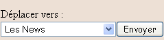

Si vous êtes sur cette page, c'est parce que vous avez décidé de laisser tomber phpbb, ou autre, pour vous lancer dans l'aventure qu'est la création d'un forum. Et ça tombe bien, parce que justement, ici on va voir comment faire ça :p . Il faut, avant de commencer, que vous sachiez que je vais montrer comment réaliser une base que vous pourrez ensuite faire évoluer comme bon vous semblera. Sachez aussi que la création d'un forum suppose la connaissance de pas mal de points du php assez divers. Il est donc préférable que vous ayez lu les cours de M@teo21, ça sera largement suffisant.
Le cours est divisé en deux parties : la première concerne les pages membres, c'est-à-dire celles qui concernent les fonctions communes à tous (poster, lire des messages, etc.). La seconde, vous l'aurez deviné, c'est la partie d'administration. Il y aura également une troisième partie en annexe, pour ceux qui auront tenu jusqu'au bout ^^ .
Allez, je ne vous fais pas patienter plus longtemps, on y va ! ^^
Remerciements
Un grand merci à Jérémy_B qui m'a aidé à mettre à jour ce tutoriel en améliorant la sécurité.
Merci à Nelty pour son soutien `Haku pour son aide Caline pour les corrections Kickoff pour avoir mis le tuto aux normes
Comme le titre l'indique, cette partie va tout mettre en place. Que ce soit dans votre tête, dans la base de données comme dans les dossiers, on va faire en sorte que tout soit prêt pour commencer le reste. Du coup, on va s'en tenir à la base de la base : donc, pas de php ici ; tout ce qu'on va faire, c'est mettre au point ce que nous allons réaliser.
On ne peut pas vraiment se lancer dans la création d'un forum sans avoir pris le temps d'étudier un peu la question. Alors, on va voir en détail ce qu'est un forum : ça peut paraître barbant pour certains, mais au moins, ça mettra les choses au clair.
Différents types de forums
Lorsque vous créez un site, vous êtes souvent amenés à vouloir communiquer avec les internautes qui le visitent : c'est là que le forum est utile. Au final, ce n'est pas très différent d'un livre d'or, on va simplement diviser le tout en plusieurs catégories, et utiliser un système de connexion.
A partir du moment où vous souhaitez installer un forum sur votre site, deux choix s'offrent à vous :
Utiliser une plate-forme comme la célèbre phpbb (avantages : c'est facile, gratuit et, quoi qu'on en dise, assez sûr).
Programmer votre propre forum (avantages : vous pouvez modifier ce que vous voulez, l'insérer dans votre design, et puis ça fait plus classe ^^ ).
Comme on n'a rien sans rien, c'est évidemment plus long et plus difficile d'utiliser la deuxième solution, mais pas de panique : on va s'y mettre ensemble :) , et au final, vous serez contents de pouvoir vous plonger dans vos scripts sans choper une migraine, comme c'est le cas avec phpbb.
De quoi ai-je besoin ?
Pour créer un forum, il ne faut rien d'extraordinaire :
Une base de données : elle va nous permettre de stocker toutes les informations de notre forum.
Un programme de traitement de texte : le mieux est d'utiliser Notepad++, présenté par M@teo21 dans ses cours, mais vous faites comme vous voulez :p .
Un logiciel FTP : grâce à lui, on va envoyer le tout sur le site, et voir le résultat.
Bref, l'attirail classique du programmeur PHP ; la seule différence, c'est qu'il va falloir créer un dossier appelé forum, car on va y mettre pas mal de scripts.
Avant de passer à la base de données, on va voir les fonctionnalités que proposera le forum, une fois terminé :
Possibilité de s'inscrire pour avoir un pseudo, et grâce auquel on peut poster de nouveaux topics, ou bien répondre.
Possibilité de modifier ou de supprimer ses propres messages, en cas de fautes d'orthographe.
Possibilité de consulter une page qui affiche des informations sur les membres (profil), et de pouvoir modifier le sien.
Possibilité de recevoir et d'envoyer des messages privés aux autres membres.
Et j'en passe ^^ .
Ça résume un peu les services principaux proposés aux visiteurs de notre forum, et en fait, ça regroupe à peu près toutes les bases. Une fois que ce sera terminé, vous pourrez vous-mêmes ajouter des fonctions, comme une barre de recherche, une liste d'amis, etc.
On va maintenant passer à la création de notre base de données : elle va être simplifiée par rapport à celle qu'on utilise avec phpbb, car le forum va être un peu plus simple.
Han !! Tu vas nous faire programmer un forum super-simple, alors que t'avais dit que ça serait un beau forum complet ! :colere2:
Pas de panique : en fait, phpbb est une plate-forme qui s'utilise par plusieurs sites ; aussi, il faut prévoir des dizaines de paramètres à modifier facilement par l'administrateur afin d'ajuster son forum à ses goûts. La différence, c'est que nous, on ne veut pas l'exporter, ni proposer à des internautes de le télécharger : on veut simplement l'utiliser pour nous. Forcément, ça simplifie pas mal les choses.
Bref, pour en revenir à nos tables, voici ce qu'on va faire. Une table forum_categorie : elle va comporter trois champs, cat_id, cat_nom, cat_ordre. C'est dans cette table que vont être stockées les différentes catégories du forum ; par exemple, sur le Site du Zér0, il y en a cinq (Site Web, Programmation, Mapping, etc.). Une table forum_forum : elle va comporter treize champs, forum_id, cat_id, forum_name, forum_desc, forum_ordre, forum_last_post_id, forum_topic, forum_post, auth_view, auth_post, auth_topic, auth_annonce, auth_modo. C'est tout simplement la table qui va être utilisée pour écrire le nom de chaque forum, leur description, etc.
Que représentent les champs avec le préfixe auth_ ?
Ils vont comporter un numéro qui renseignera sur le niveau qu'il faut avoir pour lire, poster ou créer un nouveau message pour chaque forum (il est possible que vous souhaitiez faire un forum spécial pour les administrateurs ; dans ce cas on mettra un numéro particulier, mais on verra ça plus tard ;) ).
Une table forum_topic : elle va comporter dix champs, topic_id, forum_id, topic_titre, topic_createur, topic_vu, topic_time, topic_genre, topic_last_post, topic_first_post, topic_post.
Dans l'ordre logique, on est passé de la catégorie au forum, et on arrive aux topics (ou sujets). Une table forum_post : elle va comporter six champs, post_id, post_createur, post_texte, post_time, topic_id, post_forum_id. C'est donc la table qui va contenir les informations sur les posts (ou messages).
Une table forum_membres : elle va comporter un grand nombre de champs, mais le nombre exact, c'est à vous de le déterminer. En fait, ça dépend du nombre d'informations que vous voulez connaître sur vos membres. Toutefois, il faut créer un minimum de champs, à savoir : membre_id, membre_pseudo, membre_mdp, membre_email, membre_avatar, membre_signature, membre_localisation, membre_inscrit, membre_derniere_visite, membre_rang, membre_post.
Dans ma requête, j'en ai ajouté quelques autres, comme membre_msn, membre_siteweb.
Voici donc les requêtes à copier :
--
-- Table `forum_categorie`
--
CREATE TABLE `forum_categorie` (
`cat_id` int(11) NOT NULL AUTO_INCREMENT,
`cat_nom` varchar(30) collate latin1_general_ci NOT NULL,
`cat_ordre` int(11) NOT NULL,
PRIMARY KEY (`cat_id`),
UNIQUE KEY `cat_ordre` (`cat_ordre`)
);
--
-- Table `forum_forum`
--
CREATE TABLE `forum_forum` (
`forum_id` int(11) NOT NULL AUTO_INCREMENT,
`forum_cat_id` mediumint(8) NOT NULL,
`forum_name` varchar(30) collate latin1_general_ci NOT NULL,
`forum_desc` text collate latin1_general_ci NOT NULL,
`forum_ordre` mediumint(8) NOT NULL,
`forum_last_post_id` int(11) NOT NULL,
`forum_topic` mediumint(8) NOT NULL,
`forum_post` mediumint(8) NOT NULL,
`auth_view` tinyint(4) NOT NULL,
`auth_post` tinyint(4) NOT NULL,
`auth_topic` tinyint(4) NOT NULL,
`auth_annonce` tinyint(4) NOT NULL,
`auth_modo` tinyint(4) NOT NULL,
PRIMARY KEY (`forum_id`)
);
--
-- Table `forum_membres`
--
CREATE TABLE `forum_membres` (
`membre_id` int(11) NOT NULL AUTO_INCREMENT,
`membre_pseudo` varchar(30) collate latin1_general_ci NOT NULL,
`membre_mdp` varchar(32) collate latin1_general_ci NOT NULL,
`membre_email` varchar(250) collate latin1_general_ci NOT NULL,
`membre_msn` varchar(250) collate latin1_general_ci NOT NULL,
`membre_siteweb` varchar(100) collate latin1_general_ci NOT NULL,
`membre_avatar` varchar(100) collate latin1_general_ci NOT NULL,
`membre_signature` varchar(200) collate latin1_general_ci NOT NULL,
`membre_localisation` varchar(100) collate latin1_general_ci NOT NULL,
`membre_inscrit` int(11) NOT NULL,
`membre_derniere_visite` int(11) NOT NULL,
`membre_rang` tinyint (4) DEFAULT 2,
`membre_post` int(11) NOT NULL,
PRIMARY KEY (`membre_id`)
);
--
-- Table `forum_post`
--
CREATE TABLE `forum_post` (
`post_id` int(11) NOT NULL AUTO_INCREMENT,
`post_createur` int(11) NOT NULL,
`post_texte` text collate latin1_general_ci NOT NULL,
`post_time` int(11) NOT NULL,
`topic_id` int(11) NOT NULL,
`post_forum_id` int(11) NOT NULL,
PRIMARY KEY (`post_id`)
);
--
-- Table `forum_topic`
--
CREATE TABLE `forum_topic` (
`topic_id` int(11) NOT NULL AUTO_INCREMENT,
`forum_id` int(11) NOT NULL,
`topic_titre` char(60) collate latin1_general_ci NOT NULL,
`topic_createur` int(11) NOT NULL,
`topic_vu` mediumint(8) NOT NULL,
`topic_time` int(11) NOT NULL,
`topic_genre` varchar(30) collate latin1_general_ci NOT NULL,
`topic_last_post` int(11) NOT NULL,
`topic_first_post` int(11) NOT NULL,
`topic_post` mediumint(8) NOT NULL,
PRIMARY KEY (`topic_id`),
UNIQUE KEY `topic_last_post` (`topic_last_post`)
);
À première vue, le nom de chaque champ est assez explicite, et vous ne devez pas avoir trop de mal à comprendre à quoi ils vont nous servir. Les seules qui peuvent poser problèmes sont cat_ordre et forum_ordre : il s'agit en fait de nombres entiers (int) qui seront attribués à chaque catégorie ou forum. Ainsi, on pourra afficher la liste des forums dans un ordre précis.
Voilà la dernière partie avant de passer à la programmation pure et dure. On va ici s'intéresser à l'aspect visuel de notre forum, c'est-à-dire voir ce qu'on peut faire pour éviter d'avoir un simple tableau blanc présentant des messages.
Le CSS
Comme pour n'importe quelle page d'un site, on va utiliser le CSS pour améliorer le design ; je vais donc vous demander de créer un fichier appelé design.css, et que vous allez placer dans votre dossier forum (si vous voulez garder le même fichier css que pour le reste de votre site, ça ne pose pas de problème, mais il va falloir prévoir de le modifier).
Au fur et à mesure qu'on va utiliser des balises, je vous demanderai de temps en temps de modifier ce fichier : donc gardez-le à portée.
Les images
Vous l'avez sûrement remarqué, dans un forum, il y a quelques images qui rendent le résultat un peu moins triste que si on touchait à rien. Et comme on ne veut pas que ce soit sobre, on va créer quelques images. Il va vous falloir :
- un bouton 'Nouveau Topic' - un bouton 'Répondre' - un bouton 'Éditer' - un bouton 'Supprimer' - une liste de smilies - un signal pour montrer qu'un topic est non lu, et un autre pour montrer qu'il est déjà lu - une petite flèche sur laquelle on va cliquer pour accéder au dernier message de chaque forum.
Après, c'est à vous de voir pour la réalisation, ça dépend totalement du style général de votre forum :) ; vous pouvez d'ailleurs en mettre davantage si vous le souhaitez (par exemple, un signal spécial pour les topic-annonces) ; à titre d'exemple, je mets ici quelques images utilisées par phpbb dans le template utilisé par défaut : subsilver.
On arrive à la fin de ce chapitre : même si jusqu'ici vous n'avez pas vraiment l'impression d'avoir fait quoi que ce soit, on a au moins posé les bases. On n'a pas encore utilisé de php, certes, mais si on résume : on a vu ce qu'on voulait faire, on a préparé le terrain en créant nos tables, et on a même nos images. Sans plus attendre, on va commencer à coder le tout en débutant par la page index.php :pirate: .
Salutations, amis zéros ! Si ça vous a manqué de pas utiliser un mot de php dans le dernier chapitre, on va pouvoir se rattraper ici ;) . En effet, cette partie est dédiée à la page index.php, qui est celle chargée lorsqu'on arrive sur le forum, et qui va donc logiquement présenter les catégories et les forums.
En fait, avant de se lancer dans notre première page, il va falloir créer quelques fichiers à inclure dans notre script. Si je dis "quelques", c'est parce que le nombre dépend de vous (une fois de plus) ; personnellement, j'aime bien avoir des menus en haut et à gauche de mon forum, ce qui fait que j'en ai déjà deux en plus. Mais si vous voulez garder la même navigation que dans votre site, il est inutile d'en refaire. Quoi qu'il en soit, pour qu'on soit certains de bien se comprendre, voici les fichiers que je vais inclure dans mes scripts :
Allez y vous pouvez tester, il s'agit de mes vrais identifiants ;) . Cette page va permettre de lancer la connexion à la base de données, en utilisant une page à part on évite de réécrire à chaque fois nos identifiants, ce qui n'est pas pratique et pas top niveau sécurité.
Page : debut.php
<!DOCTYPE html PUBLIC "-//W3C//DTD XHTML 1.0 Strict//EN" "http://www.w3.org/TR/xhtml1/DTD/xhtml1-strict.dtd">
<html xmlns="http://www.w3.org/1999/xhtml" xml:lang="fr" >
<head>
<?php
//Si le titre est indiqué, on l'affiche entre les balises <title>
echo (!empty($titre))?'<title>'.$titre.'</title>':'<title> Forum </title>';
?>
<meta http-equiv="Content-Type" content="text/html; charset=iso-8859-1" />
<link rel="stylesheet" media="screen" type="text/css" title="Design" href="./css/design.css" />
</head>
<?php
//Attribution des variables de session
$lvl=(isset($_SESSION['level']))?(int) $_SESSION['level']:1;
$id=(isset($_SESSION['id']))?(int) $_SESSION['id']:0;
$pseudo=(isset($_SESSION['pseudo']))?$_SESSION['pseudo']:'';
//On inclue les 2 pages restantes
include("./includes/functions.php");
include("./includes/constants.php");
?>
Pour ceux qui s'interroge sur les lignes du type :
<?php echo (!empty($titre))?'<title>'.$titre.'</title>':'<title> Forum </title>'; ?>
C'est une façon plus rapide d'écrire une condition, ça revient au même que de faire :
<?php
if (!empty($titre))
{
echo '<title> '.$titre.' </title>';
}
else //Sinon, on écrit forum par défaut
{
echo '<title> Forum </title>';
}
?>
J'utiliserai cette notation souvent par la suite parce qu'elle est quand même beaucoup plus concise comme vous pouvez le voir ici.
Dans la suite du code, on définit les variables de session qui nous serviront par la suite pour obtenir des informations sur le visiteur (pas de panique tout va s'éclaircir quand on les utilisera !). Enfin on inclut deux pages dont on va voir l'utilité tout de suite.
Ceci est une page qui va gérer le header (la bannière) et les menus, à vous d'en faire ce que vous voulez, ajoutez y des liens, des images... bref faites vous plaisir mais n'oubliez pas d'aller faire les modifications adéquates sur le fichier css, ne vous inquiétez pas on y vient. Pour info j'ai repris le script de M@ateo21 dans son cours sur le XHTML/CSS.
Page : functions.php
Cette page contiendra à l'avenir toutes les fonctions utilisées régulièrement sur le forum, on va la laisser vide pour l'instant.
Page : constants.php
Cette page contiendra toutes les constantes qu'on va utiliser dans le fourm. Pour définir une constante, on réalise le code suivant en se servant de la fonction define :
Ici je définis des constantes qui nous serviront pour les niveaux d'accès. Il suffira alors décrire ADMIN pour 4, ce qui est quand même beaucoup plus clair.
Voilà : c'est tout pour ces fichiers qu'on va donc utiliser grâce à la fonction native include de php, que vous connaissez sûrement si vous avez lu les cours du site.
On y arrive, on va pouvoir commencer notre première vraie page ! Avant tout, voyons comment elle va se présenter :
Dans un premier temps on va générer la page en incluant les fichiers dont on vient de parler, ensuite on va inscrire le titre du forum. Il suffira alors de faire une requête pour récupérer dans notre base de données tous les forums et créer un tableau pour y présenter les forums par catégorie. Enfin un pied de page donnera des indications sur le nombre de membres, de messages ou autre.
Je vous recommande vivement d'utiliser votre fichier menu.php pour y ajouter des liens de navigation : connexion, enregistrement, boite de message privée et autre ce qui nous évitera d'avoir à écrire ses liens sur chaque page !
Haut de page
Page : index.php
<?php
//Cette fonction doit être appelée avant tout code html
session_start();
//On donne ensuite un titre à la page, puis on appelle notre fichier debut.php
$titre = "Index du forum";
include("includes/identifiants.php");
include("includes/debut.php");
include("includes/menu.php");
Cette première partie de code ne doit pas vous poser trop de problèmes de compréhension, normalement : il s'agit juste d'inclure nos deux fichiers.
Maintenant, si vous le voulez bien, avant de reprendre, on va faire un tour du côté du fichier design.css ; il va falloir créer un id corps_forum, un pied de page (footer) et une autre bannière pour nos balises <div>. Voici à titre indicatif ce que j'ai réalisé: bien sûr, vous faites comme vous voulez, encore une fois :p .
Vous vous interrogez peut-être sur l'intérêt de cette ligne. Il s'agit simplement d'un outil de navigation (on appelle cela un fil d'Ariane (Def. fil d'Ariane), comme on en trouve dans beaucoup de forums, et qui nous permet de se repérer et de se déplacer plus rapidement (d'ailleurs, si vous levez les yeux, vous verrez qu'il y en a un sur ce site ^^ ).
Voilà : on a fini avec le haut de la page, et on va donc pouvoir passer à la partie la plus importante, l'affichage des catégories.
Afficher les forums
Ce qu'on va faire ici, ça va être en fait très simple puisqu'on va simplement afficher un tableau à cinq colonnes. La première colonne va afficher une image, la deuxième affichera le titre et la description, la troisième, le nombre de sujets, la quatrième, le nombre de messages, et la dernière donnera des infos sur le dernier message de cette catégorie.
Pour avoir un tableau un peu plus classe, je suis passé par mon fichier css, et je vous recommande d'en faire autant, ne serait-ce que pour fixer la largeur de vos cases.
Dans un premier temps, j'ai créé des classes pour les balises <table>, <th> et <td>. Chaque classe correspond à une colonne ; j'ai donc seulement fixé leur taille. J'ai ensuite modifié un peu ces balises, sans toutefois y apporter de changements majeurs (elles sont simplement entourées de noir, et ont un fond en couleur). Bien entendu, ce n'est qu'une proposition de design ; en aucun cas la modification de celui-ci posera un problème de fonctionnement. Vous pouvez aussi ajouter un padding pour que les textes ne soient pas collés au bord de leurs cases.
On reprend le php !
Sans plus attendre, voilà la suite :
Page : index.php
<h1>Mon super forum</h1>
<?php
//Initialisation de deux variables
$totaldesmessages = 0;
$categorie = NULL;
?>
Ici, on écrit le titre de la page : comme vous le voyez, dans un grand moment d'inspiration, j'ai mis "Mon super forum". Ensuite ça devient plus intéressant : je prends deux variables qui ont le même but, diminuer le nombre de requêtes de cette page. Si vous voulez tout savoir, ce tutoriel a été refusé une première fois parce que le forum utilisait trop de requêtes. Donc, en initialisant deux variables, croyez-moi ou non, ça les diminue ; la première compte le nombre de messages dans chaque forum pour l'écrire en bas de la page, et la seconde va prendre tout son sens dans le code qui suit.
La requête
<?php
//Cette requête permet d'obtenir tout sur le forum
$query=$db->prepare('SELECT cat_id, cat_nom,
forum_forum.forum_id, forum_name, forum_desc, forum_post, forum_topic, auth_view, forum_topic.topic_id, forum_topic.topic_post, post_id, post_time, post_createur, membre_pseudo,
membre_id
FROM forum_categorie
LEFT JOIN forum_forum ON forum_categorie.cat_id = forum_forum.forum_cat_id
LEFT JOIN forum_post ON forum_post.post_id = forum_forum.forum_last_post_id
LEFT JOIN forum_topic ON forum_topic.topic_id = forum_post.topic_id
LEFT JOIN forum_membres ON forum_membres.membre_id = forum_post.post_createur
WHERE auth_view <= :lvl
ORDER BY cat_ordre, forum_ordre DESC');
$query->bindValue(':lvl',$lvl,PDO::PARAM_INT);
$query->execute();
?>
C'est une requête, ce truc !? o_O
Oui, et c'est même très pratique ^^ . Les jointures sont expliquées par M@teo21 dans ses cours. Si vous avez un trou de mémoire, je vous conseille de relire son chapitre Les jointures entre tables. En fait, cette requête va mettre à la suite les tables forum_categorie, forum_forum, forum_post, forum_topic et forum_membres en les liant par des champs communs (par exemple, ici le champ cat_id de forum_forum va être lié avec le champ cat_id de forum_categorie).
Quant à la ligne juste avant, elle détermine le niveau d'accès du visiteur, on verra beaucoup plus tard ce que tout ça signifie, en attendant en utilisant cette méthode la page n'affichera pas les forums qui ne sont pas censés être vus.
Catégories
On va commencer par créer notre tableau
<table>
<?php
//Début de la boucle
while($data = $query->fetch())
{
//On affiche chaque catégorie
if( $categorie != $data['cat_id'] )
{
//Si c'est une nouvelle catégorie on l'affiche
$categorie = $data['cat_id'];
?>
<tr>
<th></th>
<th class="titre"><strong><?php echo stripslashes(htmlspecialchars($data['cat_nom'])); ?>
</strong></th>
<th class="nombremessages"><strong>Sujets</strong></th>
<th class="nombresujets"><strong>Messages</strong></th>
<th class="derniermessage"><strong>Dernier message</strong></th>
</tr>
<?php
}
//Ici, on met le contenu de chaque catégorie
?>
Avant de poursuivre, faisons une petite pause ^^ . Vous avez vu que je procède comme ceci :
On regarde si c'est une nouvelle catégorie : dans ce cas, on l'affiche en faisant un nouveau tableau. C'est là que la variable $categorie prend son sens. Elle est d'abord vide, donc, lorsqu'on va tester si elle a le même id que celle de la requête, ça ne sera bien sûr pas le cas, alors, on affichera un nouveau tableau après avoir actualisé la valeur de la variable.
On affiche tous les forums, et c'est ce qu'on va voir tout de suite ;) .
Les forums
<?php
// Ce super echo de la mort affiche tous
// les forums en détail : description, nombre de réponses etc...
echo'<tr><td><img src="./images/message.gif" alt="message" /></td>
<td class="titre"><strong>
<a href="./voirforum.php?f='.$data['forum_id'].'">
'.stripslashes(htmlspecialchars($data['forum_name'])).'</a></strong>
<br />'.nl2br(stripslashes(htmlspecialchars($data['forum_desc']))).'</td>
<td class="nombresujets">'.$data['forum_topic'].'</td>
<td class="nombremessages">'.$data['forum_post'].'</td>';
// Deux cas possibles :
// Soit il y a un nouveau message, soit le forum est vide
if (!empty($data['forum_post']))
{
//Selection dernier message
$nombreDeMessagesParPage = 15;
$nbr_post = $data['topic_post'] +1;
$page = ceil($nbr_post / $nombreDeMessagesParPage);
echo'<td class="derniermessage">
'.date('H\hi \l\e d/M/Y',$data['post_time']).'<br />
<a href="./voirprofil.php?m='.stripslashes(htmlspecialchars($data['membre_id'])).'&action=consulter">'.$data['membre_pseudo'].' </a>
<a href="./voirtopic.php?t='.$data['topic_id'].'&page='.$page.'#p_'.$data['post_id'].'">
<img src="./images/go.gif" alt="go" /></a></td></tr>';
}
else
{
echo'<td class="nombremessages">Pas de message</td></tr>';
}
//Cette variable stock le nombre de messages, on la met à jour
$totaldesmessages += $data['forum_post'];
//On ferme notre boucle et nos balises
} //fin de la boucle
$query->CloseCursor();
echo '</table></div>';
?>
Voilà : on a terminé l'affichage des forums. Bon, en fait, tout se joue sur le gros echo : il remplit simplement les cases du tableau avec les données de la requête. Les liens des images sont bien sûr à modifier en fonction de votre organisation. Ensuite, on met à jour la variable qui compte le nombre de messages total, et le tour est joué ! J'ai également mis une petite flèche, sobrement appelée go.gif, un lien vers le dernier message de chaque forum.
Avant de conclure j'aimerais retourner sur la petite partie concernant le lien vers le dernier message. Pour l'instant c'est surement un peu flou mais en fait il faut calculer la page dans laquelle ce message sera et faire le lien vers cette page, de cette manière vous arriverez directement sur le dernier message posté de chaque forum.
Le pied de page
Nous y voilà, on passe au bas de la page. Comme sur un forum phpbb, on va simplement y mettre des statistiques sur le forum (nombre de membres, nombre de messages, dernier membre inscrit).
<?php
//Le pied de page ici :
echo'<div id="footer">
<h2>
Qui est en ligne ?
</h2>
';
//On compte les membres
$TotalDesMembres = $db->query('SELECT COUNT(*) FROM forum_membres')->fetchColumn();
$query->CloseCursor();
$query = $db->query('SELECT membre_pseudo, membre_id FROM forum_membres ORDER BY membre_id DESC LIMIT 0, 1');
$data = $query->fetch();
$derniermembre = stripslashes(htmlspecialchars($data['membre_pseudo']));
echo'<p>Le total des messages du forum est <strong>'.$totaldesmessages.'</strong>.<br />';
echo'Le site et le forum comptent <strong>'.$TotalDesMembres.'</strong> membres.<br />';
echo'Le dernier membre est <a href="./voirprofil.php?m='.$data['membre_id'].'&action=consulter">'.$derniermembre.'</a>.</p>';
$query->CloseCursor();
?>
</div>
</body>
</html>
Petite explication sur ce bout de code. Au total, on va donc faire deux requêtes : la première va compter le nombre d'entrées dans la table forum_membres pour retourner le nombre de membres (sans blague ? :lol: ). La deuxième requête va aller chercher le pseudo et l'id du dernier membre inscrit ; comment fait-elle ? Elle regarde toutes les id et retourne la plus grande, tout simplement ^^ .
On est donc arrivés en bas de notre page index.php, et on va maintenant tester pour voir ce que ça donne.
Si vous lancez votre navigateur et que vous allez sur la page index.php, vous voyez normalement une erreur s'afficher. Ou alors un tableau vide, si vous n'avez pas suivi exactement le code proposé.
Euh ? :euh:
Non, en fait c'est parfaitement normal, dans la mesure où votre base de données est entièrement vide pour l'instant. Dans l'avenir, pour la remplir il suffira de se rendre dans la page d'administration, rajouter des forums ou des catégories, ou bien simplement de s'inscrire... Mais comme on n'a pas encore créé toutes les pages qui vont nous le permettre, il va falloir modifier directement la base de données, histoire de voir un peu ce que ça donne.
Je vous propose donc les requêtes suivantes, que vous pourrez bien sûr modifier plus tard.
INSERT INTO `forum_categorie` (`cat_id`, `cat_nom`, `cat_ordre`) VALUES (1, 'Général', 30);
INSERT INTO `forum_categorie` (`cat_id`, `cat_nom`, `cat_ordre`) VALUES (2, 'Jeux-Vidéos', 20);
INSERT INTO `forum_categorie` (`cat_id`, `cat_nom`, `cat_ordre`) VALUES (3, 'Autre', 10);
INSERT INTO `forum_forum` (`forum_id`, `forum_cat_id`, `forum_name`, `forum_desc`, `forum_ordre`, `forum_last_post_id`, `forum_topic`, `forum_post`, `auth_view`, `auth_post`, `auth_topic`, auth_annonce, auth_modo)
VALUES (1, 1, 'Présentation', 'Nouveau sur le forum? Venez vous présenter ici !', 60, 0, 0, 0, 0, 0, 0, 0, 0);
INSERT INTO `forum_forum` (`forum_id`, `forum_cat_id`, `forum_name`, `forum_desc`, `forum_ordre`, `forum_last_post_id`, `forum_topic`, `forum_post`, `auth_view`, `auth_post`, `auth_topic`, auth_annonce, auth_modo)
VALUES (2, 1, 'Les News', 'Les news du site sont ici', 50, 0, 0, 0, 0, 0, 0, 0, 0);
INSERT INTO `forum_forum` (`forum_id`, `forum_cat_id`, `forum_name`, `forum_desc`, `forum_ordre`, `forum_last_post_id`, `forum_topic`, `forum_post`, `auth_view`, `auth_post`, `auth_topic`, auth_annonce, auth_modo)
VALUES (3, 1, 'Discussions générales', 'Ici on peut parler de tout sur tous les sujets', 40, 0, 0, 0, 0, 0, 0, 0, 0);
INSERT INTO `forum_forum` (`forum_id`, `forum_cat_id`, `forum_name`, `forum_desc`, `forum_ordre`, `forum_last_post_id`, `forum_topic`, `forum_post`, `auth_view`, `auth_post`, `auth_topic`, auth_annonce, auth_modo)
VALUES (4, 2, 'MMORPG', 'Parlez ici des MMORPG', 60, 0, 0, 0, 0, 0, 0, 0, 0);
INSERT INTO `forum_forum` (`forum_id`, `forum_cat_id`, `forum_name`, `forum_desc`, `forum_ordre`, `forum_last_post_id`, `forum_topic`, `forum_post`, `auth_view`, `auth_post`, `auth_topic`, auth_annonce, auth_modo)
VALUES (5, 2, 'Autres jeux', 'Forum sur les autres jeux', 50, 0, 0, 0, 0, 0, 0, 0, 0);
INSERT INTO `forum_forum` (`forum_id`, `forum_cat_id`, `forum_name`, `forum_desc`, `forum_ordre`, `forum_last_post_id`, `forum_topic`, `forum_post`, `auth_view`, `auth_post`, `auth_topic`, auth_annonce, auth_modo)
VALUES (6, 3, 'Loisir', 'Vos loisirs', 60, 0, 0, 0, 0, 0, 0, 0, 0);
INSERT INTO `forum_forum` (`forum_id`, `forum_cat_id`, `forum_name`, `forum_desc`, `forum_ordre`, `forum_last_post_id`, `forum_topic`, `forum_post`, `auth_view`, `auth_post`, `auth_topic`, auth_annonce, auth_modo)
VALUES (7, 3, 'Délires', 'Décrivez ici tous vos délires les plus fous', 50, 0, 0, 0, 0, 0, 0, 0, 0);
Ce code aura pour effet de créer trois catégories, et quelques forums pour chacune d'elles. Vous vous demandez peut-être pourquoi le champ ordre prend des valeurs si espacées (60, 50, 40) ? Ça permet d'éviter d'avoir à modifier toutes les valeurs dans le cas où l'on voudrait ajouter une catégorie, ou un forum, entre deux autres. Avec ce système par exemple, on a juste à mettre 55 pour placer une catégorie entre Général et Jeux Vidéos :) .
Si vous en êtes arrivés là et que vous êtes toujours en vie, c'est que votre page d'index est terminée. Dans le chapitre suivant, on va s'attaquer à un autre point important des forums : la connexion, et surtout l'enregistrement des membres.
On arrive à ma partie préférée : la création de la page connexion.php, et register.php. Comme leurs noms l'indiquent bien, elles permettront aux visiteurs soit de se connecter, ou bien, s'il n'est pas inscrit sur le forum, de le faire tout de suite.
La page qu'on va créer maintenant s'appelle sobrement connexion.php ; ce qu'on veut qu'elle fasse est simple, présenter un formulaire avec pseudo et mot de passe, puis envoyer les infos sur une page traitement qui sera en fait la même page.
Formulaire
Je vous avais prévenus que ce tutoriel touchait pas mal d'aspects différents du php : cette fois, on va passer un moment sur les formulaires.
On commence avec le début de la page, toujours le même :
Bon : je ne pense pas avoir besoin de m'arrêter longtemps, c'est la même chose que partout ailleurs. On va maintenant afficher le formulaire, mais avant, un peu de sécurité s'impose :
<?php
echo '<h1>Connexion</h1>';
if ($id!=0) erreur(ERR_IS_CO);
?>
Mais qu'est ce que c'est que ce truc !? o_O
Bon pour la première ligne je pense que ça ne pose pas de soucis, voyons un peu la seconde. Ici on veut s'assurer que le visiteur qui arrive sur cette page n'est pas déjà connecté, c'est pour ça qu'on vérifie la valeur de la variable $id (je rappelle qu'elle contient 0 si le visiteur n'est pas connecté, l'id du membre sinon). S'il y a un problème, on appelle la fonction erreur, cette fonction il va bien entendu falloir la déclarer quelque part, pour cela on va utiliser la page functions.php.
<?php
function erreur($err='')
{
$mess=($err!='')? $err:'Une erreur inconnue s\'est produite';
exit('<p>'.$mess.'</p>
<p>Cliquez <a href="./index.php">ici</a> pour revenir à la page d\'accueil</p></div></body></html>');
}
?>
Son fonctionnement est simple, elle arrête le script php en indiquant un message prédéfini, par défaut, le message est Une erreur inconnue s'est produite. Bien entendu, il serait bon de ne pas oublier de déclarer toutes nos constantes et de créer ainsi autant de messages d'erreur que vous voulez. Pour cela rendez-vous sur la page constants.php
<?php
define('ERR_IS_CO','Vous ne pouvez pas accéder à cette page si vous n\'êtes pas connecté');
?>
Mais pourquoi tu t'embêtes comme ça ?! Tu peux pas simplement écrire le message dans la page ?
Si mais croyez moi on y gagne avec cette méthode, pas besoin de s'amuser à réécrire 120 fois le même message, parce que des erreurs il va falloir en afficher un bon paquet ! Autre avantage, avec cette méthode vous pouvez facilement personnaliser vos messages, ajouter une image, une couleur de fond etc... Il vous suffira d'écrire dans votre fonction erreur()
<?php
exit('<div id="error"><p>'.$mess.'</p>
<p>Cliquez <a href="./index.php">ici</a> pour revenir à la page d\'accueil</p></div></div></body></html>');
?>
Et d'aller définir error dans votre fichier CSS.
Voilà, à présent le formulaire (pas besoin de php ici).
<?php
if (!isset($_POST['pseudo'])) //On est dans la page de formulaire
{
echo '<form method="post" action="connexion.php">
<fieldset>
<legend>Connexion</legend>
<p>
<label for="pseudo">Pseudo :</label><input name="pseudo" type="text" id="pseudo" /><br />
<label for="password">Mot de Passe :</label><input type="password" name="password" id="password" />
</p>
</fieldset>
<p><input type="submit" value="Connexion" /></p></form>
<a href="./register.php">Pas encore inscrit ?</a>
</div>
</body>
</html>';
}
?>
Voilà, c'est tout pour cette partie :) . Si elle est si courte, c'est parce que finalement, on a juste à afficher le formulaire ici. Voici tout de même quelques explications. Dans un premier temps, on vérifie donc que le visiteur n'est pas connecté, ensuite on regarde si la variable $_POST['pseudo'] est remplie, si ce n'est pas le cas, c'est que notre visiteur vient d'arriver et on lui affiche le formulaire.
Un autre point, la balise <label for="pseudo"> : pour bien comprendre son intérêt, je vous envoie sur le tuto de Romain128. Si vous avez la flemme de le lire (ce qui serait dommage, mais bon ... :p ), sachez que cela permet à la fois d'aligner ses champs de texte, et de pouvoir aller directement sur le champ en cliquant sur le nom. Essayez : en cliquant sur pseudo, vous verrez (ça ne marche pas sur IE, apparemment).
Bref, si vous voulez un effet parfait, lancez votre fichier css et ajoutez ceci :
label {
display:block;
width:150px;
float:left;
}
Traitement
On passe sans plus attendre à la partie traitement.
Cette partie va être une succession de vérifications pour savoir si tout a bien été rempli. J'ai répertorié plusieurs erreurs :
Soit un des champs est vide Soit le membre est déjà connecté (cas déjà traité) Soit le mot de passe est incorrect
Selon le cas, une variable $message contiendra un petit texte qu'on affichera ensuite.
Page : connexion.php
<?php
//On reprend la suite du code
else
{
$message='';
if (empty($_POST['pseudo']) || empty($_POST['password']) ) //Oublie d'un champ
{
$message = '<p>une erreur s\'est produite pendant votre identification.
Vous devez remplir tous les champs</p>
<p>Cliquez <a href="./connexion.php">ici</a> pour revenir</p>';
}
else //On check le mot de passe
{
$query=$db->prepare('SELECT membre_mdp, membre_id, membre_rang, membre_pseudo
FROM forum_membres WHERE membre_pseudo = :pseudo');
$query->bindValue(':pseudo',$_POST['pseudo'], PDO::PARAM_STR);
$query->execute();
$data=$query->fetch();
if ($data['membre_mdp'] == md5($_POST['password'])) // Acces OK !
{
$_SESSION['pseudo'] = $data['membre_pseudo'];
$_SESSION['level'] = $data['membre_rang'];
$_SESSION['id'] = $data['membre_id'];
$message = '<p>Bienvenue '.$data['membre_pseudo'].',
vous êtes maintenant connecté!</p>
<p>Cliquez <a href="./index.php">ici</a>
pour revenir à la page d accueil</p>';
}
else // Acces pas OK !
{
$message = '<p>Une erreur s\'est produite
pendant votre identification.<br /> Le mot de passe ou le pseudo
entré n\'est pas correcte.</p><p>Cliquez <a href="./connexion.php">ici</a>
pour revenir à la page précédente
<br /><br />Cliquez <a href="./index.php">ici</a>
pour revenir à la page d accueil</p>';
}
$query->CloseCursor();
}
echo $message.'</div></body></html>';
}
?>
Terminé :) ! Je pense que le code est assez commenté pour être compris, il n'y a de toute façon rien de dur, ce sont juste des if, tout ce qu'il y a de plus classique ^^ .
Ya un truc moyen, lorsqu'on a terminé la connexion on est redirigé vers la page d'accueil, on peut pas revenir à la page précédente ?
Si mais il faut au préalable ajouter un petit quelque chose sur la page connexion.php
En fait il va falloir retenir la page visitée juste avant l'inscription et l'envoyer via un champ hidden avec tout le reste.
<?php
$page = htmlspecialchars($_POST['page']);
echo 'Cliquez <a href="'.$page.'">ici</a> pour revenir à la page précédente';
?>
En résumé
Si on résume ce qu'on vient de faire ici, on a donné la possibilité à n'importe quel visiteur déjà inscrit (on verra plus tard pour les inscriptions) de se connecter. Ainsi, une variable $_SESSION['pseudo'] est créée avec pour valeur... le pseudo du membre ! On a de plus créé d'autres variables de session pour simplifier les codes à venir. Puisqu'on a utilisé le système de sessions, la variable est détruite à la fin de la visite.
Déconnexion
C'est cool ton truc, mais si j'ai envie de me déconnecter ?
Bah j'y viens justement, on va créer une troisième page (jamais 2 sans 3), appelée deconnexion.php. Le code est hyper court :
<?php
session_start();
session_destroy();
$titre="Déconnexion";
include("includes/debut.php");
include("includes/menu.php");
if ($id==0) erreur(ERR_IS_NOT_CO);
echo '<p>Vous êtes à présent déconnecté <br />
Cliquez <a href="'.htmlspecialchars($_SERVER['HTTP_REFERER']).'">ici</a>
pour revenir à la page précédente.<br />
Cliquez <a href="./index.php">ici</a> pour revenir à la page principale</p>';
echo '</div></body></html>';
?>
Voilà, tout ce qu'on fait c'est appeler la fonction session_destroy pour détruire les variables de session. Bien sur cette fois on vérifie que le visiteur est bien connecté, à vous de créer la constante adéquate. Pour ne pas se retrouver perdus sur la page, j'ai mis un lien vers la dernière page visitée, c'est à vous de personnaliser le reste comme bon vous semble.
On arrive à une partie un peu plus difficile, non pas parce qu'elle demande des connaissances particulières, mais parce que le code de ces deux pages va être plus long. Mais pas de panique : ce n'est pas ça qui va nous effrayer, hein ? ^^ Allez : on commence !
Formulaire
Comme pour le système de connexion, on va diviser la page en deux parties: une pour le formulaire, et l'autre pour le traitement des données envoyées. Pour le nom, je n'ai rien trouvé de plus glamour que register.php on va faire avec pour l'instant :p .
Comme tout à l'heure, la partie formulaire est vraiment simple et courte, voyons d'abord le début :
Vous voyez qu'on retrouve la fonction erreur, on commence à en voir l'utilité, c'est quand même plus rapide que de se farcir le bloc if/then/else plus le message à chaque fois.
On continue avec l'affichage du formulaire :
<?php
if (empty($_POST['pseudo'])) // Si on la variable est vide, on peut considérer qu'on est sur la page de formulaire
{
echo '<h1>Inscription 1/2</h1>';
echo '<form method="post" action="register.php" enctype="multipart/form-data">
<fieldset><legend>Identifiants</legend>
<label for="pseudo">* Pseudo :</label> <input name="pseudo" type="text" id="pseudo" /> (le pseudo doit contenir entre 3 et 15 caractères)<br />
<label for="password">* Mot de Passe :</label><input type="password" name="password" id="password" /><br />
<label for="confirm">* Confirmer le mot de passe :</label><input type="password" name="confirm" id="confirm" />
</fieldset>
<fieldset><legend>Contacts</legend>
<label for="email">* Votre adresse Mail :</label><input type="text" name="email" id="email" /><br />
<label for="msn">Votre adresse MSN :</label><input type="text" name="msn" id="msn" /><br />
<label for="website">Votre site web :</label><input type="text" name="website" id="website" />
</fieldset>
<fieldset><legend>Informations supplémentaires</legend>
<label for="localisation">Localisation :</label><input type="text" name="localisation" id="localisation" />
</fieldset>
<fieldset><legend>Profil sur le forum</legend>
<label for="avatar">Choisissez votre avatar :</label><input type="file" name="avatar" id="avatar" />(Taille max : 10Ko<br />
<label for="signature">Signature :</label><textarea cols="40" rows="4" name="signature" id="signature">La signature est limitée à 200 caractères</textarea>
</fieldset>
<p>Les champs précédés d un * sont obligatoires</p>
<p><input type="submit" value="S\'inscrire" /></p></form>
</div>
</body>
</html>';
} //Fin de la partie formulaire
?>
Analysons un peu ce code. Tout à l'heure on s'est assuré que l'utilisateur était bien un simple visiteur, ensuite il faut regarder si on est dans le cas de l'affichage du formulaire ou dans le cas du traitement, pour cela on s'intéresse à la variable $_POST['pseudo']. A priori, si celle-ci est vide, c'est qu'on vient d'arriver sur la page (à moins que le visiteur n'est oublié de renseigner son pseudo ce qui est assez étrange vous me le concèderez...). Si tout va bien, on lance le formulaire avec plusieurs champs à remplir (le nombre des champs et ce que vous voulez en faire dépend totalement de votre table forum_membres ; si vous voulez par exemple demander l'âge du membre, pensez à créer un champ membre_age avant).
Dis-moi bonhomme, pourquoi tu as rajouté enctype="multipart/form-data" dans ta balise <form> ?
C'est une bonne question... à laquelle je ne vais pas répondre. Non pas par flemme (encore que...), mais parce qu'un tutoriel rédigé par DHKold l'a déjà fait (et sûrement mieux que je ne le ferais). De toute façon, il vous faudra le lire si vous voulez comprendre la suite. Ce tutoriel traite des uploads de fichiers (lien), et on va s'en servir pour les avatars.
Bon. Si vous êtes toujours là, on va pouvoir s'attaquer à la deuxième partie de la page :pirate: !
Traitement
Exactement comme pour la page connexion.php, on va réaliser une série de tests pour voir si tout concorde. Si ce n'est pas le cas, on affiche un message d'erreur. Mais contrairement au système de connexion, on n'a plus que trois champs à vérifier.
On n'oublie pas de déclarer nos variables au début, chez certains ça n'est pas nécessaire mais chez d'autres ça fait tout planter donc autant le faire.
Pseudo et mot de passe
Pour la suite, on va commencer par vérifier les champs pseudo et mot de passe : ce sont les deux qui demandent le plus de tests.
<?php
//On récupère les variables
$i = 0;
$temps = time();
$pseudo=$_POST['pseudo'];
$signature = $_POST['signature'];
$email = $_POST['email'];
$msn = $_POST['msn'];
$website = $_POST['website'];
$localisation = $_POST['localisation'];
$pass = md5($_POST['password']);
$confirm = md5($_POST['confirm']);
//Vérification du pseudo
$query=$db->prepare('SELECT COUNT(*) AS nbr FROM forum_membres WHERE membre_pseudo =:pseudo');
$query->bindValue(':pseudo',$pseudo, PDO::PARAM_STR);
$query->execute();
$pseudo_free=($query->fetchColumn()==0)?1:0;
$query->CloseCursor();
if(!$pseudo_free)
{
$pseudo_erreur1 = "Votre pseudo est déjà utilisé par un membre";
$i++;
}
if (strlen($pseudo) < 3 || strlen($pseudo) > 15)
{
$pseudo_erreur2 = "Votre pseudo est soit trop grand, soit trop petit";
$i++;
}
//Vérification du mdp
if ($pass != $confirm || empty($confirm) || empty($pass))
{
$mdp_erreur = "Votre mot de passe et votre confirmation diffèrent, ou sont vides";
$i++;
}
?>
Voilà, on est arrivés au bout. Je vais détailler ce qui est écrit plus haut.
Pour commencer, j'initialise une variable $i à 0 : son rôle est de stocker le nombre d'erreurs. Pour ce faire, elle est incrémentée à chaque fois qu'un problème est détecté.
Ensuite on passe au pseudo. Il y a plusieurs erreurs possibles : soit le pseudo existe déjà, dans ce cas, on fait une requête qui va nous retourner le nombre d'entrées de la table forum_membres ayant le même pseudo que celui qui a été posté. Pour cela j'utilise une 4 lignes de code qui vous ont peut être posé un peu de soucis.
<?php
$query=$db->prepare('SELECT COUNT(*) AS nbr FROM forum_membres WHERE membre_pseudo =:pseudo');
$query->bindValue(':pseudo',$pseudo, PDO::PARAM_STR);
$query->execute();
$pseudo_free=($query->fetchColumn()==0)?1:0;
?>
Bon pour les trois premières je pense que ça va, ce n'est qu'une simple requête tout ce qu'il y a de plus inoffensif. Pour la dernière, j'utilise la méthode fetchColumn() de l'objet $query qui va récupérer le nombre d'entrées correspondant à la requête. Si celle-ci est 0, tout va bien et la variable booléenne $pseudo_free sera mise à vraie (ou 1, le pseudo n'est pas déjà utilisé). Sinon elle vaudra 0 (le pseudo est déjà utilisé). Dans ce dernier cas, il y a un problème : donc, on incrémente $i.
Par ailleurs, vous avez pu remarquer la présence de la variable $message_pseudo1 : elle va stocker un message, qu'on affichera plus tard pour aider le membre à corriger ses erreurs.
Bref, continuons : la deuxième erreur concerne la taille du pseudo. En général, on aime qu'il contienne entre 3 et 15 caractères (ne me demandez pas pourquoi, par contre ^^ ) : donc j'ai utilisé la fonction strlen qui retourne le nombre de caractères d'un texte. Encore une fois, s'il y a un problème, on incrémente $i, et on crée le message.
On arrive maintenant au mot de passe. Pour lui, on a fait d'une pierre deux coups, puisque j'ai vérifié en même temps s'il était identique à la confirmation, et s'il était vide.
e-mail, MSN et Signature
Sans plus attendre, la suite du code :p :
<?php
//Vérification de l'adresse email
//Il faut que l'adresse email n'ait jamais été utilisée
$query=$db->prepare('SELECT COUNT(*) AS nbr FROM forum_membres WHERE membre_email =:mail');
$query->bindValue(':mail',$email, PDO::PARAM_STR);
$query->execute();
$mail_free=($query->fetchColumn()==0)?1:0;
$query->CloseCursor();
if(!$mail_free)
{
$email_erreur1 = "Votre adresse email est déjà utilisée par un membre";
$i++;
}
//On vérifie la forme maintenant
if (!preg_match("#^[a-zA-Z0-9._-]+@[a-zA-Z0-9._-]{2,}\.[a-z]{2,4}$#", $email) || empty($email))
{
$email_erreur2 = "Votre adresse E-Mail n'a pas un format valide";
$i++;
}
//Vérification de l'adresse MSN
if (!preg_match("#^[a-zA-Z0-9._-]+@[a-zA-Z0-9._-]{2,}\.[a-z]{2,4}$#", $msn) && !empty($msn))
{
$msn_erreur = "Votre adresse MSN n'a pas un format valide";
$i++;
}
//Vérification de la signature
if (strlen($signature) > 200)
{
$signature_erreur = "Votre signature est trop longue";
$i++;
}
?>
On fait des vérifications sur les adresses e-mail et MSN, qui utilisent les regex, afin d'être sûrs que le visiteur n'a pas entré n'importe quoi. Remarquez que la regex utilisée pour l'adresse MSN peut être différente si on veut être plus précis et certains qu'elle est bien en .hotmail ou .msn...
En revanche pour la signature, on n'a pas ce genre de problème : on vérifie alors juste la longueur avec la fonction strlen ; par ailleurs, comme le champ n'était pas obligatoire, il est inutile de vérifier s'il est vide.
L'avatar
On va s'arrêter un petit moment sur l'avatar, car c'est ce qui demande le plus de vérifications. Vous pouvez facilement comprendre pourquoi on ne peut pas laisser des inconnus envoyer n'importe quoi sur notre serveur. Le tuto que j'ai mentionné plus haut explique ceci en détail.
<?php
//Vérification de l'avatar :
if (!empty($_FILES['avatar']['size']))
{
//On définit les variables :
$maxsize = 10024; //Poid de l'image
$maxwidth = 100; //Largeur de l'image
$maxheight = 100; //Longueur de l'image
$extensions_valides = array( 'jpg' , 'jpeg' , 'gif' , 'png', 'bmp' ); //Liste des extensions valides
if ($_FILES['avatar']['error'] > 0)
{
$avatar_erreur = "Erreur lors du transfert de l'avatar : ";
}
if ($_FILES['avatar']['size'] > $maxsize)
{
$i++;
$avatar_erreur1 = "Le fichier est trop gros : (<strong>".$_FILES['avatar']['size']." Octets</strong> contre <strong>".$maxsize." Octets</strong>)";
}
$image_sizes = getimagesize($_FILES['avatar']['tmp_name']);
if ($image_sizes[0] > $maxwidth OR $image_sizes[1] > $maxheight)
{
$i++;
$avatar_erreur2 = "Image trop large ou trop longue :
(<strong>".$image_sizes[0]."x".$image_sizes[1]."</strong> contre <strong>".$maxwidth."x".$maxheight."</strong>)";
}
$extension_upload = strtolower(substr( strrchr($_FILES['avatar']['name'], '.') ,1));
if (!in_array($extension_upload,$extensions_valides) )
{
$i++;
$avatar_erreur3 = "Extension de l'avatar incorrecte";
}
}
?>
Certaines parties de ce code sont assez compliquées, mais elles sont détaillées dans le tutoriel de DHKold. Sachez simplement qu'on utilise le même système que précédemment, avec la variable i qui s'incrémente à chaque erreur.
Quelques remarques toutefois. - Les variables $maxsize, $maxwidth... définissent les limites de tailles, de poids et les extensions des avatars. Vous pouvez les modifier comme vous voulez : sachez bien que la partie 2 de ce tutoriel permettra de le faire directement à partir du panneau d'admin (il en va de même pour toutes les données chiffrées de cette page).
- L'intérêt d'ajouter la fonction strtolower() (qui convertit une chaîne en minuscules) est que les extensions de vos fichiers images seront tous en minuscules. Ainsi, une extension .JPG sera quand même reconnue comme valide.
Et on ne vérifie pas la localisation ? :euh:
Bah, en fait, je ne vois pas trop ce qu'on peut vérifier dans ce champ. Aucune regex ne peut vérifier le nom d'une ville, et on peut le laisser vide.
On affiche le message !
Voilà : maintenant qu'on a fait tous nos tests, il reste plus qu'à afficher le message.
<?php
if ($i==0)
{
echo'<h1>Inscription terminée</h1>';
echo'<p>Bienvenue '.stripslashes(htmlspecialchars($_POST['pseudo'])).' vous êtes maintenant inscrit sur le forum</p>
<p>Cliquez <a href="./index.php">ici</a> pour revenir à la page d accueil</p>';
//La ligne suivante sera commentée plus bas
$nomavatar=(!empty($_FILES['avatar']['size']))?move_avatar($_FILES['avatar']):'';
$query=$db->prepare('INSERT INTO forum_membres (membre_pseudo, membre_mdp, membre_email,
membre_msn, membre_siteweb, membre_avatar,
membre_signature, membre_localisation, membre_inscrit,
membre_derniere_visite)
VALUES (:pseudo, :pass, :email, :msn, :website, :nomavatar, :signature, :localisation, :temps, :temps)');
$query->bindValue(':pseudo', $pseudo, PDO::PARAM_STR);
$query->bindValue(':pass', $pass, PDO::PARAM_INT);
$query->bindValue(':email', $email, PDO::PARAM_STR);
$query->bindValue(':msn', $msn, PDO::PARAM_STR);
$query->bindValue(':website', $website, PDO::PARAM_STR);
$query->bindValue(':nomavatar', $nomavatar, PDO::PARAM_STR);
$query->bindValue(':signature', $signature, PDO::PARAM_STR);
$query->bindValue(':localisation', $localisation, PDO::PARAM_STR);
$query->bindValue(':temps', $temps, PDO::PARAM_INT);
$query->execute();
//Et on définit les variables de sessions
$_SESSION['pseudo'] = $pseudo;
$_SESSION['id'] = $db->lastInsertId(); ;
$_SESSION['level'] = 2;
$query->CloseCursor();
}
else
{
echo'<h1>Inscription interrompue</h1>';
echo'<p>Une ou plusieurs erreurs se sont produites pendant l incription</p>';
echo'<p>'.$i.' erreur(s)</p>';
echo'<p>'.$pseudo_erreur1.'</p>';
echo'<p>'.$pseudo_erreur2.'</p>';
echo'<p>'.$mdp_erreur.'</p>';
echo'<p>'.$email_erreur1.'</p>';
echo'<p>'.$email_erreur2.'</p>';
echo'<p>'.$msn_erreur.'</p>';
echo'<p>'.$signature_erreur.'</p>';
echo'<p>'.$avatar_erreur.'</p>';
echo'<p>'.$avatar_erreur1.'</p>';
echo'<p>'.$avatar_erreur2.'</p>';
echo'<p>'.$avatar_erreur3.'</p>';
echo'<p>Cliquez <a href="./register.php">ici</a> pour recommencer</p>';
}
}
?>
</div>
</body>
</html>
Comment ça marche, ce code ? Notre variable $i nous indique le nombre d'erreurs, c'est pourquoi on a juste à vérifier qu'elle soit égale à 0 pour savoir si tout colle. Et si jamais ce n'est pas le cas, on affiche tous les messages d'erreurs qu'on a créés auparavant.
Une fois que le tout est bouclé, on peut dire qu'on a terminé le système de login et d'inscription du forum. L'avantage par rapport à un forum comme phpbb, c'est que rien ne vous empêche de mettre les champs de connexions dans le menu plutôt que de mettre un lien (bon, c'était possible aussi avec phpbb, mais un peu plus compliqué ; puis là, vous savez comment marche votre système :) ).
On s'occupe ici de déplacer l'avatar qui a été uploadé. Malheureusement pour vous, la fonction move_avatar n'est pas native de php, il va falloir la créer, pour cela, pas de panique, rendez-vous sur le fichier function.php. La fonction move_avatar va prendre en argument la variable de type array $avatar qui contiendra les infos sur le fichier à uploader (je vous renvoie sur le tuto de DHKold pour plus de précisions), elle va renvoyer un message si l'upload s'est bien passé et s'occupera d'enregistrer le fichier.
Dans un premier temps, on lui donne le nom du timestamp actuel afin que celui-ci soit unique. Ensuite, on s'occupe d'ajouter l'extension. Le tout, nom de l'image + extension, est envoyé dans la base de données. Enfin, la fonction move_uploaded_file() déplace l'image dans le dossier images/avatars.
Maintenant, avant de se lancer dans la suite, je vais donner quelques améliorations que vous pouvez rajouter si vous en avez envie. Cela dit, elles ne sont pas nécessaires au fonctionnement même du forum.
Mail
Envoyez un mail au membre qui vient de s'inscrire : pour cela, il suffit d'utiliser la fonction native mail de php. Si vous voulez plus de détails, regardez le code suivant :
<?php
//Message
$message = "Bienvenue sur mon super forum !";
//Titre
$titre = "Inscription à mon super forum !";
mail($_POST['email'], $titre, $message);
?>
Vous pouvez rappeler dans ce mail le mot de passe et le pseudo.
Vous pouvez également faire un système d'enregistrement avec vérification par email de façon à ce que les membres n'entrent pas n'importe quoi comme adresse. Un moyen de le faire est de créer au moment de l'inscription un code qu'on envoie ensuite par mail au futur membre, on ajoute du même coup 2 champs à la table forum_membres, un champ verif qui vaut 0 par défaut et qui sera mis à un une fois la vérification faite, et un champ code qui contiendra notre code. On lui demande alors de se rendre sur une page spéciale du type /forum/verif_inscription.php?code=012457505 puis réaliser la requête suivante :
<?php
UPDATE forum_membres SET membre_verif = 1 WHERE membre_code = :code
?>
cookie
Autre amélioration importante : pour l'instant, on utilise les variables de session pour reconnaître le membre ; rien ne vous empêche d'utiliser les cookies. Pour cela, il suffit de rajouter une checkbox en dessous du formulaire d'inscription :
<label>Se souvenir de moi ?</label><input type="checkbox" name="souvenir" /><br />
Ensuite, vous devez créer un cookie dans la page connexion.php.
Ensuite, si l'utilisateur a bien coché l'option Se souvenir de moi, il sera automatiquement connecté en arrivant sur le site. Il faut donc rajouter dans toutes les pages (utiliser la page debut.php pour ça) ce bout de code :
<?php
if (isset ($_COOKIE['pseudo']) && empty($id))
{
$_SESSION['pseudo'] = $_COOKIE['pseudo'];
/* On créé la variable de session à partir du cookie pour ne pas avoir à vérifier 2 fois sur les pages qu'un membre est connecté. */
}
if (isset ($_COOKIE['pseudo']) && !empty($id))
{
//On est connecté
}
if (!isset ($_COOKIE['pseudo']) && empty($id))
{
//On n'est pas connecté
}
?>
Ça vous évitera d'avoir à modifier tous vos codes ^^ .
Et pour la déconnexion, il faut penser à supprimer aussi le cookie (sinon, on resterait connecté).
Comme cela, on met une date d'expiration négative au cookie, et ça marche !
Signature
Vous pouvez également autoriser les balises de mise en forme du texte (l'équivalent du bbcode) et les smilies dans la signature. Toutefois, vous n'allez pas pouvoir le faire avant d'avoir créé ce "code". Donc, patience ;) .
Système anti-bot
Les bots sont des petits programmes qui peuvent s'inscrire en remplissant des formulaires relativement simples. Afin d'éviter cela, certains forums proposent une image sur laquelle est écrit un code, composé de lettres et de chiffres qu'on vous demande de recopier. Pour savoir comment réaliser cette option, vous pouvez aller lire ce tuto sur ce site.
Voilà : je pense que c'est à peu près tout pour les améliorations qui peuvent être apportées à ce système de Connexion / Enregistrement.
Ah si, dernière chose : vous avez remarqué que le système de connexion / déconnexion utilise 2 pages... pas très pratique :( donc : si vous voulez éviter ça, vous pouvez très bien passer la valeur de la commande dans l'url de la page connexion.php et la récupérer avec $_GET. Par exemple : connexion.php?action=déconnexion
A partir de maintenant, vous pouvez vous inscrire sur votre propre forum (pratique, hein ? :p ). Et les futurs visiteurs de ces pages pourront le faire aussi.
Le prochain chapitre est la suite logique de celui-ci, dans le sens où l'on va y traiter de l'affichage et de la modification du profil de chaque membre. Si vous gardez bien en tête ce qu'on vient de faire, ça devrait vraiment passer tout seul :) .
On en arrive au chapitre 4, et l'air de rien, notre forum commence à prendre forme. Bien sûr, pour l'instant on ne peut pas l'utiliser : mais bon, on peut déjà s'y inscrire. Et d'ailleurs, lorsqu'un membre s'inscrit, un formulaire lui demande de renseigner pas mal de choses, comme son adresse MSN ou sa localisation ; on ne fait pas vraiment ça juste pour lui faire remplir plus de champs, mais pour pouvoir créer une fiche de renseignements à son sujet. Cette fiche (ou profil), on va voir en détail comment la faire.
La première des deux options est à la fois la plus simple à réaliser et la plus utilisée. Il s'agit simplement d'afficher les informations au sujet d'un membre sur une page.
Les variables
L'url de cette page est voirprofil.php ; cela dit, il nous faut connaitre l'id du membre dont on veut lire le profil, ainsi que l'action que l'on souhaite exécuter sur cette page (modifier ou consulter).
Donc on a besoin de deux variables : ainsi, l'adresse du profil d'un membre se présentera toujours comme ceci :
/voirprofil.php?m=3&action=consulter
Normalement, il ne doit pas y avoir trop de problèmes à ce niveau. On a nos deux variables :
$_GET['m'] = 3 $_GET['action'] = consulter
Et leurs valeurs vont nous permettre de savoir quoi afficher. :)
Initialisation
Le principe de la page repose sur un switch : on va vérifier la valeur de la variable action, et afficher le contenu en fonction.
Page : voirprofil.php
<?php
session_start();
$titre="Profil";
include("includes/identifiants.php");
include("includes/debut.php");
include("includes/menu.php");
//On récupère la valeur de nos variables passées par URL
$action = isset($_GET['action'])?htmlspecialchars($_GET['action']):'consulter';
$membre = isset($_GET['m'])?(int) $_GET['m']:'';
?>
Rien de très différent de ce qu'on a vu dans les chapitres précédents, si ce n'est qu'on récupère la valeur des variables qui se trouvent dans l'url.
Le switch
On arrive au cœur du code : voici donc la partie du script qui permet de consulter un profil :
<?php
//On regarde la valeur de la variable $action
switch($action)
{
//Si c'est "consulter"
case "consulter":
//On récupère les infos du membre
$query=$db->prepare('SELECT membre_pseudo, membre_avatar,
membre_email, membre_msn, membre_signature, membre_siteweb, membre_post,
membre_inscrit, membre_localisation
FROM forum_membres WHERE membre_id=:membre');
$query->bindValue(':membre',$membre, PDO::PARAM_INT);
$query->execute();
$data=$query->fetch();
//On affiche les infos sur le membre
echo '<p><i>Vous êtes ici</i> : <a href="./index.php">Index du forum</a> -->
profil de '.stripslashes(htmlspecialchars($data['membre_pseudo']));
echo'<h1>Profil de '.stripslashes(htmlspecialchars($data['membre_pseudo'])).'</h1>';
echo'<img src="./images/avatars/'.$data['membre_avatar'].'"
alt="Ce membre n a pas d avatar" />';
echo'<p><strong>Adresse E-Mail : </strong>
<a href="mailto:'.stripslashes($data['membre_email']).'">
'.stripslashes(htmlspecialchars($data['membre_email'])).'</a><br />';
echo'<strong>MSN Messenger : </strong>'.stripslashes(htmlspecialchars($data['membre_msn'])).'<br />';
echo'<strong>Site Web : </strong>
<a href="'.stripslashes($data['membre_siteweb']).'">'.stripslashes(htmlspecialchars($data['membre_siteweb'])).'</a>
<br /><br />';
echo'Ce membre est inscrit depuis le
<strong>'.date('d/m/Y',$data['membre_inscrit']).'</strong>
et a posté <strong>'.$data['membre_post'].'</strong> messages
<br /><br />';
echo'<strong>Localisation : </strong>'.stripslashes(htmlspecialchars($data['membre_localisation'])).'
</p>';
$query->CloseCursor();
break;
?>
C'est tout, vous voyez que finalement il n'y a pas grand-chose : logique, puisqu'il ne s'agit que d'afficher les infos stockées dans une base de données. Une fois dans le switch, on lance une requête qui va retourner tout ce qu'elle trouve sur le membre dont l'id est contenu dans la variable. Si jamais elle ne trouve rien, c'est que l'id n'est attribuée à aucun membre ; ça ne devrait pas arriver sauf si l'url a été modifiée par le visiteur. Dans ce cas, on affiche un message d'erreur.
On en arrive donc à la fin de la partie de simple visite d'un profil, et on va maintenant voir la partie modification. C'est parti :p !
La modification du profil ne peut être faite que par le membre concerné (c'est mieux, quand même :p ). On va donc devoir utiliser la variable $id (qui je vous le rappelle correspond à l'id du visiteur). Ensuite, il suffit d'afficher le même formulaire que celui de l'inscription, sauf que cette fois, on pré-remplit les champs avec les valeurs qu'on connaît déjà.
Page : voirprofil.php
<?php
//Si on choisit de modifier son profil
case "modifier":
if (empty($_POST['sent'])) // Si on la variable est vide, on peut considérer qu'on est sur la page de formulaire
{
//On commence par s'assurer que le membre est connecté
if ($id==0) erreur(ERR_IS_NOT_CO);
//On prend les infos du membre
$query=$db->prepare('SELECT membre_pseudo, membre_email,
membre_siteweb, membre_signature, membre_msn, membre_localisation,
membre_avatar
FROM forum_membres WHERE membre_id=:id');
$query->bindValue(':id',$id,PDO::PARAM_INT);
$query->execute();
$data=$query->fetch();
echo '<p><i>Vous êtes ici</i> : <a href="./index.php">Index du forum</a> --> Modification du profil';
echo '<h1>Modifier son profil</h1>';
echo '<form method="post" action="voirprofil.php?action=modifier" enctype="multipart/form-data">
<fieldset><legend>Identifiants</legend>
Pseudo : <strong>'.stripslashes(htmlspecialchars($data['membre_pseudo'])).'</strong><br />
<label for="password">Nouveau mot de Passe :</label>
<input type="password" name="password" id="password" /><br />
<label for="confirm">Confirmer le mot de passe :</label>
<input type="password" name="confirm" id="confirm" />
</fieldset>
<fieldset><legend>Contacts</legend>
<label for="email">Votre adresse E_Mail :</label>
<input type="text" name="email" id="email"
value="'.stripslashes($data['membre_email']).'" /><br />
<label for="msn">Votre adresse MSN :</label>
<input type="text" name="msn" id="msn"
value="'.stripslashes($data['membre_msn']).'" /><br />
<label for="website">Votre site web :</label>
<input type="text" name="website" id="website"
value="'.stripslashes($data['membre_siteweb']).'" /><br />
</fieldset>
<fieldset><legend>Informations supplémentaires</legend>
<label for="localisation">Localisation :</label>
<input type="text" name="localisation" id="localisation"
value="'.stripslashes($data['membre_localisation']).'" /><br />
</fieldset>
<fieldset><legend>Profil sur le forum</legend>
<label for="avatar">Changer votre avatar :</label>
<input type="file" name="avatar" id="avatar" />
(Taille max : 10 ko)<br /><br />
<label><input type="checkbox" name="delete" value="Delete" />
Supprimer l avatar</label>
Avatar actuel :
<img src="./images/avatars/'.$data['membre_avatar'].'"
alt="pas d avatar" />
<br /><br />
<label for="signature">Signature :</label>
<textarea cols="40" rows="4" name="signature" id="signature">
'.stripslashes($data['membre_signature']).'</textarea>
</fieldset>
<p>
<input type="submit" value="Modifier son profil" />
<input type="hidden" id="sent" name="sent" value="1" />
</p></form>';
$query->CloseCursor();
}
else //Sinon on est dans la page de traitement
{
//Traitement (voir plus bas)
}
break;
default; //Si jamais c'est aucun de ceux-là c'est qu'il y a eu un problème :o
echo'<p>Cette action est impossible</p>';
} //Fin du switch
?>
</div>
</body>
</html>
J'ai mis d'un coup la partie formulaire, car de toute façon ce code, vous le connaissez déjà. Il en sera de même pour la suite qui est l'identique de register.php, en remplaçant les INSERT INTO par des UPDATE.
Pour éviter que n'importe qui ne modifie le profil des autres, on ne peut accéder à cette page que grâce à la variable de session $_SESSION['id']. Celle-ci permet de retourner des infos uniquement sur le membre qui visite la page.
Encore une chose : pour que ça ne devienne pas ingérable, un membre ne peut pas en général modifier son pseudo, c'est aux administrateurs de s'en charger. C'est pourquoi il n'y a pas de champ pseudo dans cette page, aussi, pour vérifier qu'on est bien dans la partie formulaire, il faut utiliser autre chose, c'est pour cela que j'ai ajouté une variable $_POST['sent'] qui nous renseignera sur la partie de la page à afficher.
Traitement
On passe donc ici à la suite de la page voirprofil.php : je vous conseille de garder sous la main la page register.php si vous n'avez pas la méthode utilisée bien en tête.
On débute sans plus attendre :
Page : voirprofil.php
<?php
else //Cas du traitement
{
//On déclare les variables
$mdp_erreur = NULL;
$email_erreur1 = NULL;
$email_erreur2 = NULL;
$msn_erreur = NULL;
$signature_erreur = NULL;
$avatar_erreur = NULL;
$avatar_erreur1 = NULL;
$avatar_erreur2 = NULL;
$avatar_erreur3 = NULL;
//Encore et toujours notre belle variable $i :p
$i = 0;
$temps = time();
$signature = $_POST['signature'];
$email = $_POST['email'];
$msn = $_POST['msn'];
$website = $_POST['website'];
$localisation = $_POST['localisation'];
$pass = md5($_POST['password']);
$confirm = md5($_POST['confirm']);
//Vérification du mdp
if ($pass != $confirm || empty($confirm) || empty($pass))
{
$mdp_erreur = "Votre mot de passe et votre confirmation diffèrent ou sont vides";
$i++;
}
//Vérification de l'adresse email
//Il faut que l'adresse email n'ait jamais été utilisée (sauf si elle n'a pas été modifiée)
//On commence donc par récupérer le mail
$query=$db->prepare('SELECT membre_email FROM forum_membres WHERE membre_id =:id');
$query->bindValue(':id',$id,PDO::PARAM_INT);
$query->execute();
$data=$query->fetch();
if (strtolower($data['membre_email']) != strtolower($email))
{
//Il faut que l'adresse email n'ait jamais été utilisée
$query=$db->prepare('SELECT COUNT(*) AS nbr FROM forum_membres WHERE membre_email =:mail');
$query->bindValue(':mail',$email,PDO::PARAM_STR);
$query->execute();
$mail_free=($query->fetchColumn()==0)?1:0;
$query->CloseCursor();
if(!$mail_free)
{
$email_erreur1 = "Votre adresse email est déjà utilisé par un membre";
$i++;
}
//On vérifie la forme maintenant
if (!preg_match("#^[a-z0-9A-Z._-]+@[a-z0-9._-]{2,}\.[a-z]{2,4}$#", $email) || empty($email))
{
$email_erreur2 = "Votre nouvelle adresse E-Mail n'a pas un format valide";
$i++;
}
}
//Vérification de l’adresse MSN
if (!preg_match("#^[a-z0-9._-]+@[a-z0-9._-]{2,}\.[a-z]{2,4}$#", $msn) && !empty($msn))
{
$msn_erreur = "Votre nouvelle adresse MSN n'a pas un format valide";
$i++;
}
//Vérification de la signature
if (strlen($signature) > 200)
{
$signature_erreur = "Votre nouvelle signature est trop longue";
$i++;
}
//Vérification de l'avatar
if (!empty($_FILES['avatar']['size']))
{
//On définit les variables :
$maxsize = 30072; //Poid de l'image
$maxwidth = 100; //Largeur de l'image
$maxheight = 100; //Longueur de l'image
//Liste des extensions valides
$extensions_valides = array( 'jpg' , 'jpeg' , 'gif' , 'png', 'bmp' );
if ($_FILES['avatar']['error'] > 0)
{
$avatar_erreur = "Erreur lors du tranfsert de l'avatar : ";
}
if ($_FILES['avatar']['size'] > $maxsize)
{
$i++;
$avatar_erreur1 = "Le fichier est trop gros :
(<strong>".$_FILES['avatar']['size']." Octets</strong>
contre <strong>".$maxsize." Octets</strong>)";
}
$image_sizes = getimagesize($_FILES['avatar']['tmp_name']);
if ($image_sizes[0] > $maxwidth OR $image_sizes[1] > $maxheight)
{
$i++;
$avatar_erreur2 = "Image trop large ou trop longue :
(<strong>".$image_sizes[0]."x".$image_sizes[1]."</strong> contre
<strong>".$maxwidth."x".$maxheight."</strong>)";
}
$extension_upload = strtolower(substr( strrchr($_FILES['avatar']['name'], '.') ,1));
if (!in_array($extension_upload,$extensions_valides) )
{
$i++;
$avatar_erreur3 = "Extension de l'avatar incorrecte";
}
}
?>
Voici pour la première partie ; tout ce j'ai changé par rapport à la page register.php, c'est que j'ai rajouté "nouvelle" ou "nouveau" dans les messages d'erreurs :p . La seule difficulté vient du fait qu'on ne sait pas si le membre décide de modifier son adresse e-mail ou de la laisser. Du coup, on ne peut s'assurer de son unicité qu'une fois qu'on est certain qu'il l'a changée (bah oui sinon elle risque pas d'être unique ;) ).
La suite va quand même demander un peu plus de retouches :
<?php
echo '<p><i>Vous êtes ici</i> : <a href="./index.php">Index du forum</a> --> Modification du profil';
echo '<h1>Modification d\'un profil</h1>';
if ($i == 0) // Si $i est vide, il n'y a pas d'erreur
{
if (!empty($_FILES['avatar']['size']))
{
$nomavatar=move_avatar($_FILES['avatar']);
$query=$db->prepare('UPDATE forum_membres
SET membre_avatar = :avatar
WHERE membre_id = :id');
$query->bindValue(':avatar',$nomavatar,PDO::PARAM_STR);
$query->bindValue(':id',$id,PDO::PARAM_INT);
$query->execute();
$query->CloseCursor();
}
//Une nouveauté ici : on peut choisis de supprimer l'avatar
if (isset($_POST['delete']))
{
$query=$db->prepare('UPDATE forum_membres
SET membre_avatar=0 WHERE membre_id = :id');
$query->bindValue(':id',$id,PDO::PARAM_INT);
$query->execute();
$query->CloseCursor();
}
echo'<h1>Modification terminée</h1>';
echo'<p>Votre profil a été modifié avec succès !</p>';
echo'<p>Cliquez <a href="./index.php">ici</a>
pour revenir à la page d accueil</p>';
//On modifie la table
$query=$db->prepare('UPDATE forum_membres
SET membre_mdp = :mdp, membre_email=:mail, membre_msn=:msn, membre_siteweb=:website,
membre_signature=:sign, membre_localisation=:loc
WHERE membre_id=:id');
$query->bindValue(':mdp',$pass,PDO::PARAM_INT);
$query->bindValue(':mail',$email,PDO::PARAM_STR);
$query->bindValue(':msn',$msn,PDO::PARAM_STR);
$query->bindValue(':website',$website,PDO::PARAM_STR);
$query->bindValue(':sign',$signature,PDO::PARAM_STR);
$query->bindValue(':loc',$localisation,PDO::PARAM_STR);
$query->bindValue(':id',$id,PDO::PARAM_INT);
$query->execute();
$query->CloseCursor();
}
else
{
echo'<h1>Modification interrompue</h1>';
echo'<p>Une ou plusieurs erreurs se sont produites pendant la modification du profil</p>';
echo'<p>'.$i.' erreur(s)</p>';
echo'<p>'.$mdp_erreur.'</p>';
echo'<p>'.$email_erreur1.'</p>';
echo'<p>'.$email_erreur2.'</p>';
echo'<p>'.$msn_erreur.'</p>';
echo'<p>'.$signature_erreur.'</p>';
echo'<p>'.$avatar_erreur.'</p>';
echo'<p>'.$avatar_erreur1.'</p>';
echo'<p>'.$avatar_erreur2.'</p>';
echo'<p>'.$avatar_erreur3.'</p>';
echo'<p> Cliquez <a href="./voirprofil.php?action=modifier">ici</a> pour recommencer</p>';
}
} //Fin du else
break;
default; //Si jamais c'est aucun de ceux là c'est qu'il y a eu un problème :o
echo'<p>Cette action est impossible</p>';
} //Fin du switch
?>
</div>
</body>
</html>
</html>
Je mets tout le code d'un coup, car vous avez vu qu'il ressemble énormément à celui de register.php. Une fois que ceci est fait, vous pouvez modifier votre profil comme bon vous semble. :-°
Les pages de profils sont maintenant en place sur le forum. Tout ce qui concerne les membres est par la même occasion terminé, il ne reste plus qu'à s'intéresser aux messages :p . Juste un mot sur les profils : ce que je propose ici est comme d'habitude le plus basique possible. Si vous voulez afficher plus d'infos (âge, goûts, loisirs, etc.), ce qui peut être intéressant si votre forum est spécialisé, il vous faut ajouter des champs à votre table forum_membres. Puis, de la même manière, les afficher sur le profil.
Allez, encore un petit effort pour attaquer la suite. ;)
Dans ce chapitre, nous allons voir comment mettre en place les pages voirforum et voirtopic. Comme leur nom l'indique, elles vont permettre d'afficher le contenu d'un forum (donc, la liste des topics de ce forum) et celui d'un topic (donc, la liste des messages de ce topic). Cette étape est presque la dernière de la partie membre du forum : une fois ces pages réalisées, il ne restera plus qu'à s'intéresser à la manière de poster, puis c'est gagné ! ;)
La page voirforum.php n'est pas très différente de notre page d'index. La seule différence, c'est qu'on va afficher la liste des topics au lieu de celle des forums. Mais finalement, les scripts restent assez similaires.
Ce qu'on va faire
Une requête dans la base de données pour retourner toutes les infos sur le forum en question Un tableau qui va afficher les 25 derniers topics.
Comme vous avez pu le remarquer, dans la page d'index, l'url d'un forum est de la forme : voirforum.php?f=2. On va donc récupérer la valeur de f qui correspond à l'id du forum qu'on va afficher.
Sans plus attendre, le début du code : :p
Page : voirforum.php
<?php
session_start();
$titre="Voir un forum";
include("includes/identifiants.php");
include("includes/debut.php");
include("includes/menu.php");
//On récupère la valeur de f
$forum = (int) $_GET['f'];
//A partir d'ici, on va compter le nombre de messages
//pour n'afficher que les 25 premiers
$query=$db->prepare('SELECT forum_name, forum_topic, auth_view, auth_topic FROM forum_forum WHERE forum_id = :forum');
$query->bindValue(':forum',$forum,PDO::PARAM_INT);
$query->execute();
$data=$query->fetch();
$totalDesMessages = $data['forum_topic'] + 1;
$nombreDeMessagesParPage = 25;
$nombreDePages = ceil($totalDesMessages / $nombreDeMessagesParPage);
?>
Voilà le début du code. On compte donc le nombre de messages afin de savoir combien de pages on va devoir créer. C'est exactement le même principe que dans le TP sur le Livre d'or (d'ailleurs, j'ai pris les mêmes noms de variables).
Je profite de cette requête pour récupérer les valeurs des champs auth_view et auth_topic : vous comprendrez plus tard pourquoi.
Maintenant, on va afficher le haut de la page, c'est-à-dire qu'on va écrire le nombre de pages et des informations sur le visiteur.
<?php
echo '<p><i>Vous êtes ici</i> : <a href="./index.php">Index du forum</a> -->
<a href="./voirforum.php?f='.$forum.'">'.stripslashes(htmlspecialchars($data['forum_name'])).'</a>';
//Nombre de pages
$page = (isset($_GET['page']))?intval($_GET['page']):1;
//On affiche les pages 1-2-3, etc.
echo '<p>Page : ';
for ($i = 1 ; $i <= $nombreDePages ; $i++)
{
if ($i == $page) //On ne met pas de lien sur la page actuelle
{
echo $i;
}
else
{
echo '
<a href="voirforum.php?f='.$forum.'&page='.$i.'">'.$i.'</a>';
}
}
echo '</p>';
$premierMessageAafficher = ($page - 1) * $nombreDeMessagesParPage;
//Le titre du forum
echo '<h1>'.stripslashes(htmlspecialchars($data['forum_name'])).'</h1><br /><br />';
//Et le bouton pour poster
echo'<a href="./poster.php?action=nouveautopic&f='.$forum.'">
<img src="./images/nouveau.gif" alt="Nouveau topic" title="Poster un nouveau topic" /></a>';
$query->CloseCursor();
?>
Vous remarquez au passage que l'url du lien vers le profil prend maintenant un sens :) .
Le tableau
Une fois qu'on est arrivés là, on va devoir faire une requête de fou furieux pour prendre en une seule fois tout ce que l'on veut sur les forums.
Attention : on y va.
<?php
//On prend tout ce qu'on a sur les Annonces du forum
$query=$db->prepare('SELECT forum_topic.topic_id, topic_titre, topic_createur, topic_vu, topic_post, topic_time, topic_last_post,
Mb.membre_pseudo AS membre_pseudo_createur, post_createur, post_time, Ma.membre_pseudo AS membre_pseudo_last_posteur, post_id FROM forum_topic
LEFT JOIN forum_membres Mb ON Mb.membre_id = forum_topic.topic_createur
LEFT JOIN forum_post ON forum_topic.topic_last_post = forum_post.post_id
LEFT JOIN forum_membres Ma ON Ma.membre_id = forum_post.post_createur
WHERE topic_genre = "Annonce" AND forum_topic.forum_id = :forum
ORDER BY topic_last_post DESC');
$query->bindValue(':forum',$forum,PDO::PARAM_INT);
$query->execute();
?>
o_O
Bon bah, allons détailler : comme vous avez sûrement dû le remarquer, on fait une requête qui, grâce à des jointures, associe 4 tables. La première est forum_topic, ce qui est logique puisqu'on veut avant tout lister les différents topics du forum. On connaît l'id du membre qui a posté le premier message, et on associe alors la table forum_membres pour connaître son nom. Ensuite, on associe la table forum_post à forum_topic pour connaître tout ce que l'on veut sur le dernier message, et en l'occurrence, ce qui nous intéresse c'est quiqui l'a posté. On repart donc sur la table forum_membres ^^ , et on sort le nom du bonhomme qui a posté ce message.
Si vous avez en tête la structure du tableau listant les sujets de chaque forum du Site du Zér0, ou de la plupart des autres forums, vous comprendrez facilement pourquoi il nous faut toutes ces infos.
Euh... c'est quoi, ça ? LEFT JOIN forum_membres Ma ON Ma.membre_id = forum_post.post_createur
C'est un alias, comme on utilise deux fois la table forum_membre, ça permet de différencier la première jointure de la seconde. La première, on la renomme Mb, et la seconde Ma ; ensuite, grâce au mot clé AS, on re-renomme les champs, pour ne plus les confondre dans l'echo qui va suivre.
Traitement des annonces !
En fait, on va faire deux tableaux : un pour les annonces et un pour les topics normaux (c'est la raison du Where topic_genre = "Annonce"). C'est la méthode la plus simple que j'ai trouvée pour avoir les annonces toujours en haut, et les sujets à la suite.
Revenons au code :
<?php
//On lance notre tableau seulement s'il y a des requêtes !
if ($query->rowCount()>0)
{
?>
<table>
<tr>
<th><img src="./images/annonce.gif" alt="Annonce" /></th>
<th class="titre"><strong>Titre</strong></th>
<th class="nombremessages"><strong>Réponses</strong></th>
<th class="nombrevu"><strong>Vus</strong></th>
<th class="auteur"><strong>Auteur</strong></th>
<th class="derniermessage"><strong>Dernier message</strong></th>
</tr>
<?php
//On commence la boucle
while ($data=$query->fetch())
{
//Pour chaque topic :
//Si le topic est une annonce on l'affiche en haut
//mega echo de bourrain pour tout remplir
echo'<tr><td><img src="./images/annonce.gif" alt="Annonce" /></td>
<td id="titre"><strong>Annonce : </strong>
<strong><a href="./voirtopic.php?t='.$data['topic_id'].'"
title="Topic commencé à
'.date('H\hi \l\e d M,y',$data['topic_time']).'">
'.stripslashes(htmlspecialchars($data['topic_titre'])).'</a></strong></td>
<td class="nombremessages">'.$data['topic_post'].'</td>
<td class="nombrevu">'.$data['topic_vu'].'</td>
<td><a href="./voirprofil.php?m='.$data['topic_createur'].'
&action=consulter">
'.stripslashes(htmlspecialchars($data['membre_pseudo_createur'])).'</a></td>';
//Selection dernier message
$nombreDeMessagesParPage = 15;
$nbr_post = $data['topic_post'] +1;
$page = ceil($nbr_post / $nombreDeMessagesParPage);
echo '<td class="derniermessage">Par
<a href="./voirprofil.php?m='.$data['post_createur'].'
&action=consulter">
'.stripslashes(htmlspecialchars($data['membre_pseudo_last_posteur'])).'</a><br />
A <a href="./voirtopic.php?t='.$data['topic_id'].'&page='.$page.'#p_'.$data['post_id'].'">'.date('H\hi \l\e d M y',$data['post_time']).'</a></td></tr>';
}
?>
</table>
<?php
}
$query->CloseCursor();
?>
Voilà : on arrive au bout de la première boucle. Il n'y a pas grand-chose de compliqué à comprendre : on fait un tableau qu'on remplit avec le contenu de la requête. :-° Remarquez qu'on n'affiche pas un tableau vide... Enfin on pourrait, mais c'est très moche. Du coup, je vérifie avant que la requête renvoie bien au moins 1 donnée.
Sans plus attendre, les topics !
Ici encore, on va faire une requête de tarés et mettre son contenu dans un tableau. Toutefois, il faut encore vérifier que le forum contient au moins 1 topic. C'est comme pour la page d'index, il est possible que ce soit la première fois que vous mettiez les pieds sur cette page ; si ça se produit, on affiche un message et non pas le tableau.
<?php
//On prend tout ce qu'on a sur les topics normaux du forum
$query=$db->prepare('SELECT forum_topic.topic_id, topic_titre, topic_createur, topic_vu, topic_post, topic_time, topic_last_post,
Mb.membre_pseudo AS membre_pseudo_createur, post_id, post_createur, post_time, Ma.membre_pseudo AS membre_pseudo_last_posteur FROM forum_topic
LEFT JOIN forum_membres Mb ON Mb.membre_id = forum_topic.topic_createur
LEFT JOIN forum_post ON forum_topic.topic_last_post = forum_post.post_id
LEFT JOIN forum_membres Ma ON Ma.membre_id = forum_post.post_createur
WHERE topic_genre <> "Annonce" AND forum_topic.forum_id = :forum
ORDER BY topic_last_post DESC
LIMIT :premier ,:nombre');
$query->bindValue(':forum',$forum,PDO::PARAM_INT);
$query->bindValue(':premier',(int) $premierMessageAafficher,PDO::PARAM_INT);
$query->bindValue(':nombre',(int) $nombreDeMessagesParPage,PDO::PARAM_INT);
$query->execute();
if ($query->rowCount()>0)
{
?>
<table>
<tr>
<th><img src="./images/message.gif" alt="Message" /></th>
<th class="titre"><strong>Titre</strong></th>
<th class="nombremessages"><strong>Réponses</strong></th>
<th class="nombrevu"><strong>Vus</strong></th>
<th class="auteur"><strong>Auteur</strong></th>
<th class="derniermessage"><strong>Dernier message </strong></th>
</tr>
<?php
//On lance la boucle
while ($data = $query->fetch())
{
//Ah bah tiens... re vla l'echo de fou
echo'<tr><td><img src="./images/message.gif" alt="Message" /></td>
<td class="titre">
<strong><a href="./voirtopic.php?t='.$data['topic_id'].'"
title="Topic commencé à
'.date('H\hi \l\e d M,y',$data['topic_time']).'">
'.stripslashes(htmlspecialchars($data['topic_titre'])).'</a></strong></td>
<td class="nombremessages">'.$data['topic_post'].'</td>
<td class="nombrevu">'.$data['topic_vu'].'</td>
<td><a href="./voirprofil.php?m='.$data['topic_createur'].'
&action=consulter">
'.stripslashes(htmlspecialchars($data['membre_pseudo_createur'])).'</a></td>';
//Selection dernier message
$nombreDeMessagesParPage = 15;
$nbr_post = $data['topic_post'] +1;
$page = ceil($nbr_post / $nombreDeMessagesParPage);
echo '<td class="derniermessage">Par
<a href="./voirprofil.php?m='.$data['post_createur'].'
&action=consulter">
'.stripslashes(htmlspecialchars($data['membre_pseudo_last_posteur'])).'</a><br />
A <a href="./voirtopic.php?t='.$data['topic_id'].'&page='.$page.'#p_'.$data['post_id'].'">'.date('H\hi \l\e d M y',$data['post_time']).'</a></td></tr>';
}
?>
</table>
<?php
}
else //S'il n'y a pas de message
{
echo'<p>Ce forum ne contient aucun sujet actuellement</p>';
}
$query->CloseCursor();
On est arrivés en bas de notre page : voyons plus en détail ce code. La requête que l'on fait est très voisine de celle que l'on a utilisée pour lister les annonces, sauf qu'on limite le nombre de retours à un certain nombre. Ensuite, on remplit le nouveau tableau, et comme on liste d'abord les annonces, elles resteront toujours en haut ! Pour sélectionner les topics "normaux", il faut prendre ceux qui ne sont pas des annonces ; le signe <> signifie "différent de".
On termine
Elle est pas belle, la vie ? Vous avez maintenant une page qui liste les topics de chaque forum. Enfin je dis avez... il reste encore à terminer en fermant les balises.
La page voirtopic.php se construit comme le script de news présenté dans le TP. A savoir qu'on va afficher chaque message du plus ancien au plus récent, la seule différence, c'est qu'à la gauche de ces messages, on montrera l'avatar du membre qui a posté.
Le css
Tout ceci nécessite un petit tour par notre fichier CSS. Voici comment j'ai fait, libre à vous de modifier chaque ligne pour les adapter à votre design.
On va donc faire un tableau à deux colonnes, la première affichera les infos sur le membre qui a posté (son avatar, son nom, etc.), et la seconde son message ^^ .
On passe au php
Comme pour la page voirforum.php, on doit d'abord compter le nombre de messages pour compter le nombre de pages nécessaires, afin d'en afficher que 15 par page.
Page : voirtopic.php
<?php
session_start();
$titre="Voir un sujet";
include("includes/identifiants.php");
include("includes/debut.php");
include("includes/menu.php");
include("includes/bbcode.php"); //On verra plus tard ce qu'est ce fichier
//On récupère la valeur de t
$topic = (int) $_GET['t'];
//A partir d'ici, on va compter le nombre de messages pour n'afficher que les 15 premiers
$query=$db->prepare('SELECT topic_titre, topic_post, forum_topic.forum_id, topic_last_post,
forum_name, auth_view, auth_topic, auth_post
FROM forum_topic
LEFT JOIN forum_forum ON forum_topic.forum_id = forum_forum.forum_id
WHERE topic_id = :topic');
$query->bindValue(':topic',$topic,PDO::PARAM_INT);
$query->execute();
$data=$query->fetch();
$forum=$data['forum_id'];
$totalDesMessages = $data['topic_post'] + 1;
$nombreDeMessagesParPage = 15;
$nombreDePages = ceil($totalDesMessages / $nombreDeMessagesParPage);
?>
Vous remarquez que le code est exactement pareil, sauf qu'on récupère t la place de f. Par ailleurs, puisqu'il nous faut aussi des infos sur le forum auquel appartient le sujet, il faut faire une jointure.
Et si j'ai envie d'afficher 10 messages ? Je dois changer le script ?
En fait, le script qu'on est en train de réaliser est temporaire ; dans la seconde partie de ce tuto consacrée à la partie administration, on aura à le modifier légèrement. Ainsi, vous pourrez changer le nombre de messages par page facilement. :)
Maintenant qu'on a le haut de notre page, on va afficher le titre et l'éternel fil d'Ariane.
Enfin, on compte le nombre de pages, et on commence notre boucle pour afficher tous les messages. Vous allez voir que finalement ce script est l'un des plus simples.
<?php
//Nombre de pages
$page = (isset($_GET['page']))?intval($_GET['page']):1;
//On affiche les pages 1-2-3 etc...
echo '<p>Page : ';
for ($i = 1 ; $i <= $nombreDePages ; $i++)
{
if ($i == $page) //On affiche pas la page actuelle en lien
{
echo $i;
}
else
{
echo '<a href="voirtopic.php?t='.$topic.'&page='.$i.'">
' . $i . '</a> ';
}
}
echo'</p>';
$premierMessageAafficher = ($page - 1) * $nombreDeMessagesParPage;
//On affiche l'image répondre
echo'<a href="./poster.php?action=repondre&t='.$topic.'">
<img src="./images/repondre.gif" alt="Répondre" title="Répondre à ce topic" /></a>';
//On affiche l'image nouveau topic
echo'<a href="./poster.php?action=nouveautopic&f='.$data['forum_id'].'">
<img src="./images/nouveau.gif" alt="Nouveau topic" title="Poster un nouveau topic" /></a>';
$query->CloseCursor();
//Enfin on commence la boucle !
?>
Je m'arrête une minute avant d'afficher la requête (je vous rassure, elle n'est pas trop longue ^^ ). En fait, vous devriez être capables de la faire tout seuls comme des grands pendant que je pars siroter un café si vous avez bien compris les jointures. On doit prendre, à partir de l'id du créateur de chaque post, toutes les infos possibles sur ce membre.
Voilà comment faire :
<?php
$query=$db->prepare('SELECT post_id , post_createur , post_texte , post_time ,
membre_id, membre_pseudo, membre_inscrit, membre_avatar, membre_localisation, membre_post, membre_signature
FROM forum_post
LEFT JOIN forum_membres ON forum_membres.membre_id = forum_post.post_createur
WHERE topic_id =:topic
ORDER BY post_id
LIMIT :premier, :nombre');
$query->bindValue(':topic',$topic,PDO::PARAM_INT);
$query->bindValue(':premier',(int) $premierMessageAafficher,PDO::PARAM_INT);
$query->bindValue(':nombre',(int) $nombreDeMessagesParPage,PDO::PARAM_INT);
$query->execute();
//On vérifie que la requête a bien retourné des messages
if ($query->rowCount()<1)
{
echo'<p>Il n y a aucun post sur ce topic, vérifiez l url et reessayez</p>';
}
else
{
//Si tout roule on affiche notre tableau puis on remplit avec une boucle
?><table>
<tr>
<th class="vt_auteur"><strong>Auteurs</strong></th>
<th class="vt_mess"><strong>Messages</strong></th>
</tr>
<?php
while ($data = $query->fetch())
{
Vous avez vu qu'une fois encore je vérifie si la requête retourne au moins un message. En général, ça sera le cas puisque lors de la création d'un topic, on y adjoint un premier post. Mais comment on ne sait jamais, il vaut mieux vérifier ^^ . Sinon, on lance notre beau tableau, et on va voir de suite quoi mettre dedans.
<?php
//On commence à afficher le pseudo du créateur du message :
//On vérifie les droits du membre
//(partie du code commentée plus tard)
echo'<tr><td><strong>
<a href="./voirprofil.php?m='.$data['membre_id'].'&action=consulter">
'.stripslashes(htmlspecialchars($data['membre_pseudo'])).'</a></strong></td>';
/* Si on est l'auteur du message, on affiche des liens pour
Modérer celui-ci.
Les modérateurs pourront aussi le faire, il faudra donc revenir sur
ce code un peu plus tard ! */
if ($id == $data['post_createur'])
{
echo'<td id=p_'.$data['post_id'].'>Posté à '.date('H\hi \l\e d M y',$data['post_time']).'
<a href="./poster.php?p='.$data['post_id'].'&action=delete">
<img src="./images/supprimer.gif" alt="Supprimer"
title="Supprimer ce message" /></a>
<a href="./poster.php?p='.$data['post_id'].'&action=edit">
<img src="./images/editer.gif" alt="Editer"
title="Editer ce message" /></a></td></tr>';
}
else
{
echo'<td>
Posté à '.date('H\hi \l\e d M y',$data['post_time']).'
</td></tr>';
}
//Détails sur le membre qui a posté
echo'<tr><td>
<img src="./images/avatars/'.$data['membre_avatar'].'" alt="" />
<br />Membre inscrit le '.date('d/m/Y',$data['membre_inscrit']).'
<br />Messages : '.$data['membre_post'].'<br />
Localisation : '.stripslashes(htmlspecialchars($data['membre_localisation'])).'</td>';
//Message
echo'<td>'.code(nl2br(stripslashes(htmlspecialchars($data['post_texte'])))).'
<br /><hr />'.code(nl2br(stripslashes(htmlspecialchars($data['membre_signature'])))).'</td></tr>';
} //Fin de la boucle ! \o/
$query->CloseCursor();
?>
</table>
C'est quoi, la fonction code ?
C'est une fonction que l'on va se dépêcher de créer dans le prochain chapitre du cours. Dans un forum, on donne la possibilité de mettre en forme son texte (gras, italique, souligné...). Mais on ne peut pas laisser le membre utiliser les balises html, car ça serait trop dangereux ; c'est pourquoi on utilise des balises qu'on convertit ensuite en html grâce à la fonction code. Pensez par exemple au Zcode ^^ . Bon, bah on a terminé notre boucle, on a fermé notre tableau, il reste à terminer la page :
<?php
echo '<p>Page : ';
for ($i = 1 ; $i <= $nombreDePages ; $i++)
{
if ($i == $page) //On affiche pas la page actuelle en lien
{
echo $i;
}
else
{
echo '<a href="voirtopic.php?t='.$topic.'&page='.$i.'">
' . $i . '</a> ';
}
}
echo'</p>';
//On ajoute 1 au nombre de visites de ce topic
$query=$db->prepare('UPDATE forum_topic
SET topic_vu = topic_vu + 1 WHERE topic_id = :topic');
$query->bindValue(':topic',$topic,PDO::PARAM_INT);
$query->execute();
$query->CloseCursor();
} //Fin du if qui vérifiait si le topic contenait au moins un message
?>
</div>
</body>
</html>
Héhé... on a terminé :soleil: . C'était peut-être un peu long, mais à présent, les posts sont listés, tout comme les topics ! C'est maintenant à vous de voir comment vous voulez organiser votre page : dans l'exemple, j'ai fait apparaitre pour chaque message le pseudo du membre, son avatar, le nombre de messages qu'il a postés et sa localisation. Mais personne ne vous interdit de mettre autre chose :) .
Voilà : on est arrivés au bout. Ces deux scripts sont assez longs, et j'avoue que j'ai pas mal hésité à les placer dans le même chapitre. Mais si vous lisez ces lignes, c'est que vous y êtes arrivés :p .
Prochain chapitre : comment poster un message. Allez, on y va. ;)
Si vous avez suivi tous les chapitres jusqu'ici, vous avez dû vous rendre compte que, pour l'instant, le forum n'est qu'une coquille vide, dans la mesure où on ne peut pas poster de message. Après la lecture de cette page, ça va être chose faite. On va en effet s'occuper de la page poster.php, qui constitue par ailleurs la dernière de cette partie.
Comme tous les formulaires qu'on a vus jusqu'ici, il va falloir créer un script en 2 parties : une proposant de poster un message, et une autre pour le traiter, et afficher un message d'erreur. Ici exceptionnellement nous allons séparer les deux parties sur deux pages différentes. La raison est que les codes sont assez lourds et que c'est beaucoup plus clair comme ça.
On va, dans un premier temps, voir la page de formulaire : poster.php.
Il faut bien définir deux cas bien distincts dans le script de la page poster.php : on peut vouloir poster un nouveau message ou un nouveau topic. Dans le premier cas, il s'agit simplement de répondre à un sujet déjà commencé. Dans le second, il faut définir un titre en plus du message.
Quoi qu'il en soit, le visiteur souhaitant poster son message est souvent amené à vouloir mettre en forme son texte, pour le mettre en gras, par exemple. Le problème est qu'il est hors de question d'afficher un message contenant des balises html, c'est pourquoi les forums utilisent un code spécial. Dans le cas du Site du Zér0, il s'agit du zCode, dans le cas de phpbb il s'agit du bbcode, etc.
Créons notre BBcode !
La page poster.php est très spéciale et n'a rien à voir avec les autres, la raison est simple : on doit utiliser du javascript pour les balises de codes. Vous savez, les boutons sur lesquels on clique pour afficher un texte en gras, en italique, etc.
On va devoir en fabriquer nous-mêmes. :D Pour cela, j'ai recopié un code qui provient d'un ancien tuto, maintenant disparu du SDZ, pour ceux que ça intéresse, je vous envoie vers le tuto suivant : Insertion de balises dans une zone texte, qui est différent mais qui propose le même résultat.
On va donc afficher un code très bizarre entre les balises <head> et </head>.
Le voici :
<script>
function bbcode(bbdebut, bbfin)
{
var input = window.document.formulaire.message;
input.focus();
if(typeof document.selection != 'undefined')
{
var range = document.selection.createRange();
var insText = range.text;
range.text = bbdebut + insText + bbfin;
range = document.selection.createRange();
if (insText.length == 0)
{
range.move('character', -bbfin.length);
}
else
{
range.moveStart('character', bbdebut.length + insText.length + bbfin.length);
}
range.select();
}
else if(typeof input.selectionStart != 'undefined')
{
var start = input.selectionStart;
var end = input.selectionEnd;
var insText = input.value.substring(start, end);
input.value = input.value.substr(0, start) + bbdebut + insText + bbfin + input.value.substr(end);
var pos;
if (insText.length == 0)
{
pos = start + bbdebut.length;
}
else
{
pos = start + bbdebut.length + insText.length + bbfin.length;
}
input.selectionStart = pos;
input.selectionEnd = pos;
}
else
{
var pos;
var re = new RegExp('^[0-9]{0,3}$');
while(!re.test(pos))
{
pos = prompt("insertion (0.." + input.value.length + "):", "0");
}
if(pos > input.value.length)
{
pos = input.value.length;
}
var insText = prompt("Veuillez taper le texte");
input.value = input.value.substr(0, pos) + bbdebut + insText + bbfin + input.value.substr(pos);
}
}
function smilies(img)
{
window.document.formulaire.message.value += '' + img + '';
}
</script>
De toute façon, sa compréhension n'est pas utile pour la suite.
Mais attends une seconde, la balise <head> se trouve dans la page debut.php, je fais comment, moi, pour l'inclure o_O ?
C'est juste : en fait, deux choix s'offrent à vous : la méthode bourrin et la méthode douce. La première consiste à ne pas inclure le fichier debut.php dans cette page, et à simplement recopier son contenu, en ajoutant le code ci-dessus entre les balises <head>. Ce qui est gênant, c'est que si vous modifiez votre fichier debut.php, il faudra aussi passer ici.
La deuxième est de créer une variable $balises à true juste avant l'appel du fichier debut.php ; ensuite, dans cette dernière page, on vérifie que $balises= true, et si c'est le cas, on insère le javascript.
Faites simplement ceci :
Page : debut.php
<?php
$balises=(isset($balises))?$balises:0;
if($balises)
{
//Inclure le script
}
Bien, on va pouvoir attaquer la suite : il va falloir récupérer quelques données.
<?php
//Qu'est ce qu'on veut faire ? poster, répondre ou éditer ?
$action = (isset($_GET['action']))?htmlspecialchars($_GET['action']):'';
//Il faut être connecté pour poster !
if ($id==0) erreur(ERR_IS_CO);
//Si on veut poster un nouveau topic, la variable f se trouve dans l'url,
//On récupère certaines valeurs
if (isset($_GET['f']))
{
$forum = (int) $_GET['f'];
$query= $db->prepare('SELECT forum_name, auth_view, auth_post, auth_topic, auth_annonce, auth_modo
FROM forum_forum WHERE forum_id =:forum');
$query->bindValue(':forum',$forum,PDO::PARAM_INT);
$query->execute();
$data=$query->fetch();
echo '<p><i>Vous êtes ici</i> : <a href="./index.php">Index du forum</a> -->
<a href="./voirforum.php?f='.$data['forum_id'].'">'.stripslashes(htmlspecialchars($data['forum_name'])).'</a>
--> Nouveau topic</p>';
}
//Sinon c'est un nouveau message, on a la variable t et
//On récupère f grâce à une requête
elseif (isset($_GET['t']))
{
$topic = (int) $_GET['t'];
$query=$db->prepare('SELECT topic_titre, forum_topic.forum_id,
forum_name, auth_view, auth_post, auth_topic, auth_annonce, auth_modo
FROM forum_topic
LEFT JOIN forum_forum ON forum_forum.forum_id = forum_topic.forum_id
WHERE topic_id =:topic');
$query->bindValue(':topic',$topic,PDO::PARAM_INT);
$query->execute();
$data=$query->fetch();
$forum = $data['forum_id'];
echo '<p><i>Vous êtes ici</i> : <a href="./index.php">Index du forum</a> -->
<a href="./voirforum.php?f='.$data['forum_id'].'">'.stripslashes(htmlspecialchars($data['forum_name'])).'</a>
--> <a href="./voirtopic.php?t='.$topic.'">'.stripslashes(htmlspecialchars($data['topic_titre'])).'</a>
--> Répondre</p>';
}
//Enfin sinon c'est au sujet de la modération(on verra plus tard en détail)
//On ne connait que le post, il faut chercher le reste
elseif (isset ($_GET['p']))
{
$post = (int) $_GET['p'];
$query=$db->prepare('SELECT post_createur, forum_post.topic_id, topic_titre, forum_topic.forum_id,
forum_name, auth_view, auth_post, auth_topic, auth_annonce, auth_modo
FROM forum_post
LEFT JOIN forum_topic ON forum_topic.topic_id = forum_post.topic_id
LEFT JOIN forum_forum ON forum_forum.forum_id = forum_topic.forum_id
WHERE forum_post.post_id =:post');
$query->bindValue(':post',$post,PDO::PARAM_INT);
$query->execute();
$data=$query->fetch();
$topic = $data['topic_id'];
$forum = $data['forum_id'];
echo '<p><i>Vous êtes ici</i> : <a href="./index.php">Index du forum</a> -->
<a href="./voirforum.php?f='.$data['forum_id'].'">'.stripslashes(htmlspecialchars($data['forum_name'])).'</a>
--> <a href="./voirtopic.php?t='.$topic.'">'.stripslashes(htmlspecialchars($data['topic_titre'])).'</a>
--> Modérer un message</p>';
}
$query->CloseCursor();
?>
Ce début de code joue sur la forme de l'url ; comme vous avez pu le voir sur les autres pages, il est du style : poster.php?t=1&action=repondre ou poster.php?f=2&action=nouveau ou encore poster.php?p=3&action=edit
Dans tous les cas, on a besoin de la valeur de f : si jamais on souhaite créer un nouveau topic, elle est dans l'url, donc il n'y a pas de problème. Sinon, ce n'est pas beaucoup plus grave, il suffit de faire une requête pour la récupérer.
Le switch !
Comme pour la page de profil, notre code va s'articuler autour d'un switch de la variable $action.
<?php
switch($action)
{
case "repondre": //Premier cas : on souhaite répondre
//Ici, on affiche le formulaire de réponse
break;
case "nouveautopic": //Deuxième cas : on souhaite créer un nouveau topic
//Ici, on affiche le formulaire de nouveau topic
break;
//D'autres cas viendront s'ajouter là plus tard :p
default: //Si jamais c'est aucun de ceux-là, c'est qu'il y a eu un problème :o
echo'<h2>Cette action est impossible</h2>';
} //Fin du switch
?>
Voilà le squelette du code. Si vous avez compris jusqu'ici, je n'ai même pas besoin de continuer normalement (quoi, feignasse ? :D ).
Donc, ce que l'on va mettre entre les case et les break, ce sont des zones de textes. Il en faut une pour le titre (seulement dans le cas d'un nouveau topic), et une pour le message lui-même. Seulement il faut aussi mettre les balises de texte et les smilies : c'est pourquoi le code du formulaire est un peu plus long que d'habitude. Cela dit, si vous avez lu le tuto sur le bbcode, vous n'aurez pas de problème de compréhension ^^ .
Costaud, hein ? :p Remarquez, ça valait le coup puisqu'on a terminé notre page. Je vous l'ai dit, les autres cas, l'édition et la suppression d'un message, seront vus dans une seconde partie du tuto.
Mais revenons plutôt au code. Mises à part les zones de texte, il reste des lignes de ce genre :
C'est ici que vous allez pouvoir laisser libre cours à votre imagination la plus folle pour créer votre "bbcode" (et même changer son nom ;) ). Ce que je vous ai mis, ce sont les balises utilisées par phpbb : [g]Texte en gras[/g], [i]Texte en italique[/i], et les smilies sont également pris sur la plate-forme. Mais après, vous faites comme vous voulez ((i) et (/i) par exemple :p ), et pour cela, il suffit de modifier les lignes que je vous ai indiquées en changeant le [i] par (i), etc.
Allez, on termine !
Il ne nous reste plus qu'à fermer notre switch, nos balises html et tout le reste.
<?php
default: //Si jamais c'est aucun de ceux là c'est qu'il y a eu un problème :o
echo'<p>Cette action est impossible</p>';
} //Fin du switch
?>
</div>
</body>
</html>
C'est ici que se termine la page poster.php. Comme promis, on va passer au traitement des données : si vous avez bien lu le code, vous avez vu que la page en question a pour petit nom postok.php (oui, je sais, j'ai un goût pourri pour trouver les noms de pages :-° ).
Mais avant de repartir au combat, on va faire une petite pause pour compléter la création de notre bbcode... :)
Comme je vous l'avais promis au début, dans l'introduction de ce tuto, la création d'un forum touche vraiment à tous les points du php, étudiés dans les cours officiels du Site du Zér0. Et comme je tiens mes promesses :) , on va utiliser ici la création de fonctions de modification d'un texte, choses qu'on n'avait pas encore touchées. Plus précisément, on va créer la fonction qui permettra de traduire le texte écrit en bbcode (ou en zcode, ou en ce que vous voulez d'ailleurs :p ), de façon à obtenir le rendu que l'on souhaite sur le forum. Et comme une bonne nouvelle n'arrive jamais seule, on va du coup devoir utiliser les regex (youpi !) :p .
Avant toute chose, on trouve un nom à cette fonction : personnellement je l'ai appelé code : il faut aussi lui donner un paramètre, le texte à transformer. On a donc ceci :
<?php
function code($texte)
{
Ensuite, on fait passer notre variable $texte dans une série de preg_replace, avant de la retourner transformée.
Ce sont [g] et [/g] qui délimitent le texte à mettre en gras ; grâce à notre fonction, on remplace [g] et [/g], qui est du simple texte pour l'ordinateur, par <strong> et </strong>.
Un mot sur le quote
Un grand absent de cette fonction est la balise [quote]. Présente sur quasiment tous les forum, elle permet de faire référence au message de quelqu'un d'autre.
Citation : Tadzoa
Ceci est un quote !
La raison de son absence est qu'elle diffère légèrement des autres, et j'ai donc souhaité la traiter à part. Pour réaliser cette balise, il vous faut ouvrir le fichier css du forum, et ajouter le code suivant :
Encore une fois, ceci n'est qu'indicatif, vous pouvez modifier n'importe laquelle de ces lignes selon ce que vous voulez faire. Une fois enregistré, rajouter cette ligne dans la fonction :
C'est encore une fois à vous de voir : personnellement, je vous conseille de créer un fichier functions_txt.php que vous placerez dans le dossier includes. L'avantage, c'est que vous pourrez plus facilement réutiliser cette fonction sur plusieurs pages de votre site (script de news pour votre site, livre d'or, etc.). Je préfère séparer les fonctions textes des autres parce qu'elles sont un peu particulières, cela dit vous faites ce que vous voulez.
On en a fini avec notre bbcode, et la fin approche ;) , on va maintenant parler de la page de traitement du message.
Le code de cette page, que j'ai appelée postok.php, s'articule autour d'un switch sur la valeur de la variable $action (exactement comme la page poster.php, en fait). Si on souhaite créer un nouveau topic, il faudra remplir les champs de la table forum_topic en plus de ceux de forum_post, puis mettre à jour les champs membre_post, forum_post et forum_topic. En effet, on a besoin d'entrer des infos à la fois sur le sujet en général mais également sur le message qui va être posté, et qui va constituer le premier du topic. Si par contre on souhaite simplement répondre, on n'a pas ce problème puisqu'il s'agira simplement d'entrer les données dans la table forum_post, et de mettre à jour les 2 autres.
Le début
Le code du début est identique aux autres, encore une fois :
Page : postok.php
<?php
session_start();
$titre="Poster";
include("includes/identifiants.php");
include("includes/debut.php");
include("includes/menu.php");
//On récupère la valeur de la variable action
$action = (isset($_GET['action']))?htmlspecialchars($_GET['action']):'';
// Si le membre n'est pas connecté, il est arrivé ici par erreur
if ($id==0) erreur(ERR_IS_CO);
?>
Vous pouvez remarquer qu'ici, contrairement à la page poster.php, on ne cherche pas à récupérer tout de suite la valeur de $forum ou de $topic. La raison est qu'on ne sait toujours pas si on veut créer un nouveau sujet ou répondre ; on prendra donc la valeur de ces variables dans le switch.
Le switch !
Le switch est le même que celui de la page poster.php, et il ne sera donc pas terminé. Logique, puisqu'il faut aussi tester les valeurs de $action pour éditer ou supprimer.
<?php
switch($action)
{
//Premier cas : nouveau topic
case "nouveautopic":
//On passe le message dans une série de fonction
$message = $_POST['message'];
$mess = $_POST['mess'];
//Pareil pour le titre
$titre = $_POST['titre'];
//ici seulement, maintenant qu'on est sur qu'elle existe, on récupère la valeur de la variable f
$forum = (int) $_GET['f'];
$temps = time();
if (empty($message) || empty($titre))
{
echo'<p>Votre message ou votre titre est vide,
cliquez <a href="./poster.php?action=nouveautopic&f='.$forum.'">ici</a> pour recommencer</p>';
}
else //Si jamais le message n'est pas vide
{
Le cas du nouveau topic ne s'arrête pas ici, mais je fais une pause pour éclaircir ce bout de code. Le formulaire de la page précédente a envoyé une variable qui contient le message.
Pourquoi on n'utilise pas la fonction code sur cette page ?
Parce que sinon, au moment de l'édition, il sera impossible de récupérer le message avec les balises bbcode. Et du coup, ça sera quasiment impossible de le modifier, sauf si vous créez une fonction inverse qui remplacerait le html par du bbcode, mais là, ça tient du masochisme ^^ .
Pour la suite du code, je dois vous présenter une méthode de PDO lastInsertId (d'ailleurs on l'avait déjà utilisé discrètement dans la page register.php). Elle permet de récupérer l'id de la dernière requête. Je m'explique : en même temps qu'on envoie à la base de données des infos sur le nouveau topic créé, on en envoie aussi sur le premier message de ce topic. Jusqu'ici tout va bien, sauf que si vous regardez en détail les champs de ces deux tables, vous voyez qu'on a topic_last_post et post_topic.
Mais alors, comment connaitre les valeurs à entrer dans ces deux champs, puisque les id sont en auto-increment ?
Bah, la fonction permet de retourner ces id ; donc, ce qu'on va faire, c'est qu'on va d'abord faire la requête avec le topic, et on laissera les champs topic_last_post et topic_first_post à 0. Ensuite, on va envoyer le post dont on connaîtra la valeur de post_topic grâce à la fonction. Et enfin, on update le topic.
<?php
//On entre le topic dans la base de donnée en laissant
//le champ topic_last_post à 0
$query=$db->prepare('INSERT INTO forum_topic
(forum_id, topic_titre, topic_createur, topic_vu, topic_time, topic_genre)
VALUES(:forum, :titre, :id, 1, :temps, :mess)');
$query->bindValue(':forum', $forum, PDO::PARAM_INT);
$query->bindValue(':titre', $titre, PDO::PARAM_STR);
$query->bindValue(':id', $id, PDO::PARAM_INT);
$query->bindValue(':temps', $temps, PDO::PARAM_INT);
$query->bindValue(':mess', $mess, PDO::PARAM_STR);
$query->execute();
$nouveautopic = $db->lastInsertId(); //Notre fameuse fonction !
$query->CloseCursor();
//Puis on entre le message
$query=$db->prepare('INSERT INTO forum_post
(post_createur, post_texte, post_time, topic_id, post_forum_id)
VALUES (:id, :mess, :temps, :nouveautopic, :forum)');
$query->bindValue(':id', $id, PDO::PARAM_INT);
$query->bindValue(':mess', $message, PDO::PARAM_STR);
$query->bindValue(':temps', $temps,PDO::PARAM_INT);
$query->bindValue(':nouveautopic', (int) $nouveautopic, PDO::PARAM_INT);
$query->bindValue(':forum', $forum, PDO::PARAM_INT);
$query->execute();
$nouveaupost = $db->lastInsertId(); //Encore notre fameuse fonction !
$query->CloseCursor();
//Ici on update comme prévu la valeur de topic_last_post et de topic_first_post
$query=$db->prepare('UPDATE forum_topic
SET topic_last_post = :nouveaupost,
topic_first_post = :nouveaupost
WHERE topic_id = :nouveautopic');
$query->bindValue(':nouveaupost', (int) $nouveaupost, PDO::PARAM_INT);
$query->bindValue(':nouveautopic', (int) $nouveautopic, PDO::PARAM_INT);
$query->execute();
$query->CloseCursor();
//Enfin on met à jour les tables forum_forum et forum_membres
$query=$db->prepare('UPDATE forum_forum SET forum_post = forum_post + 1 ,forum_topic = forum_topic + 1,
forum_last_post_id = :nouveaupost
WHERE forum_id = :forum');
$query->bindValue(':nouveaupost', (int) $nouveaupost, PDO::PARAM_INT);
$query->bindValue(':forum', (int) $forum, PDO::PARAM_INT);
$query->execute();
$query->CloseCursor();
$query=$db->prepare('UPDATE forum_membres SET membre_post = membre_post + 1 WHERE membre_id = :id');
$query->bindValue(':id', $id, PDO::PARAM_INT);
$query->execute();
$query->CloseCursor();
//Et un petit message
echo'<p>Votre message a bien été ajouté!<br /><br />Cliquez <a href="./index.php">ici</a> pour revenir à l index du forum<br />
Cliquez <a href="./voirtopic.php?t='.$nouveautopic.'">ici</a> pour le voir</p>';
}
break; //Houra !
?>
Vous remarquez que la méthodelastInsertId ne prend aucun paramètre : il suffit juste de la placer en dessous de la requête qu'on veut étudier.
Suite du switch
La seconde partie du switch va être beaucoup plus facile, puisque c'est la même que celle que l'on vient de réaliser, mais en plus simple, car on n'aura pas à remplir les champs de la table forum_topic.
<?php
//Deuxième cas : répondre
case "repondre":
$message = $_POST['message'];
//ici seulement, maintenant qu'on est sur qu'elle existe, on récupère la valeur de la variable t
$topic = (int) $_GET['t'];
$temps = time();
if (empty($message))
{
echo'<p>Votre message est vide, cliquez <a href="./poster.php?action=repondre&t='.$topic.'">ici</a> pour recommencer</p>';
}
else //Sinon, si le message n'est pas vide
{
//On récupère l'id du forum
$query=$db->prepare('SELECT forum_id, topic_post FROM forum_topic WHERE topic_id = :topic');
$query->bindValue(':topic', $topic, PDO::PARAM_INT);
$query->execute();
$data=$query->fetch();
$forum = $data['forum_id'];
//Puis on entre le message
$query=$db->prepare('INSERT INTO forum_post
(post_createur, post_texte, post_time, topic_id, post_forum_id)
VALUES(:id,:mess,:temps,:topic,:forum)');
$query->bindValue(':id', $id, PDO::PARAM_INT);
$query->bindValue(':mess', $message, PDO::PARAM_STR);
$query->bindValue(':temps', $temps, PDO::PARAM_INT);
$query->bindValue(':topic', $topic, PDO::PARAM_INT);
$query->bindValue(':forum', $forum, PDO::PARAM_INT);
$query->execute();
$nouveaupost = $db->lastInsertId();
$query->CloseCursor();
//On change un peu la table forum_topic
$query=$db->prepare('UPDATE forum_topic SET topic_post = topic_post + 1, topic_last_post = :nouveaupost WHERE topic_id =:topic');
$query->bindValue(':nouveaupost', (int) $nouveaupost, PDO::PARAM_INT);
$query->bindValue(':topic', (int) $topic, PDO::PARAM_INT);
$query->execute();
$query->CloseCursor();
//Puis même combat sur les 2 autres tables
$query=$db->prepare('UPDATE forum_forum SET forum_post = forum_post + 1 , forum_last_post_id = :nouveaupost WHERE forum_id = :forum');
$query->bindValue(':nouveaupost', (int) $nouveaupost, PDO::PARAM_INT);
$query->bindValue(':forum', (int) $forum, PDO::PARAM_INT);
$query->execute();
$query->CloseCursor();
$query=$db->prepare('UPDATE forum_membres SET membre_post = membre_post + 1 WHERE membre_id = :id');
$query->bindValue(':id', $id, PDO::PARAM_INT);
$query->execute();
$query->CloseCursor();
//Et un petit message
$nombreDeMessagesParPage = 15;
$nbr_post = $data['topic_post']+1;
$page = ceil($nbr_post / $nombreDeMessagesParPage);
echo'<p>Votre message a bien été ajouté!<br /><br />
Cliquez <a href="./index.php">ici</a> pour revenir à l index du forum<br />
Cliquez <a href="./voirtopic.php?t='.$topic.'&page='.$page.'#p_'.$nouveaupost.'">ici</a> pour le voir</p>';
}//Fin du else
break;
?>
Ce code est, à quelques détails près, le même que celui de la première partie du switch. La seule différence notable est qu'on doit lancer une requête pour récupérer l'id du forum, celui dans lequel se trouve le topic sur lequel on veut ajouter une réponse.
La fin du code
Je le rappelle une fois de plus, le code n'est pas terminé puisqu'on y reviendra au moment de créer les pages d'administration. En attendant, je laisse un blanc, et on achève le script en fermant le switch, puis les balises.
<?php
default;
echo'<p>Cette action est impossible</p>';
} //Fin du Switch
?>
</div>
</body>
</html>
Bon, bah que dire ? Vous avez terminé la page :D . Vous pouvez déjà tester en postant des messages : normalement ça se passera bien. :-°
Nous y voilà, la partie basique de votre forum est terminée. Vous pouvez presque le lancer dès maintenant puisque l'on peut s'y inscrire, poster, répondre, lire... Dans la suite du tutoriel, on va s'occuper d'ajouter des systèmes pour améliorer un peu tout ça. Et pour commencer, on va s'attaquer aux messages privés ! :pirate:
On va voir dans ce chapitre comment ajouter un système plus que pratique sur votre forum : il s'agit de la messagerie privée. En quoi ça consiste ? Simplement à pouvoir envoyer les messages que seule une personne pourra lire (d'où le nom, en fait :-° ).
Ça peut paraître un peu compliqué au premier abord, mais en fait, ce sont exactement les mêmes méthodes que celles qu'on a utilisées précédemment, à quelques différences près.
Avant de commencer le code php proprement dit, il faut s'arrêter 5 minutes pour étudier un peu la question. Voici donc ce que le système de messagerie privée (je dirai mp par la suite, je ne vous fais pas l'affront de vous dire pourquoi ;) ) permettra de faire, une fois terminé.
- Envoyer un message privé (on dit aussi un mp) - Répondre à un mp reçu - Afficher tous les mp reçus - Supprimer un mp reçu - Et enfin, lire un mp reçu.
Ce sont les fonctions principales ; vous pouvez également rajouter une boîte d'envoi, qui liste les messages déjà envoyés (vous verrez, ce n'est qu'une petite modification dans le code) ; mais sinon, tout y est.
La base de données
Vous vous souvenez ? Au début de ce tutoriel, j'avais parlé d'une table forum_mp en laissant planer le suspense quant à son contenu... Après une longue attente, voici le verdict :
CREATE TABLE `forum_mp` (
mp_id int(11) NOT NULL AUTO_INCREMENT,
mp_expediteur int(11) NOT NULL,
mp_receveur int(11) NOT NULL,
mp_titre varchar(100) collate latin1_general_ci NOT NULL,
mp_text text collate latin1_general_ci NOT NULL,
mp_time int(11) NOT NULL,
mp_lu enum('0','1') collate latin1_general_ci NOT NULL,
PRIMARY KEY (`mp_id`)
)
Le rôle de chaque champ est assez simple à assimiler avec son nom : mp_id correspond à l'id du mp, on a ensuite les id respectives de l'expéditeur et du destinataire. Enfin, des infos sur le message lui-même, telles que le titre, le texte et la date. Quant à mp_lu, il prend la valeur 1 si le message a déjà été lu, et 0 si ce n'est pas le cas. Pourquoi ? Parce que l'image qu'on va afficher sera différente selon ces deux cas.
La page php
Bon, on va pouvoir passer aux choses sérieuses. Comme je l'ai dit en introduction, on ne va réaliser qu'une seule page pour tout le système de Mp. Mais comme on peut faire plusieurs choses sur cette page (lire, poster, etc.), il va falloir se référer à une variable passée par url, puis utiliser un switch. Plus concrètement, regardez la structure :
<?php
$action = (isset($_GET['action']))?htmlspecialchars($_GET['action']):''; //On récupère la valeur de la variable $action
switch($action)
{
case "consulter": //1er cas : on veut lire un mp
//Ici on a besoin de la valeur de l'id du mp que l'on veut lire
break;
case "nouveau": //2eme cas : on veut poster un nouveau mp
//Ici on a besoin de la valeur d'aucune variable :p
break;
case "repondre": //3eme cas : on veut répondre à un mp reçu
//Ici on a besoin de la valeur de l'id du membre qui nous a posté un mp
break;
case "supprimer": //4eme cas : on veut supprimer un mp reçu
//Ici on a besoin de la valeur de l'id du mp à supprimer
break;
default; //Si rien n'est demandé ou s'il y a une erreur dans l'url, on affiche la boite de mp.
} //fin du switch
?>
Vous comprenez maintenant pourquoi le code de la page va être assez lourd. Mais au fait, on n'a pas donné le nom à cette page ! Si vous avez regardé les codes précédents, vous avez pu apercevoir que ma créativité en ce qui concerne les noms de page n'est plus à prouver :-° , voici donc le résultat : messagesprives.php.
Début de la page
Vous pouvez deviner facilement pourquoi, dans cette page, on va avoir besoin de poster des messages. C'est donc le grand retour du bbcode et donc de la variable $balises.
Je vous renvoie à la page poster.php si vous ne comprenez pas ce bout de code. Il permet de faire fonctionner le bbcode et ainsi, lorsque les membres de votre forum voudront poster un mp, ils pourront le mettre en forme, comme un message normal, finalement.
Pour la suite, on a simplement récupéré la valeur de la variable $action, il reste maintenant à lancer le switch.
<?php
switch($action) //On switch sur $action
{
?>
Voilà : vous êtes prêts à continuer, maintenant !
Le design
Une dernière chose avant de s'attaquer au contenu propre de chaque partie de la page : un petit tour par le fichier css. Comme d'habitude, il n'est pas nécessaire de faire ceci, mais ça permet au tableau qui listera les mp de ressembler à quelque chose au moins ^^ .
La première partie de notre switch - ce n'est pas très logique mais bon, c'est comme ça :p - est la lecture d'un message. Comme je l'ai dit plus haut, on a besoin de la valeur de l'id du message à lire qu'on va récupérer dans l'url. Donc, le début du code est très classique :
<?php
case "consulter": //Si on veut lire un message
echo'<p><i>Vous êtes ici</i> : <a href="./index.php">Index du forum</a> --> <a href="./messagesprives.php">Messagerie privée</a> --> Consulter un message</p>';
$id_mess = (int) $_GET['id']; //On récupère la valeur de l'id
echo '<h1>Consulter un message</h1><br /><br />';
//La requête nous permet d'obtenir les infos sur ce message :
$query = $db->prepare('SELECT mp_expediteur, mp_receveur, mp_titre,
mp_time, mp_text, mp_lu, membre_id, membre_pseudo, membre_avatar,
membre_localisation, membre_inscrit, membre_post, membre_signature
FROM forum_mp
LEFT JOIN forum_membres ON membre_id = mp_expediteur
WHERE mp_id = :id');
$query->bindValue(':id',$id_mess,PDO::PARAM_INT);
$query->execute();
$data=$query->fetch();
// Attention ! Seul le receveur du mp peut le lire !
if ($id != $data['mp_receveur']) erreur(ERR_WRONG_USER);
//bouton de réponse
echo'<p><a href="./messagesprives.php?action=repondre&dest='.$data['mp_expediteur'].'">
<img src="./images/repondre.gif" alt="Répondre"
title="Répondre à ce message" /></a></p>';
?>
On retrouve dans la requête les jointures SQL qui vont nous permettre d'afficher en plus des infos sur le membre. En fait, c'est exactement comme la page voirtopic.php, si on regarde bien... La seule différence est qu'on affiche seulement un message (donc, plus besoin de boucle), et qu'on peut accéder à cette page seulement si on est la bonne personne. D'où la présence de la fonction erreur, qui arrête l'exécution du script en cas de problème.
La suite est simplement l'affichage du message, comme le fait la page affichant les topics.
<table>
<tr>
<th class="vt_auteur"><strong>Auteur</strong></th>
<th class="vt_mess"><strong>Message</strong></th>
</tr>
<tr>
<td>
<?php echo'<strong>
<a href="./voirprofil.php?m='.$data['membre_id'].'&action=consulter">
'.stripslashes(htmlspecialchars($data['membre_pseudo'])).'</a></strong></td>
<td>Posté à '.date('H\hi \l\e d M Y',$data['mp_time']).'</td>';
?>
</tr>
<tr>
<td>
<?php
//Ici des infos sur le membre qui a envoyé le mp
echo'<p><img src="./images/avatars/'.$data['membre_avatar'].'" alt="" />
<br />Membre inscrit le '.date('d/m/Y',$data['membre_inscrit']).'
<br />Messages : '.$data['membre_post'].'
<br />Localisation : '.stripslashes(htmlspecialchars($data['membre_localisation'])).'</p>
</td><td>';
echo code(nl2br(stripslashes(htmlspecialchars($data['mp_text'])))).'
<hr />'.code(nl2br(stripslashes(htmlspecialchars($data['membre_signature'])))).'
</td></tr></table>';
Rien de bien nouveau, finalement :) . C'est presque terminé: il reste juste à voir si le message est nouveau, auquel cas on va devoir modifier la valeur de mp_lu.
<?php
if ($data['mp_lu'] == 0) //Si le message n'a jamais été lu
{
$query->CloseCursor();
$query=$db->prepare('UPDATE forum_mp
SET mp_lu = :lu
WHERE mp_id= :id');
$query->bindValue(':id',$id_mess, PDO::PARAM_INT);
$query->bindValue(':lu','1', PDO::PARAM_STR);
$query->execute();
$query->CloseCursor();
}
break; //La fin !
?>
La partie "lire un mp" est terminée. Il est donc possible de consulter les messages qu'on a reçus... pas très pratique, vu qu'on ne peut pas encore en envoyer :euh: . Bah, on va régler ça de suite ^^ .
On va donc voir dans cette partie comment poster un mp, puis comment supprimer un mp de sa boîte de messagerie. Alors commençons dans l'ordre. :)
Nouveau mp
Le premier cas est aussi le plus classique : poster un nouveau mp. Par "nouveau" j'entends que l'identité du destinataire est décidé au moment de poster le message. Pour le reste, rien de bien nouveau par rapport à la page poster.php, le code sera très similaire.
Mais t'as dit qu'il n'y aurait qu'une seule nouvelle page : comment on va faire pour traiter le message envoyé ?
On va réutiliser la page postok.php, pardi ! Il suffira pour cela d'ajouter deux nouvelles options dans le switch.
Ça vous rappelle de bons souvenirs :lol: ? Vous voyez qu'on envoie le formulaire à la page postok.php?action=nouveaump, c'est donc la valeur de la variable $action que nous allons traiter bientôt.
C'est ici que le membre qui envoie un mp devra écrire le nom du destinataire, tout simplement. :p
Réponse
Imaginez-vous en train de recevoir un mp d'une admiratrice (ou d'un admirateur) fou de vous, vous vous apprêtez à lui répondre, et là... paf ! Vous oubliez son pseudo et vous vous dites, "arf, si seulement on pouvait cliquer sur un bouton et lui répondre directement" :-° . Derrière cet exemple se cache l'utilité de ce que l'on va voir tout de suite. En effet, en cliquant sur le bouton "répondre", l'id du destinataire sera directement affiché dans l'url, ce qui permet de lui envoyer directement le message.
Bien sûr, le code est très proche de celui qu'on a vu au-dessus : la différence majeure, c'est qu'on n'a pas besoin de la ligne.
<label for="to">Envoyer à : </label><input type="text" size=30 id="to" name="to" />
Vous comprenez maintenant pourquoi le code de cette page est si lourd... C'est pourquoi je vous conseille d'insérer toute la partie qui affiche les boutons de mise en forme du texte, ou encore les smilies, dans un fichier que vous inclurez à chaque fois qu'il faudra. Cela aura le mérite d'améliorer considérablement la lisibilité du code.
Passons... Et voyons à présent le traitement ^^ .
Traitement des mp
Avant de poursuivre, il va falloir que vous ressortiez la page postok.php. Si vous regardez, vous allez vous rendre compte que tout est articulé autour d'un switch. Il va donc nous suffire d'ajouter 2 cas : 1 pour la réponse du mp, et l'autre pour les nouveaux mp.
Voilà comment on va faire :
<?php
case "repondremp": //Si on veut répondre
//On récupère le titre et le message
$message = $_POST['message'];
$titre = $_POST['titre'];
$temps = time();
//On récupère la valeur de l'id du destinataire
$dest = (int) $_GET['dest'];
//Enfin on peut envoyer le message
$query=$db->prepare('INSERT INTO forum_mp
(mp_expediteur, mp_receveur, mp_titre, mp_text, mp_time, mp_lu)
VALUES(:id, :dest, :titre, :txt, :tps, '0')');
$query->bindValue(':id',$id,PDO::PARAM_INT);
$query->bindValue(':dest',$dest,PDO::PARAM_INT);
$query->bindValue(':titre',$titre,PDO::PARAM_STR);
$query->bindValue(':txt',$message,PDO::PARAM_STR);
$query->bindValue(':tps',$temps,PDO::PARAM_INT);
$query->execute();
$query->CloseCursor();
echo'<p>Votre message a bien été envoyé!<br />
<br />Cliquez <a href="./index.php">ici</a> pour revenir à l index du
forum<br />
<br />Cliquez <a href="./messagesprives.php">ici</a> pour retourner
à la messagerie</p>';
break;
?>
C'est tout classiquement une page de traitement basique, on récupère les données, et on les insère dans la base de données. Vous avez sûrement fait ça des dizaines de fois. La partie suivante va demander un peu plus de vérification, parce qu'il faut s'assurer que le nom entré correspond bien à celui d'un utilisateur.
<?php
case "nouveaump": //On envoie un nouveau mp
//On récupère le titre et le message
$message = $_POST['message'];
$titre = $_POST['titre'];
$temps = time();
$dest = $_POST['to'];
//On récupère la valeur de l'id du destinataire
//Il faut déja vérifier le nom
$query=$db->prepare('SELECT membre_id FROM forum_membres
WHERE LOWER(membre_pseudo) = :dest');
$query->bindValue(':dest',strotolower($dest),PDO::PARAM_STR);
$query->execute();
if($data = $query->fetch())
{
$query=$db->prepare('INSERT INTO forum_mp
(mp_expediteur, mp_receveur, mp_titre, mp_text, mp_time, mp_lu)
VALUES(:id, :dest, :titre, :txt, :tps, :lu)');
$query->bindValue(':id',$id,PDO::PARAM_INT);
$query->bindValue(':dest',(int) $data['membre_id'],PDO::PARAM_INT);
$query->bindValue(':titre',$titre,PDO::PARAM_STR);
$query->bindValue(':txt',$message,PDO::PARAM_STR);
$query->bindValue(':tps',$temps,PDO::PARAM_INT);
$query->bindValue(':lu','0',PDO::PARAM_STR);
$query->execute();
$query->CloseCursor();
echo'<p>Votre message a bien été envoyé!
<br /><br />Cliquez <a href="./index.php">ici</a> pour revenir à l index du
forum<br />
<br />Cliquez <a href="./messagesprives.php">ici</a> pour retourner à
la messagerie</p>';
}
//Sinon l'utilisateur n'existe pas !
else
{
echo'<p>Désolé ce membre n existe pas, veuillez vérifier et
réessayez à nouveau.</p>';
}
break;
?>
Voilà :) . La vérification se fait de la façon suivante : on lance la requête avec le nom donné par l'expéditeur. S'il n'y a aucun problème, on affiche la suite, sinon un message d'erreur, et on recommence.
A partir de maintenant, vous pouvez sans problème poster de nouveaux mp à n'importe qui. Il nous reste à voir comment supprimer un mp de sa boîte.
Suppression d'un mp
Ça doit sûrement vous paraître étrange d'aborder ceci dans cette partie, mais c'est le plus pratique, finalement. Il s'agit donc simplement de supprimer un mp de sa boîte en cliquant sur un lien contenant l'id du mp, et également une variable appelée sur. Celle-ci va permettre de distinguer 2 cas : dans le premier, on a cliqué sur "supprimer", mais peut-être par erreur... Il serait un peu cruel de virer directement le message : donc, on redemande, puis enfin on exécute la suppression.
<?php
case "supprimer":
//On récupère la valeur de l'id
$id_mess = (int) $_GET['id'];
//Il faut vérifier que le membre est bien celui qui a reçu le message
$query=$db->prepare('SELECT mp_receveur
FROM forum_mp WHERE mp_id = :id');
$query->bindValue(':id',$id_mess,PDO::PARAM_INT);
$query->execute();
$data = $query->fetch();
//Sinon la sanction est terrible :p
if ($id != $data['mp_receveur']) erreur(ERR_WRONG_USER);
$query->CloseCursor();
//2 cas pour cette partie : on est sûr de supprimer ou alors on ne l'est pas
$sur = (int) $_GET['sur'];
//Pas encore certain
if ($sur == 0)
{
echo'<p>Etes-vous certain de vouloir supprimer ce message ?<br />
<a href="./messagesprives.php?action=supprimer&id='.$id_mess.'&sur=1">
Oui</a> - <a href="./messagesprives.php">Non</a></p>';
}
//Certain
else
{
$query=$db->prepare('DELETE from forum_mp WHERE mp_id = :id');
$query->bindValue(':id',$id_mess,PDO::PARAM_INT);
$query->execute();
$query->CloseCursor();
echo'<p>Le message a bien été supprimé.<br />
Cliquez <a href="./messagesprives.php">ici</a> pour revenir à la boite
de messagerie.</p>';
}
break;
?>
On est arrivés au bout. Vous avez remarqué qu'il faut encore une fois vérifier que le membre qui demande la suppression est bien celui qui a reçu le mp. Dans le cas contraire, n'importe qui en modifiant simplement l'id du message pourrait s'en débarrasser.
On arrive à la fin du switch : il va falloir définir ce qu'on affichera par défaut. Pour cela, j'ai décidé de mettre la boîte de messagerie, mais après tout, vous pouvez aussi en faire une partie à elle seule. C'est vraiment comme vous le sentez ^^ . Quoi qu'il en soit, voilà ce que j'ai fait :
<?php
//Si rien n'est demandé ou s'il y a une erreur dans l'url
//On affiche la boite de mp.
default;
echo'<p><i>Vous êtes ici</i> : <a href="./index.php">Index du forum</a> --> <a href="./messagesprives.php">Messagerie privée</a>';
echo '<h1>Messagerie Privée</h1><br /><br />';
$query=$db->prepare('SELECT mp_lu, mp_id, mp_expediteur, mp_titre, mp_time, membre_id, membre_pseudo
FROM forum_mp
LEFT JOIN forum_membres ON forum_mp.mp_expediteur = forum_membres.membre_id
WHERE mp_receveur = :id ORDER BY mp_id DESC');
$query->bindValue(':id',$id,PDO::PARAM_INT);
$query->execute();
echo'<p><a href="./messagesprives.php?action=nouveau">
<img src="./images/nouveau.gif" alt="Nouveau" title="Nouveau message" />
</a></p>';
if ($query->rowCount()>0)
{
?>
<table>
<tr>
<th></th>
<th class="mp_titre"><strong>Titre</strong></th>
<th class="mp_expediteur"><strong>Expéditeur</strong></th>
<th class="mp_time"><strong>Date</strong></th>
<th><strong>Action</strong></th>
</tr>
<?php
//On boucle et on remplit le tableau
while ($data = $query->fetch())
{
echo'<tr>';
//Mp jamais lu, on affiche l'icone en question
if($data['mp_lu'] == 0)
{
echo'<td><img src="./images/message_non_lu.gif" alt="Non lu" /></td>';
}
else //sinon une autre icone
{
echo'<td><img src="./images/message.gif" alt="Déja lu" /></td>';
}
echo'<td id="mp_titre">
<a href="./messagesprives.php?action=consulter&id='.$data['mp_id'].'">
'.stripslashes(htmlspecialchars($data['mp_titre'])).'</a></td>
<td id="mp_expediteur">
<a href="./voirprofil.php?action=consulter&m='.$data['membre_id'].'">
'.stripslashes(htmlspecialchars($data['membre_pseudo'])).'</a></td>
<td id="mp_time">'.date('H\hi \l\e d M Y',$data['mp_time']).'</td>
<td>
<a href="./messagesprives.php?action=supprimer&id='.$data['mp_id'].'&sur=0">supprimer</a></td></tr>';
} //Fin de la boucle
$query->CloseCursor();
echo '</table>';
} //Fin du if
else
{
echo'<p>Vous n avez aucun message privé pour l instant, cliquez
<a href="./index.php">ici</a> pour revenir à la page d index</p>';
}
} //Fin du switch
?>
</div>
</body>
</html>
Voilà. On a terminé la partie messagerie et en prime, on est au bout de la page (c'est pas beau, ça ? :) ). Donc si on résume, qu'est-ce qu'on a fait ? Tout d'abord, on lance une requête qui récupère des infos sur les messages qu'on a reçus. Une simple jointure nous permet d'obtenir par la même occasion le nom de l'expéditeur. Vous remarquez qu'ici on n'a pas besoin de vérifier que l'id du membre qui consulte la messagerie est bien la bonne : en effet, on utilise la variable $id pour savoir ce qui va s'afficher. Par la suite, il s'agit d'une boucle, et d'un tableau qui se remplit le plus classiquement possible ^^ .
C'est bon, le système de messagerie privée est entièrement mis en place.
Il reste toutefois une remarque à faire : sur le Site du Zér0, vous avez vu que les mp prennent la forme d'un topic où jusqu'à 6 personnes peuvent discuter (cela dit, vous pouvez en ajouter autant que vous voulez :p ). Si vous voulez faire la même chose, ce n'est pas très compliqué : il suffit pour cela de reprendre les méthodes utilisées pour les topics. Il va donc falloir reprendre un peu la structure de la base de données.
Ça fait un peu de boulot, mais le résultat en vaut vraiment la peine, et puis le script n'est pas très compliqué, il suffit d'avoir compris les jointures et c'est réglé.
On est arrivés par la même occasion au bout des pages membres, et il est temps à présent de s'attaquer aux pages d'administration !
On arrive à la partie la plus délicate de la création d'un forum, les pages d'administration. C'est-à-dire au final la façade qui fait la transition entre vous et votre base de données.
Dans ce chapitre (très court :) ), nous allons voir comment régler les autorisations d'accès. Mais qu'est-ce donc qu'une autorisation d'accès o_O ? Bah, comme son nom l'indique, c'est simplement un moyen de vérifier si un membre a le droit d'être là où il est. En fait, on en a déjà mis un peu partout pour éviter qu'un membre non connecté poste un message, par exemple. On va élargir un peu ce concept avec les modérateurs et administrateurs, grâce à un système assez simple.
Au programme :
Création d'un forum réservé au modo
Gestion du bannissement
Donner la permission aux modérateurs (et seulement aux modérateurs) de poster des annonces
Vous avez sûrement remarqué que, sur la plupart des forums, il existe des sessions réservés aux modérateurs et administrateurs, pour qu'ils puissent décider en paix des supplices qu'ils vont nous faire subir :D . Vous vous dites peut-être que vous n'en voyez pas l'intérêt, et pourtant il est énorme : lorsque votre forum commence à prendre un peu d'importance, il est très utile de pouvoir communiquer avec le reste de l'équipe.
Si vous avez suivi le déroulement du tuto jusqu'ici, vous pouvez remarquer qu'en fait tout est déjà mis en place.
Petit retour en arrière
Si je vous parle des cinq colonnes qu'on n'a pas encore utilisés dans la table forum_forum, vous me dites auth_view, auth_post, auth_topic, auth_annonce, et auth_modo, bien sûr :D . Je vous avais rapidement expliqué qu'ils permettaient de désigner quel groupe de membres a le droit de lire un forum, d'y poster un message ou un topic.
Vous vous souvenez aussi de la variable $lvl, qui permet de connaître le niveau d'un visiteur (modérateur, administrateur ou membre).
Je pense que vous avez compris qu'en cumulant les deux, on peut faire des miracles. ^^
Par exemple, si je veux qu'un forum puisse n'être vu que par les membres, mais que seuls les modérateurs puissent y poster un topic, et que seuls les administrateurs puissent y laisser un post (ne cherchez pas la logique :D ) il suffit de mettre les valeurs suivantes :
Champ
Valeur
Alias
auth_view
2
INSCRIT
auth_topic
3
MODO
auth_post
4
ADMIN
Et puis le tour est joué !
Le problème
Il y a un problème (je vous dois bien ça :-° ) : comment faire pour créer un forum visible par les modérateurs et les administrateurs?
Eh bien en fait c'est la raison pour laquelle les champs auth_bidule sont des entiers ; ce que l'on va faire, c'est attribuer un numéro pour chaque catégorie de membres (par exemple, 4 pour les admins), de façon à les classer par ordre d'importance. Ensuite, il suffit de vérifier si le niveau d'accès est supérieur au niveau nécessaire :) .
La solution !
Pour vous montrer comment faire à l'avenir, je vais utiliser un petit exemple. Nous allons créer un forum de news, c'est-à-dire que :
tous les visiteurs pourront le lire
seuls les membres pourront y poster un message
seuls les modérateurs pourront y poster un topic
seuls les administrateurs pourront le modérer.
Vous vous souvenez de la page constants.php ? Je vous avais dit d'y écrire les 4 lignes suivantes :
Et bien on a donc les correspondances qui suivent :
Niveau
Autorisation
Visiteur
1
Inscrit
2
Modérateur
3
Administrateur
4
Ensuite, il va falloir modifier plusieurs choses.
La base de données
La gestion des autorisations de chaque forum se fera à l'avenir via le panneau d'administration, mais en attendant, vous devez le faire manuellement. Nous allons donc modifier les champs de notre forum News.
Maintenant que les champs sont remplis, le plus dur est fait ; ensuite, il n'y a plus qu'à mettre des conditions un peu partout pour vérifier les droits.
Une fonction ?
Quand j'ai dit mettre des conditions un peu partout, ça a du évidemment alerter votre logique de codeur php :-° . En effet, on va pouvoir simplifier tout ça avec une fonction, celle-ci prend un paramètre : le niveau nécessaire que doit avoir un membre. Puis elle nous dira si l'utilisateur peut continuer.
Pour l'utilisation, c'est super simple puisqu'il suffit de faire ceci :
<?php
if(verif_auth(INSCRIT))
{
//Afficher le forum
}
else
{
//Laisser tomber :p
}
?>
Page d'index
Pour la page d'index, on pourrait utiliser la fonction, néanmoins ce n'est qu'une sécurité superflue puisque la requête va déjà chercher les forums qui satisfont les autorisations d'accès. Pour l'exemple on va quand même regarder ce que ça donne.
Si vous vous souvenez bien, il y a une grosse requête qui est suivie par ceci :
Page : index.php
<?php
//Début de la boucle
while($data=$query->fetch())
{
//On affiche chaque catégorie
if( $categorie != $data['cat_id'] )
{
//Si c'est une nouvelle catégorie on l'affiche
$categorie = $data['cat_id'];
?>
<tr>
<th></th>
<th class="titre"><strong><?php echo $data['cat_nom']; ?>
</strong></th>
<th class="nombremessages"><strong>Sujets</strong></th>
<th class="nombresujets"><strong>Messages</strong></th>
<th class="derniermessage"><strong>Dernier message</strong></th>
</tr>
<?php
}
Et juste après, un echo s'occupe d'afficher le contenu de chaque catégorie, c'est-à-dire chaque forum. C'est ici qu'on va agir :ninja: ! Ajoutez simplement après :
<?php
if (verif_auth($data['auth_view']))
{
//Affichage des forums
?>
Vous comprenez à présent pourquoi la requête du début de page allait chercher le champ auth_view ; par ailleurs, vous voyez que la fonction est vraiment simple à utiliser. On fait un if, on affiche les forums, puis on ferme le if. Ainsi, les forums qui apparaissent sont ceux que le membre a le droit de voir ; dans l'exemple du forum de news, tout le monde verra le forum. Ensuite, on affiche les forums, puis on termine ici :
<?php
else
{
echo'<td class="nombremessages">Pas de message</td></tr>';
}
} //Fin de la vérification d'autorisation
?>
A présent, le forum ne s'affiche plus si vous n'êtes pas autorisés à le voir ; en revanche, il est toujours possible de le modifier en se rendant directement sur la page voirforum.php. On va voir comment arranger ça.
Page voirforum
Maintenant que le forum s'affiche seulement pour les personnes autorisées, on va pouvoir passer à la page voirforum.php, rien de bien compliqué sur cette page puisqu'il s'agit simplement de vérifier que le visiteur ne s'est pas introduit ici en modifiant l'url. Ensuite, on va regarder si celui-ci a le droit de poster un nouveau topic. Si c'est le cas, on affiche le bouton-lien qui permet de se rendre à la page poster.php.
Pour commencer, rendez-vous en haut de la page voirforum.php, à l'endroit où vous voyez une requête dans ce style :
Page : voirforum.php
<?php
//A partir d'ici, on va compter le nombre de messages
//pour n'afficher que les 25 premiers
$query=$db->prepare('SELECT forum_name, forum_topic, auth_view, auth_topic FROM forum_forum WHERE forum_id = :forum');
$query->bindValue(':forum',$forum,PDO::PARAM_INT);
$query->execute();
$data=$query->fetch();
?>
Juste en dessous, nous allons utiliser la fonction pour vérifier les droits du membres : s'il y a un problème on utilise la fonction erreur avant d'afficher quoi que ce soit. A vous d'aller faire les bonnes modifications dans la page constants.php, je vais pas tout faire non plus (nan mais ! :colere2: )
<?php
if (!verif_auth($data['auth_view']))
{
erreur(ERR_AUTH_VIEW);
}
?>
A présent, voyons le deuxième aspect qui est celui du bouton "nouveau topic". Recherchez un peu plus bas l'endroit où vous avez placé l'image :
<?php
//Et le bouton pour poster
echo'<a href="./poster.php?action=nouveautopic&f='.$forum.'">
<img src="./images/nouveau.gif" alt="Nouveau topic" title="Poster un nouveau topic" /></a>';
?>
Il faut cette fois vérifier l'autorisation en rapport avec le droit de créer un nouveau sujet, c'est donc le champ auth_topic qui va être utilisé :
<?php
if (verif_auth($data['auth_topic']))
{
//Et le bouton pour poster
echo'<a href="./poster.php?action=nouveautopic&f='.$forum.'">
<img src="./images/nouveau.gif" alt="Nouveau topic" title="Poster un nouveau topic"></a>';
}
?>
L'idéal serait de placer une image alternative avec un else pour que le membre ne soit pas complètement perdu en ne voyant plus son image :p . Ou bien vous pouvez afficher un petit texte, pour lui expliquer qu'il n'a pas les droits.
Pour reprendre l'exemple du forum de news, un visiteur non connecté ou un simple membre ne pourrait pas voir ce bouton.
Vous voyez qu'en fait si on utilise la fonction, il ne s'agit que de légères modifications à faire ici et là ; cependant il ne faut pas non plus en oublier, sinon il suffira de connaître un peu le nom des pages pour pouvoir aller où l'on veut.
Page voirtopic.php
Dans la page voirtopic.php, il faut vérifier encore une fois une série d'autorisations. Tout d'abord, s'assurer que le membre a bien l'autorisation de voir le forum auquel appartient le sujet en question. Puis, s'assurer qu'il a le droit de poster un nouveau topic (auquel cas on affiche l'image en question). Et enfin s'assurer qu'il a le droit de poster une réponse.
Heureusement pour nous, le terrain est déjà préparé puisque vous devriez avoir une requête qui s'approche de ça :
Page : voirtopic.php
<?php
$query=$db->prepare('SELECT topic_titre, topic_post, forum_topic.forum_id, topic_last_post,
forum_name, auth_view, auth_topic, auth_post
FROM forum_topic
LEFT JOIN forum_forum ON forum_topic.forum_id = forum_forum.forum_id
WHERE topic_id = :topic');
$query->bindValue(':topic',$topic,PDO::PARAM_INT);
$query->execute();
$data=$query->fetch();
?>
Une fois encore, on ajoute sans plus attendre la première vérification :
<?php
if (!verif_auth($data['auth_view']))
{
erreur(ERR_AUTH_VIEW);
}
?>
Enfin, on se dirige vers les boutons 'poster' et 'répondre', qu'on entoure des conditions suivantes :
<?php
if (verif_auth($data['auth_post']))
{
//On affiche l'image répondre
echo'<a href="./poster.php?action=repondre&t='.$topic.'">
<img src="./images/repondre.gif" alt="Répondre" title="Répondre à ce topic"></a>';
}
if (verif_auth($data['auth_topic']))
{
//On affiche l'image nouveau topic
echo'<a href="./poster.php?action=nouveautopic&f='.$data['forum_id'].'">
<img src="./images/nouveau.gif" alt="Nouveau topic"
title="Poster un nouveau topic"></a>';
}
?>
Ce n'est pas plus compliqué que ça :) . D'ailleurs on touche à la fin, il ne nous reste plus qu'à modifier une page.
Page poster.php
Comme ce qu'on fait depuis tout à l'heure est assez répétitif, et surtout assez facile, je vais vous laisser vous occuper seuls de cette page, parce qu'il est important que vous ayez compris le fonctionnement de ce système afin de pouvoir le personnaliser au maximum.
Voilà ce qu'il faut vérifier :
déjà, que le visiteur a le droit d'être sur le forum (auth_view)
ensuite, qu'il a le droit de poster un nouveau sujet (pour cela, il faut travailler à l'intérieur du switch après le case"nouveautopic":)
enfin, de la même façon qu'il peut répondre (case"repondre":)
Encore une fois, tout est déjà mis en place grâce à une requête, celle-ci diffère selon qu'on se trouve dans le cas d'un nouveau topic ou d'une réponse.
Pensez à placer les vérifications avant d'afficher le contenu de la page : si elle n'est pas remplie, faîtes un simple erreur, puis passez à la suite.
Pour ce qui est de la page postok.php, on ne peut logiquement pas s'y rendre en postant quelque chose, dans la mesure où l'accès à la page poster.php est bloqué si on n'a pas les droits. Toutefois, ça ne coûte rien de le faire quand même : faites donc exactement les mêmes modifications là-bas.
Nous avons maintenant terminé ce système d'autorisations ; dans tous les forums, vous pouvez régler différents niveaux d'accès. Libre à vous de faire une partie réservée aux modérateurs ou aux administrateurs.
Il arrive malheureusement souvent d'être confronté à des membres qui ne respectent pas les règles de votre forum, et qu'il faut donc supprimer. Vous pouvez bien sûr l'effacer carrément de la base de données, mais s'il a déjà posté des messages, ça risque de créer des bugs. Reste donc une solution, le bannissement. Via le panneau d'administration, il est possible de choisir un membre et de le bannir, c'est-à-dire que si celui-ci essaye de se reconnecter, il sera bloqué.
La technique la plus simple est de lui mettre un niveau d'autorisation à 0. Comme ça, il ne pourra se rendre sur aucune page (je rappelle que 1 est pour un visiteur non connecté).
Cependant ça ne suffit pas : il faut faire comprendre à ce membre qu'il n'est plus le bienvenu. C'est-à-dire que sur la page de connexion, s'il entre bien ses identifiants, un message apparait et lui explique tout ^^ . Prenez la page connexionok.php, je vous rappelle rapidement son fonctionnement : on récupère ce qui est entré dans le formulaire, on vérifie que le pseudo et le mot de passe concordent, puis on attribue les variables de sessions. On va simplement vérifier que la valeur du champ membre_rang est nulle ; si c'est le cas, c'est que le membre est banni, et on ne déclare pas les variables de session. Ainsi, il ne sera pas connecté. Voyez plutôt :
Page : connexion.php
<?php
if ($data['membre_mdp'] == md5($_POST['password'])) // Acces OK !
{
if ($data['membre_rang'] == 0) //Le membre est banni
{
$message="<p>Vous avez été banni, impossible de vous connecter sur ce forum</p>";
}
else //Sinon c'est ok, on se connecte
{
$_SESSION['pseudo'] = $data['membre_pseudo'];
$_SESSION['level'] = $data['membre_rang'];
$_SESSION['id'] = $data['membre_id'];
$message = '<p>Bienvenue '.$_SESSION['pseudo'].', vous êtes maintenant connecté !</p> <br />
<p>Cliquez <a href="./index.php">ici</a> pour revenir à la page d accueil</p>';
}
}
?>
Vous devez normalement reconnaitre ce morceau de code : ce que j'ai fait, c'est ajouter une condition comme je l'ai expliqué plus haut.
Attention toutefois, le membre est banni et ne peut donc pas se connecter : ce n'est pas pour ça qu'il lui est impossible de visiter le forum en tant que visiteur "simple", on parle d'ailleurs souvent de lecture seule pour dire bannissement.
Mais en fait, qu'est-ce qui l'empêche de recréer un compte ?
Rien... si ce n'est son adresse e-mail. A vrai dire, il est difficile de vraiment empêcher un membre de revenir : tout ce que vous pouvez espérer, c'est qu'il se rachètera ^^ . Cependant, il existe une méthode qui vaut ce qu'elle vaut : faire une table reliant les id des membres bannis et leurs adresses IP. Ainsi, vous pouvez faire une vérification sur l'adresse IP au moment de la connexion, et surtout de l'enregistrement. Mais en aucun cas cela ne va l'empêcher de revenir, il lui suffira de changer son adresse IP. C'est simplement une vérification de plus.
Voilà, nous venons de voir un statut assez spécial qui est celui d'un membre déchu :p . Si je dis statut, c'est parce qu'il s'agit en fait, comme vous l'avez vu, du niveau d'autorisation le plus bas possible.
Avant de conclure ce chapitre, j'aimerais que nous voyions rapidement comment permettre aux modos et aux admins de poster des annonces.
Cette partie est très courte, je vous rassure : il faut simplement placer une petite vérification sur le formulaire de la page poster.php, et une autre sur postok.php. Pour éviter une trop grande prolifération des annonces, seuls les modérateurs (ou les administrateurs, de toute façon, eux, ils peuvent tout faire :p ) pourront en poster. Nous allons donc reprendre la fin du formulaire de la partie du switch concernant les nouveaux topics, et la modifier comme ceci :
Ainsi, un membre normal ne voit pas qu'il y a le choix, il ne peut que poster un topic "normal". La variable de $_POST['mess'] est donc nulle (je vous rappelle que, dans la base de données, sa valeur par défaut est celle d'un topic normal, c'est pourquoi il n'est pas nécessaire de préciser davantage). En revanche, un modérateur a le choix, lui. Enfin je m'arrête là, je pense que vous avez compris l'idée.
Vous remarquez toutefois qu'il y a une séparation entre les champs auth_annonce et auth_modo, c'est-à-dire que si vous voulez, vous pouvez permettre à n'importe quelle catégorie de membres de poster une annonce sur un forum précis.
Il faut à présent se rendre sur la page postok.php : en effet, même si la valeur de $_POST['mess'] ne peut être remplie que par les personnes autorisées, il n'est pas exclu qu'un membre arrive à contourner le problème en utilisant un formulaire qui utilise postok.php comme page de traitement. Il pourrait alors poster une annonce. Pour éviter ça, on va simplement placer une vérification dans la partie nouveautopic de la page postok. Vous pouvez par exemple faire comme ceci :
<?php
if (!verif_auth($data['auth_annonce']) && isset($_POST['mess']))
{
exit('</div></body></html>');
}
?>
Juste quelques mots avant que je vous lâche : ce chapitre a été simplifié au maximum mais il n'est pas parfait ; je vais vous donner quelques idées pour améliorer et personnaliser ce système.
Si vous avez bien regardé, il est impossible d'attribuer des modérateurs différents sur chaque forum (comme sur phpbb), c'est-à-dire que les modérateurs ont des droits spéciaux sur tous les forums.
Ce que vous pouvez faire, c'est créer des groupes, qui ont des privilèges différents (par exemple, le groupe des newsers qui ont la possibilité de modérer le forum news, mais qui restent des membres "normaux" partout ailleurs). Pour cela, il vous faut plusieurs tables supplémentaires :
- une table forum_groupes du style group_id, group_name, group_logo, etc. - une table forum_groupes_droits du style group_id, forum_id, group_droit.
Du coup, si on reprend l'exemple des newsers (oui, j'y tiens ^^ ), on aurait :
Je rappelle que 3 équivaut au niveau de modération. 5 est l'id du groupes : Newsers et 1 est l'id du forum de news.
Il ne faudra alors plus se baser sur la variable $lvl pour connaître le niveau d'autorisation d'un membre, mais sur le résultat d'une requête qui pourrait ressembler à ça :
SELECT group_droit FROM forum_membres
LEFT JOIN forum_groupes_droits
ON forum_groupes_droits.group_id = forum_membres.membre_rang
WHERE membre_id = :id');
Ainsi, vous avez complexifié un peu le système d'autorisation de votre forum. L'avantage énorme qu'on en tire est qu'on n'est plus limités dans le nombre de groupes. On peut très bien atteindre le groupe avec l'id 39 !
Oui, mais du coup les newsers (puisqu'ils ont l'id 5 dans ton exemple) seront plus importants que les admins !
C'est vrai si l'on continue à garder l'ancienne méthode (enfin, pas si ancienne quand même :p ) en utilisant la fonction verif_auth. Mais il faut sortir de ce concept, l'id d'un groupe ne sert à présent qu'à l'identifier, et la table forum_groupes_droits nous informe sur son niveau d'accès sur le forum en question.
Afficher les droits du membre !
Une dernière remarque, il peut être utile pour plus de clarté d'afficher sur un pied de page les droits du membre sur le forum/topic où il se trouve. En plus de ça, vous allez voir dans le prochain chapitre que vous allez pouvoir mettre en place une véritable boîte de modération qu'il peut être utile de placer ici.
Voici par exemple à quoi pourrait ressembler ce footer sur la page voirtopic.php
<div id="footer">
<?php
echo '<h2>Options de modération</h2>';
$query=$db->prepare('SELECT auth_view, auth_modo, auth_post FROM forum_forum WHERE forum_id=:forum');
$query->bindValue(':forum',$forum,PDO::PARAM_INT);
$query->execute();
$data=$query->fetch();
$view = (verif_auth($data['auth_view']))? 'Vous pouvez <b>voir</b> ce topic':'Vous <i>ne</i> pouvez <i>pas</i> <b>voir</b> ce topic';
$post = (verif_auth($data['auth_post']))? 'Vous pouvez <b>répondre</b> à ce topic':'Vous <i>ne</i> pouvez <i>pas</i> <b>répondre</b> à ce topic';
$modo = (verif_auth($data['auth_modo']))? 'Vous pouvez <b>modérer</b> ce topic':'Vous <i>ne</i> pouvez <i>pas</i> <b>modérer</b> ce topic';
echo '<p>'.$view.'<br />'.$post.'<br />'.$modo.'</p>';
$query->CloseCursor();
?>
</div>
Voilà pour cette histoire d'autorisations. On a ainsi commencé tranquillement dans les pages d'administration, puisque vous voyez qu'il ne s'agit que de petites modifications.
A l'avenir, lorsque vous voudrez créer un forum, il faudra renseigner la valeur des champs auth_view, auth_post, etc. pour une plus grande liberté.
La suite du tuto est un TP : elle concerne la partie modération, suppression de topics ou édition. Dès que vous être partants, on y va !
Jusqu'ici, vous pouviez ajouter un forum, supprimer un message ou autre en vous rendant sur phpmyadmin.... Pas très pratique ;) , c'est pourquoi nous allons voir ici comment simplifier tout cela avec du php.
Mais pourquoi faire un TP ?
Dans cette première partie, nous allons nous intéresser à la modération du forum, c'est-à-dire à la façon dont certains membres (les modérateurs, pour ne pas les citer :p ) pourront modifier les messages. Mais au final, le code n'est pas trop compliqué, et comme j'ai peur que vous ne vous ennuyiez, je vais vous faire bosser un peu ^^ .
Mais ne vous en faites pas, si vous n'avez aucune idée de l'endroit par où commencer, on va faire ça ensemble quand même :-° .
Avant de se lancer corps et âmes dans les codes, voyons plutôt ce que l'on veut réaliser.
Éditer un message
Dans la page voirtopic.php, sur chaque post, il doit être possible si l'on est modérateur, administrateur ou simplement le créateur du message de le modifier. Pour cela, nous allons mettre une petite image édition qui renverra à la page poster.php. Finalement, ça sera assez similaire au script pour poster une réponse, sauf que dans la zone de texte, on écrira le message à éditer.
Supprimer un message
Je passe rapidement là-dessus : tout comme il est possible de modifier un de ses messages, il est normal que l'on puisse le supprimer. A côté du bouton 'édition', il y aura un bouton suppression dont je vous laisse deviner l'action. :D
Supprimer un topic
Si on veut y aller carrément, il faut aussi prévoir une suppression de tout le topic o_O . On ajoute donc une option pour cela dans la page voirtopic.php. En général, cette option ne peut être utilisée que par les modérateurs, le créateur du topic n'a pas ce droit ; cela dit, vous faites comme vous voulez sur votre forum ^^ .
Déplacer un topic
Voilà une option plus intéressante : la possibilité de pouvoir déplacer un topic vers un autre forum. Encore une fois, seuls les modérateurs peuvent faire ceci. Il va falloir ajouter une liste déroulante à la page voirtopic.php qui affichera tous les forums vers lesquels on peut envoyer le topic.
Verrouiller un topic
Un modérateur a également la possibilité de verrouiller ou de déverrouiller un topic, si jamais celui-ci tourne mal. Pour cela, encore un bouton / lien dans la page voirtopic.php ;) . Il faudra aussi penser à changer un peu la page voirforum.php, en mettant une icône spéciale si le topic est verrouillé.
Voici la requête :
ALTER TABLE `forum_topic` ADD `topic_locked` ENUM( '0', '1' ) NOT NULL AFTER `topic_post` ;
Voilà les fonctions qu'il va falloir réaliser dans ce tp ; avant que je vous lâche en pleine nature, nous allons voir quelques conseils.
Normalement, vous n'avez pas besoin de créer une nouvelle page pour réaliser le système de modération. Le code que vous allez écrire se situera dans les pages poster.php, postok.php et voirtopic.php. En fait, il suffira d'ajouter une option à votre switch déjà bien garni sur les pages poster.php et postok.php.
La chose la plus importante de votre script sera de bien vérifier les permissions. Vous venez de régler tout ce qu'il faut sur la question dans le chapitre précédent. Si vous vous souvenez, le seul champ que l'on a pas utilisé est auth_modo, il suffit donc de faire ceci avant de commencer quoi que ce soit.
<?
if (verif_auth($data['auth_modo']))
{
?>
Pour ce qui est de la suppression et de l'édition, je pense que ça vous sera assez facile. Pour la suppression, vous pouvez vous baser sur le système de MP vu précédemment. Quant à l'édition, c'est exactement le même principe que celui utilisé pour modifier son profil, sauf qu'on s'en sert ici pour un message ^^ .
Un mot sur le déplacement
Déplacer un topic doit vous paraître assez difficile à réaliser : pourtant, ça sera sûrement le plus facile. Il faut que grâce à une boucle vous récupériez les id et les noms des forums qui ne sont pas ceux du topic sur lequel on se trouve.
SELECT forum_id, forum_name FROM forum_forum WHERE forum_id <> X
Je rappelle que le <> est équivalent au !=, mais pour les bases de données, il faut utiliser <> (cela dit, mysql comprend les 2). A la place de X, vous mettrez l'id du forum actuel. Ensuite, grâce à une boucle, vous listez les forums obtenus par la requête (vous pouvez même les regrouper par catégorie en utilisant la balise <optgroup> ;) ). Ensuite, vous faites un bouton envoyer qui mène à la page postok.php avec la valeur du forum sélectionné.
Et un mot sur le (dé)verrouillage
Le verrouillage de topic va sans doute vous arrêter un moment pour une raison simple : c'est qu'il faut modifier des tas de choses.
Déjà, pour la base de données :
ALTER TABLE `forum_topic` ADD `topic_locked` enum('0','1') AFTER `topic_post`
1 signifie verrouillé, 0 signifie ouvert ; grâce à ces valeurs, il va être facile de distinguer les cas et d'afficher une icône en fonction. Reprenons la requête de la page voirforum.php.
<?php
$query=$db->prepare('SELECT forum_topic.topic_id, topic_titre, topic_createur, topic_vu, topic_post, topic_time, topic_last_post,
Mb.membre_pseudo AS membre_pseudo_createur, post_createur, post_time, Ma.membre_pseudo AS membre_pseudo_last_posteur, post_id FROM forum_topic
LEFT JOIN forum_membres Mb ON Mb.membre_id = forum_topic.topic_createur
LEFT JOIN forum_post ON forum_topic.topic_last_post = forum_post.post_id
LEFT JOIN forum_membres Ma ON Ma.membre_id = forum_post.post_createur
WHERE topic_genre = "Annonce" AND forum_topic.forum_id = :forum
ORDER BY topic_last_post DESC');
?>
Ah, souvenirs ... ^^ Enfin, quoiqu'il en soit, il va falloir ajouter forum_topic.topic_locked dans les champs à retourner. Ensuite, un simple if permettra de modifier l'image.
Un tout petit mot sur l'édition
Je sais que j'ai dit plus haut que ça serait simple mais je vais quand même vous indiquer comment faire pour écrire un lien pointant directement vers le post édité. Dans le cas d'une réponse c'est simple puisqu'il s'agit forcément du dernier post envoyé donc pour obtenir la page il suffit de prendre la dernière. Ici c'est un peu différent, alors on est obligé de compter... et bien comptons ^^
<?
//Cette requête va récupérer le nombre de posts avant celui que vous éditez
$query= $db->prepare('SELECT COUNT(*) AS nbr FROM forum_post
WHERE topic_id = :topic AND post_time < LE POST_TIME DU MESSAGE');
$query->bindValue(':topic',$topic,PDO::PARAM_INT);
$query->execute();
$data = $query->fetch();
//Les 3 lignes habituelles
$nombreDeMessagesParPage = 15;
$nbr_post = $data['nbr']+1;
$page = ceil($nbr_post / $nombreDeMessagesParPage);
echo'<p>Votre message a bien été édité!<br /><br />
Cliquez <a href="./voirtopic.php?t='.$topic.'&page='.$page.'#p_'.$post.'">ici</a> pour le voir</p>';
?>
Et voilà ça devrait marcher.
Une dernière chose importante !
Pour qu'il n'y ait pas de problème, il faut que vous pensiez à tout ce que pourrait impliquer la suppression d'un topic ou son déplacement. Par exemple, lorsque sur la page d'index, vous lisez 203 messages dans un forum, il ne faut pas oublier d'enlever un à cette valeur si vous avez décidé d'y enlever un post.
Voilà, normalement vous êtes parés pour commencer : je vais alors aller lire le journal, tchao ! :D
Bon bah, voyons ensemble le résultat : je vous rappelle que vous ne pouvez pas encore promouvoir des membres modérateurs, donc il faut le faire en passant par la base de données (ce n'est qu'une question de temps pour que l'on y arrive ^^ ).
Allez, on commence tout de suite avec l'édition de message !
Éditer un message
Si vous avez bien suivi tout ce qui a été vu jusqu'ici, ça n'a pas dû vous poser trop de difficultés ;) .
Page poster.php
Déjà le code dans la page poster.php.
<?php
case "edit": //Si on veut éditer le post
//On récupère la valeur de p
$post = (int) $_GET['p'];
echo'<h1>Edition</h1>';
//On lance enfin notre requête
$query=$db->prepare('SELECT post_createur, post_texte, auth_modo FROM forum_post
LEFT JOIN forum_forum ON forum_post.post_forum_id = forum_forum.forum_id
WHERE post_id=:post');
$query->bindValue(':post',$post,PDO::PARAM_INT);
$query->execute();
$data=$query->fetch();
$text_edit = $data['post_texte']; //On récupère le message
//Ensuite on vérifie que le membre a le droit d'être ici (soit le créateur soit un modo/admin)
if (!verif_auth($data['auth_modo']) && $data['post_createur'] != $id)
{
// Si cette condition n'est pas remplie ça va barder :o
erreur(ERR_AUTH_EDIT);
}
else //Sinon ça roule et on affiche la suite
{
//Le formulaire de postage
?>
<form method="post" action="postok.php?action=edit&p=<?php echo $post ?>" name="formulaire">
<fieldset><legend>Mise en forme</legend>
<input type="button" id="gras" name="gras" value="Gras" onClick="javascript:bbcode('[g]', '[/g]');return(false)" />
<input type="button" id="italic" name="italic" value="Italic" onClick="javascript:bbcode('[i]', '[/i]');return(false)" />
<input type="button" id="souligné" name="souligné" value="Souligné" onClick="javascript:bbcode('[s]', '[/s]');return(false)"/>
<input type="button" id="lien" name="lien" value="Lien" onClick="javascript:bbcode('[url]', '[/url]');return(false)" />
<br /><br />
<img src="./images/smileys/heureux.gif" title="heureux" alt="heureux" onClick="javascript:smilies(':D');return(false)" />
<img src="./images/smileys/lol.gif" title="lol" alt="lol" onClick="javascript:smilies(':lol:');return(false)" />
<img src="./images/smileys/triste.gif" title="triste" alt="triste" onClick="javascript:smilies(':triste:');return(false)" />
<img src="./images/smileys/cool.gif" title="cool" alt="cool" onClick="javascript:smilies(':frime:');return(false)" />
<img src="./images/smileys/rire.gif" title="rire" alt="rire" onClick="javascript:smilies('XD');return(false)" />
<img src="./images/smileys/confus.gif" title="confus" alt="confus" onClick="javascript:smilies(':s');return(false)" />
<img src="./images/smileys/choc.gif" title="choc" alt="choc" onClick="javascript:smilies(':O');return(false)" />
<img src="./images/smileys/question.gif" title="?" alt="?" onClick="javascript:smilies(':interrogation:');return(false)" />
<img src="./images/smileys/exclamation.gif" title="!" alt="!" onClick="javascript:smilies(':exclamation:');return(false)" />
</fieldset>
<fieldset><legend>Message</legend><textarea cols="80" rows="8" id="message" name="message"><?php echo $text_edit ?>
</textarea>
</fieldset>
<p>
<input type="submit" name="submit" value="Editer !" />
<input type="reset" name = "Effacer" value = "Effacer"/></p>
</form>
<?php
}
break; //Fin de ce cas :o
?>
Ce code doit être écrit dans le switch de la page poster.php.
Ce que l'on fait ici, c'est simplement relancer le formulaire pour poster, mais on pré-remplit la case message avant au final ^^ .
Vous devez aussi modifier le haut de la page poster.php, en effet les droits d'accès dans le cas de la modération sont valables pour le modérateur et le créateur du message, il faut donc rajouter cette vérification.
Passons au traitement du message :
Page postok.php
Ce code est assez court, assez simple et en plus, il ressemble au précédent :-°
<?php
case "edit": //Si on veut éditer le post
//On récupère la valeur de p
$post = (int) $_GET['p'];
//On récupère le message
$message = $_POST['message'];
//Ensuite on vérifie que le membre a le droit d'être ici (soit le créateur soit un modo/admin)
$query=$db->prepare('SELECT post_createur, post_texte, post_time, topic_id, auth_modo
FROM forum_post
LEFT JOIN forum_forum ON forum_post.post_forum_id = forum_forum.forum_id
WHERE post_id=:post');
$query->bindValue(':post',$post,PDO::PARAM_INT);
$query->execute();
$data1 = $query->fetch();
$topic = $data1['topic_id'];
//On récupère la place du message dans le topic (pour le lien)
$query = $db->prepare('SELECT COUNT(*) AS nbr FROM forum_post
WHERE topic_id = :topic AND post_time < '.$data1['post_time']);
$query->bindValue(':topic',$topic,PDO::PARAM_INT);
$query->execute();
$data2=$query->fetch();
if (!verif_auth($data1['auth_modo'])&& $data1['post_createur'] != $id)
{
// Si cette condition n'est pas remplie ça va barder :o
erreur(ERR_AUTH_EDIT);
}
else //Sinon ça roule et on continue
{
$query=$db->prepare('UPDATE forum_post SET post_texte = :message WHERE post_id = :post');
$query->bindValue(':message',$message,PDO::PARAM_STR);
$query->bindValue(':post',$post,PDO::PARAM_INT);
$query->execute();
$nombreDeMessagesParPage = 15;
$nbr_post = $data2['nbr']+1;
$page = ceil($nbr_post / $nombreDeMessagesParPage);
echo'<p>Votre message a bien été édité!<br /><br />
Cliquez <a href="./index.php">ici</a> pour revenir à l index du forum<br />
Cliquez <a href="./voirtopic.php?t='.$topic.'&page='.$page.'#p_'.$post.'">ici</a> pour le voir</p>';
$query->CloseCursor();
}
break;
?>
Voilà pour ce qui est de l'édition. Quand tout est terminé, on affiche un message pour annoncer la bonne nouvelle. Quant à l'affichage du lien vers le dernier message, il est un peu étrange. En fait la difficulté est que le message édité n'est pas forcément le dernier du topic, il faut donc calculer sa place pour ensuite connaitre la page et enfin mettre le bon lien.
Supprimer :pirate:
On passe au système suivant, la suppression d'un post et d'un topic. C'est à peu de choses près le même script que celui de la suppression d'un mp.
Page poster.php
<?php
case "delete": //Si on veut supprimer le post
//On récupère la valeur de p
$post = (int) $_GET['p'];
//Ensuite on vérifie que le membre a le droit d'être ici
echo'<h1>Suppression</h1>';
$query=$db->prepare('SELECT post_createur, auth_modo
FROM forum_post
LEFT JOIN forum_forum ON forum_post.post_forum_id = forum_forum.forum_id
WHERE post_id= :post');
$query->bindValue(':post',$post,PDO::PARAM_INT);
$query->execute();
$data = $query->fetch();
if (!verif_auth($data['auth_modo']) && $data['post_createur'] != $id)
{
// Si cette condition n'est pas remplie ça va barder :o
erreur(ERR_AUTH_DELETE);
}
else //Sinon ça roule et on affiche la suite
{
echo'<p>Êtes vous certains de vouloir supprimer ce post ?</p>';
echo'<p><a href="./postok.php?action=delete&p='.$post.'">Oui</a> ou <a href="./index.php">Non</a></p>';
}
$query->CloseCursor();
break;
?>
On retrouve beaucoup de similitudes avec la partie édition dans la vérification des droits du membre. Vous voyez par ailleurs que cette fois, on demande de confirmer la suppression avant de tout envoyer aux oubliettes.
Page postok.php
Il ne reste plus qu'à traiter le message, en le supprimant sans pitié.
Eh, mais attends :o ! Comment on fait si c'est le premier post ou le dernier post d'un topic, faudra changer la valeur de topic_last_post et topic_first_post o_O ?
En fait pas tout à fait, c'est là qu'est la petite difficulté. Je m'explique : imaginez qu'on essaye de supprimer le premier post d'un topic. Si on laisse le topic en vie, ça ne va pas le faire... Il faudra donc le supprimer lui aussi. Et si on essaye de supprimer le dernier, il faudra ne pas oublier de mettre à jour la valeur de topic_last_post ! Puis il faudra aussi baisser la valeur de topic_post et de forum_post, et mettre à jour forum_last_post_id.
Bon bah au final, ça fait un code assez compliqué, tout ça ...
<?php
case "delete": //Si on veut supprimer le post
//On récupère la valeur de p
$post = (int) $_GET['p'];
$query=$db->prepare('SELECT post_createur, post_texte, forum_id, topic_id, auth_modo
FROM forum_post
LEFT JOIN forum_forum ON forum_post.post_forum_id = forum_forum.forum_id
WHERE post_id=:post');
$query->bindValue(':post',$post,PDO::PARAM_INT);
$query->execute();
$data = $query->fetch();
$topic = $data['topic_id'];
$forum = $data['forum_id'];
$poster = $data['post_createur'];
//Ensuite on vérifie que le membre a le droit d'être ici
//(soit le créateur soit un modo/admin)
if (!verif_auth($data['auth_modo']) && $poster != $id)
{
// Si cette condition n'est pas remplie ça va barder :o
erreur(ERR_AUTH_DELETE);
}
else //Sinon ça roule et on continue
{
//Ici on vérifie plusieurs choses :
//est-ce un premier post ? Dernier post ou post classique ?
$query = $db->prepare('SELECT topic_first_post, topic_last_post FROM forum_topic
WHERE topic_id = :topic');
$query->bindValue(':topic',$topic,PDO::PARAM_INT);
$query->execute();
$data_post=$query->fetch();
//On distingue maintenant les cas
if ($data_post['topic_first_post']==$post) //Si le message est le premier
{
//Les autorisations ont changé !
//Normal, seul un modo peut décider de supprimer tout un topic
if (!verif_auth($data['auth_modo']))
{
erreur('ERR_AUTH_DELETE_TOPIC');
}
//Il faut s'assurer que ce n'est pas une erreur
echo'<p>Vous avez choisi de supprimer un post.
Cependant ce post est le premier du topic. Voulez vous supprimer le topic ? <br />
<a href="./postok.php?action=delete_topic&t='.$topic.'">oui</a> - <a href="./voirtopic.php?t='.$topic.'">non</a>
</p>';
$query->CloseCursor();
}
elseif ($data_post['topic_last_post']==$post) //Si le message est le dernier
{
//On supprime le post
$query=$db->prepare('DELETE FROM forum_post WHERE post_id = :post');
$query->bindValue(':post',$post,PDO::PARAM_INT);
$query->execute();
$query->CloseCursor();
//On modifie la valeur de topic_last_post pour cela on
//récupère l'id du plus récent message de ce topic
$query=$db->prepare('SELECT post_id FROM forum_post WHERE topic_id = :topic
ORDER BY post_id DESC LIMIT 0,1');
$query->bindValue(':topic',$topic,PDO::PARAM_INT);
$query->execute();
$data=$query->fetch();
$last_post_topic=$data['post_id'];
$query->CloseCursor();
//On fait de même pour forum_last_post_id
$query=$db->prepare('SELECT post_id FROM forum_post WHERE post_forum_id = :forum
ORDER BY post_id DESC LIMIT 0,1');
$query->bindValue(':forum',$forum,PDO::PARAM_INT);
$query->execute();
$data=$query->fetch();
$last_post_forum=$data['post_id'];
$query->CloseCursor();
//On met à jour la valeur de topic_last_post
$query=$db->prepare('UPDATE forum_topic SET topic_last_post = :last
WHERE topic_last_post = :post');
$query->bindValue(':last',$last_post_topic,PDO::PARAM_INT);
$query->bindValue(':post',$post,PDO::PARAM_INT);
$query->execute();
$query->CloseCursor();
//On enlève 1 au nombre de messages du forum et on met à
//jour forum_last_post
$query=$db->prepare('UPDATE forum_forum SET forum_post = forum_post - 1, forum_last_post_id = :last
WHERE forum_id = :forum');
$query->bindValue(':last',$last_post_forum,PDO::PARAM_INT);
$query->bindValue(':forum',$forum,PDO::PARAM_INT);
$query->execute();
$query->CloseCursor();
//On enlève 1 au nombre de messages du topic
$query=$db->prepare('UPDATE forum_topic SET topic_post = topic_post - 1
WHERE topic_id = :topic');
$query->bindValue(':topic',$topic,PDO::PARAM_INT);
$query->execute();
$query->CloseCursor();
//On enlève 1 au nombre de messages du membre
$query=$db->prepare('UPDATE forum_membres SET membre_post = membre_post - 1
WHERE membre_id = :id');
$query->bindValue(':id',$poster,PDO::PARAM_INT);
$query->execute();
$query->CloseCursor();
//Enfin le message
echo'<p>Le message a bien été supprimé !<br />
Cliquez <a href="./voirtopic.php?t='.$topic.'">ici</a> pour retourner au topic<br />
Cliquez <a href="./index.php">ici</a> pour revenir à l index du forum</p>';
}
else // Si c'est un post classique
{
//On supprime le post
$query=$db->prepare('DELETE FROM forum_post WHERE post_id = :post');
$query->bindValue(':post',$post,PDO::PARAM_INT);
$query->execute();
$query->CloseCursor();
//On enlève 1 au nombre de messages du forum
$query=$db->prepare('UPDATE forum_forum SET forum_post = forum_post - 1 WHERE forum_id = :forum');
$query->bindValue(':forum',$forum,PDO::PARAM_INT);
$query->execute();
$query->CloseCursor();
//On enlève 1 au nombre de messages du topic
$query=$db->prepare('UPDATE forum_topic SET topic_post = topic_post - 1
WHERE topic_id = :topic');
$query->bindValue(':topic',$topic,PDO::PARAM_INT);
$query->execute();
$query->CloseCursor();
//On enlève 1 au nombre de messages du membre
$query=$db->prepare('UPDATE forum_membres SET membre_post = membre_post - 1
WHERE membre_id = :id');
$query->bindValue(':id',$data['post_createur'],PDO::PARAM_INT);
$query->execute();
$query->CloseCursor();
//Enfin le message
echo'<p>Le message a bien été supprimé !<br />
Cliquez <a href="./voirtopic.php?t='.$topic.'">ici</a> pour retourner au topic<br />
Cliquez <a href="./index.php">ici</a> pour revenir à l index du forum</p>';
}
} //Fin du else
break;
?>
Il faut distinguer les trois cas, ensuite on peut agir en fonction. De toute façon, il faudra toujours faire attention à ce genre de détails lorsque l'on travaillera sur les pages d'administration. Les tables sont liées entre elles par des valeurs comme topic_last_post, par exemple, il est important de penser à mettre celles-ci à jour également pour ne pas rompre la relation :) .
Concernant la suppression d'un topic
Vous avez sûrement remarqué une chose assez étrange : si l'on décide de supprimer le premier post, j'avais dit qu'il fallait supprimer tout le topic. Mais alors pourquoi on ne le fait pas directement ? C'est une question de clarté, et puis ça permet d'éviter de virer un topic entier par erreur ;) . Ce qu'on fait alors, c'est qu'on redemande si c'est bien le topic qu'il faut supprimer ? Si oui, on va voir ce qu'il se passe, si non, on a eu chaud et on revient en arrière :p .
Voici donc la fin du code :
<?php
case "delete_topic":
$topic = (int) $_GET['t'];
$query=$db->prepare('SELECT forum_topic.forum_id, auth_modo
FROM forum_topic
LEFT JOIN forum_forum ON forum_topic.forum_id = forum_forum.forum_id
WHERE topic_id=:topic');
$query->bindValue(':topic',$topic,PDO::PARAM_INT);
$query->execute();
$data = $query->fetch();
$forum = $data['forum_id'];
//Ensuite on vérifie que le membre a le droit d'être ici
//c'est-à-dire si c'est un modo / admin
if (!verif_auth($data['auth_modo']))
{
erreur('ERR_AUTH_DELETE_TOPIC');
}
else //Sinon ça roule et on continue
{
$query->CloseCursor();
//On compte le nombre de post du topic
$query=$db->prepare('SELECT topic_post FROM forum_topic WHERE topic_id = :topic');
$query->bindValue(':topic',$topic,PDO::PARAM_INT);
$query->execute();
$data = $query->fetch();
$nombrepost = $data['topic_post'] + 1;
$query->CloseCursor();
//On supprime le topic
$query=$db->prepare('DELETE FROM forum_topic
WHERE topic_id = :topic');
$query->bindValue(':topic',$topic,PDO::PARAM_INT);
$query->execute();
$query->CloseCursor();
//On enlève le nombre de post posté par chaque membre dans le topic
$query=$db->prepare('SELECT post_createur, COUNT(*) AS nombre_mess FROM forum_post
WHERE topic_id = :topic GROUP BY post_createur');
$query->bindValue(':topic',$topic,PDO::PARAM_INT);
$query->execute();
while($data = $query->fetch())
{
$query=$db->prepare('UPDATE forum_membres
SET membre_post = membre_post - :mess
WHERE membre_id = :id');
$query->bindValue(':mess',$data['nombre_mess'],PDO::PARAM_INT);
$query->bindValue(':id',$data['post_createur'],PDO::PARAM_INT);
$query->execute();
}
$query->CloseCursor();
//Et on supprime les posts !
$query=$db->prepare('DELETE FROM forum_post WHERE topic_id = :topic');
$query->bindValue(':topic',$topic,PDO::PARAM_INT);
$query->execute();
$query->CloseCursor();
//Dernière chose, on récupère le dernier post du forum
$query=$db->prepare('SELECT post_id FROM forum_post
WHERE post_forum_id = :forum ORDER BY post_id DESC LIMIT 0,1');
$query->bindValue(':forum',$forum,PDO::PARAM_INT);
$query->execute();
$data = $query->fetch();
//Ensuite on modifie certaines valeurs :
$query=$db->prepare('UPDATE forum_forum
SET forum_topic = forum_topic - 1, forum_post = forum_post - :nbr, forum_last_post_id = :id
WHERE forum_id = :forum');
$query->bindValue(':nbr',$nombrepost,PDO::PARAM_INT);
$query->bindValue(':id',$data['post_id'],PDO::PARAM_INT);
$query->bindValue(':forum',$forum,PDO::PARAM_INT);
$query->execute();
$query->CloseCursor();
//Enfin le message
echo'<p>Le topic a bien été supprimé !<br />
Cliquez <a href="./index.php">ici</a> pour revenir à l index du forum</p>';
} //Fin du else
break;
?>
Et là, c'est gagné. Du coup si vous avez suivi, il est très facile de faire un lien pour supprimer directement tout le topic (lien que vous pouvez placer dans la page voirtopic, par exemple ;) ).
Retour sur la modification du nombre de post
J'aimerais revenir sur ce morceau de code :
<?php
//On enlève le nombre de post posté par chaque membre dans le topic
$query=$db->prepare('SELECT post_createur, COUNT(*) AS nombre_mess FROM forum_post
WHERE topic_id = :topic GROUP BY post_createur');
$query->bindValue(':topic',$topic,PDO::PARAM_INT);
$query->execute();
while($data = $query->fetch())
{
$query=$db->prepare('UPDATE forum_membres
SET membre_post = membre_post - :mess
WHERE membre_id = :id');
$query->bindValue(':mess',$data['nombre_mess'],PDO::PARAM_INT);
$query->bindValue(':id',$data['post_createur'],PDO::PARAM_INT);
$query->execute();
}
?>
Ici, on veut soustraire à la valeur de membre_post (nombre de posts d'un membre) le nombre de messages qu'il a laissé dans le topic que l'on supprime. Ça peut paraître simple, mais en fait on est obligé de faire une requête dans une boucle (berk :o ).
Du coup, grâce à une boucle, on retourne pour chaque membre qui a posté le nombre de messages qu'il a laissé. Ça limite un peu le nombre de requêtes ; cela dit, il est assez rare de supprimer un topic, en général, on le déplace dans un forum "poubelle".
Verrouillons !
Ce système de verrouillage / déverrouillage va se faire sur une simple requête sql. Celle-ci retourne la valeur de la case topic_locked : si c'est 1, je rappelle que c'est verrouillé, on proposera alors de déverrouiller. Si c'est 0, le topic est ouvert, on propose alors de le verrouiller. Ça va, vous me suivez ? :D
En plus, comble du bonheur, on n'aura qu'une seule page à modifier.
Codons !
En fait, j'ai dit 1 page, mais j'ai menti :diable: . C'est-à-dire que c'est dans la page voirtopic.php qu'il faut faire la requête qui va nous donner la valeur de topic_locked. Ainsi, on fera deux liens selon les cas vers la page postok.php.
Enfin, voyez plutôt ^^ :
<?php
$query = $db->prepare('SELECT topic_locked FROM forum_topic WHERE topic_id = :topic');
$query->bindValue(':topic',$topic,PDO::PARAM_INT);
$query->execute();
$data=$query->fetch();
if ($data['topic_locked'] == 1) // Topic verrouillé !
{
echo'<a href="./postok.php?action=unlock&t='.$topic.'">
<img src="./images/unlock.gif" alt="deverrouiller" title="Déverrouiller ce sujet" /></a>';
}
else //Sinon le topic est déverrouillé !
{
echo'<a href="./postok.php?action=lock&t='.$topic.'">
<img src="./images/lock.gif" alt="verrouiller" title="Verrouiller ce sujet" /></a>';
}
$query->CloseCursor();
?>
Tout simplement ^^ . Vous pouvez insérer ceci où vous voulez dans la page voirtopic.php, mais je vous conseille de le mettre en bas (à côté du numéro des pages) dans un endroit où vous mettrez toutes les options de modération (suppression du topic, verrouillage et déplacement).
Passons à la page postok.php :
<?php
case "lock": //Si on veut verrouiller le topic
//On récupère la valeur de t
$topic = (int) $_GET['t'];
$query = $db->prepare('SELECT forum_topic.forum_id, auth_modo FROM forum_topic
LEFT JOIN forum_forum ON forum_forum.forum_id = forum_topic.forum_id
WHERE topic_id = :topic');
$query->bindValue(':topic',$topic,PDO::PARAM_INT);
$query->execute();
$data = $query->fetch();
//Ensuite on vérifie que le membre a le droit d'être ici
if (!verif_auth($data['auth_modo']))
{
// Si cette condition n'est pas remplie ça va barder :o
erreur(ERR_AUTH_VERR);
}
else //Sinon ça roule et on continue
{
//On met à jour la valeur de topic_locked
$query->CloseCursor();
$query=$db->prepare('UPDATE forum_topic SET topic_locked = :lock WHERE topic_id = :topic');
$query->bindValue(':lock',1,PDO::PARAM_STR);
$query->bindValue(':topic',$topic,PDO::PARAM_INT);
$query->execute();
$query->CloseCursor();
echo'<p>Le topic a bien été verrouillé ! <br />
Cliquez <a href="./voirtopic.php?t='.$topic.'">ici</a> pour retourner au topic<br />
Cliquez <a href="./index.php">ici</a> pour revenir à l index du forum</p>';
}
break;
case "unlock": //Si on veut déverrouiller le topic
//On récupère la valeur de t
$topic = (int) $_GET['t'];
$query = $db->prepare('SELECT forum_topic.forum_id, auth_modo FROM forum_topic
LEFT JOIN forum_forum ON forum_forum.forum_id = forum_topic.forum_id
WHERE topic_id = :topic');
$query->bindValue(':topic',$topic,PDO::PARAM_INT);
$query->execute();
$data = $query->fetch();
//Ensuite on vérifie que le membre a le droit d'être ici
if (!verif_auth($data['auth_modo']))
{
// Si cette condition n'est pas remplie ça va barder :o
erreur(ERR_AUTH_VERR);
}
else //Sinon ça roule et on continue
{
//On met à jour la valeur de topic_locked
$query->CloseCursor();
$query=$db->prepare('UPDATE forum_topic SET topic_locked = :lock WHERE topic_id = :topic');
$query->bindValue(':lock',0,PDO::PARAM_STR);
$query->bindValue(':topic',$topic,PDO::PARAM_INT);
$query->execute();
$query->CloseCursor();
echo'<p>Le topic a bien été déverrouillé !<br />
Cliquez <a href="./voirtopic.php?t='.$topic.'">ici</a> pour retourner au topic<br />
Cliquez <a href="./index.php">ici</a> pour revenir à l index du forum</p>';
}
break;
?>
Un simple update, et le tour est joué !
Ouais, c'est cool ton truc, mais pour l'instant, ça sert à quoi que le champ topic_locked soit sur verrouillé puisque ça ne nous empêche pas de poster o_O ?
En effet, pour l'instant c'est plus pour le style, mais ça n'empêche personne de poster un message :( . Bah, ce n'est pas grave, remontez dans votre page postok.php, vous avez une des premières valeurs possibles de $action qui est repondre. C'est ici et ici seulement qu'il faut faire agir le verrouillage. Vous avez normalement quelque chose qui ressemble à ceci :
<?php
case "repondre":
//On passe le message dans une série de fonction
$message = $_POST['message'];
//ici seulement, maintenant qu'on est sur qu'elle existe, on récupère la valeur de la variable t
$topic = (int) $_GET['t'];
?>
Il suffit de rajouter au-dessous le code suivant :
<?php
$query=$db->prepare('SELECT topic_locked FROM forum_topic WHERE topic_id = :topic');
$query->bindValue(':topic',$topic,PDO::PARAM_INT);
$query->execute();
$data=$query->fetch();
if ($data['topic_locked'] != 0)
{
erreur(ERR_TOPIC_VERR); //A vous d'afficher un message du genre : le topic est verrouillé qu'est ce que tu fous là !?
}
$query->CloseCursor();
?>
Et le tour est joué ! :magicien: Pensez cependant aussi à préciser que le topic est verrouillé sur les pages voirtopic.php, et même voirforum.php, avec une icône spéciale, pourquoi pas :) .
Vous avez à présent un système de verrouillage / déverrouillage pour les topics de votre forum. Nous allons maintenant voir comment faire pour déplacer un topic ^^ .
Déplacement d'un topic
La correction touche à sa fin et je vois déjà vos mines réjouies... Donc, on va calmer ça tout de suite avec ce qui arrive :diable: . En fait, ce n'est rien de très compliqué : c'est juste différent de ce qu'on a fait jusqu'ici.
Afficher la liste des forums
Pour déplacer un topic, de quoi j'ai besoin ? D'un forum vers lequel l'envoyer, pardi ! Et comment je le choisis ? Avec une liste déroulante, par exemple :p . J'en ai déjà un peu parlé plus haut, donc on va voir cela plus concrètement.
Déjà, on va afficher cette liste sur la page voirtopic.php, tout en bas entre 'supprimer' et 'verrouiller' le topic. Pensez donc à vérifier encore une fois les autorisations (enfin vous n'avez besoin de le faire qu'une fois dans la page, hein ? ^^ )
<?php
$query=$db->prepare('SELECT forum_id, forum_name FROM forum_forum WHERE forum_id <> :forum');
$query->bindValue(':forum',$forum,PDO::PARAM_INT);
$query->execute();
//$forum a été définie tout en haut de la page !
echo'<p>Déplacer vers :</p>
<form method="post" action=postok.php?action=deplacer&t='.$topic.'>
<select name="dest">';
while($data=$query->fetch())
{
echo'<option value='.$data['forum_id'].' id='.$data['forum_id'].'>'.$data['forum_name'].'</option>';
}
$query->CloseCursor();
echo'
</select>
<input type="hidden" name="from" value='.$forum.'>
<input type="submit" name="submit" value="Envoyer" />
</form>';
?>
Vous remarquez que je passe plusieurs infos à la page postok.php. Déjà l'id du topic à déplacer, mais aussi le forum d'origine ainsi que la destination. Vous comprendrez mieux pourquoi dans 2 minutes :) . Voilà déjà la liste qui est faite :p : ça devrait vous donner quelque chose comme ça :

.
Passons maintenant au code de la page postok.php (pour changer :D ).
Traitement
<?php
case "deplacer":
$topic = (int) $_GET['t'];
$query= $db->prepare('SELECT forum_topic.forum_id, auth_modo
FROM forum_topic
LEFT JOIN forum_forum
ON forum_forum.forum_id = forum_topic.forum_id
WHERE topic_id =:topic');
$query->bindValue(':topic',$topic,PDO::PARAM_INT);
$query->execute();
$data=$query->fetch();
if (!verif_auth($data['auth_modo']))
{
// Si cette condition n'est pas remplie ça va barder :o
erreur(ERR_AUTH_MOVE);
}
else //Sinon ça roule et on continue
{
$query->CloseCursor();
$destination = (int) $_POST['dest'];
$origine = (int) $_POST['from'];
//On déplace le topic
$query=$db->prepare('UPDATE forum_topic SET forum_id = :dest WHERE topic_id = :topic');
$query->bindValue(':dest',$destination,PDO::PARAM_INT);
$query->bindValue(':topic',$topic,PDO::PARAM_INT);
$query->execute();
$query->CloseCursor();
//On déplace les posts
$query=$db->prepare('UPDATE forum_post SET post_forum_id = :dest
WHERE topic_id = :topic');
$query->bindValue(':dest',$destination,PDO::PARAM_INT);
$query->bindValue(':topic',$topic,PDO::PARAM_INT);
$query->execute();
$query->CloseCursor();
//On s'occupe d'ajouter / enlever les nombres de post / topic aux
//forum d'origine et de destination
//Pour cela on compte le nombre de post déplacé
$query=$db->prepare('SELECT COUNT(*) AS nombre_post
FROM forum_post WHERE topic_id = :topic');
$query->bindValue(':topic',$topic,PDO::PARAM_INT);
$query->execute();
$data = $query->fetch();
$nombrepost = $data['nombre_post'];
$query->CloseCursor();
//Il faut également vérifier qu'on a pas déplacé un post qui été
//l'ancien premier post du forum (champ forum_last_post_id)
$query=$db->prepare('SELECT post_id FROM forum_post WHERE post_forum_id = :ori
ORDER BY post_id DESC LIMIT 0,1');
$query->bindValue(':ori',$origine,PDO::PARAM_INT);
$query->execute();
$data=$query->fetch();
$last_post=$data['post_id'];
$query->CloseCursor();
//Puis on met à jour le forum d'origine
$query=$db->prepare('UPDATE forum_forum SET forum_post = forum_post - :nbr, forum_topic = forum_topic - 1,
forum_last_post_id = :id
WHERE forum_id = :ori');
$query->bindValue(':nbr',$nombrepost,PDO::PARAM_INT);
$query->bindValue(':ori',$origine,PDO::PARAM_INT);
$query->bindValue(':id',$last_post,PDO::PARAM_INT);
$query->execute();
$query->CloseCursor();
//Avant de mettre à jour le forum de destination il faut
//vérifier la valeur de forum_last_post_id
$query=$db->prepare('SELECT post_id FROM forum_post WHERE post_forum_id = :dest
ORDER BY post_id DESC LIMIT 0,1');
$query->bindValue(':dest',$destination,PDO::PARAM_INT);
$query->execute();
$data=$query->fetch();
$last_post=$data['post_id'];
$query->CloseCursor();
//Et on met à jour enfin !
$query=$db->prepare('UPDATE forum_forum SET forum_post = forum_post + :nbr,
forum_topic = forum_topic + 1,
forum_last_post_id = :last
WHERE forum_id = :forum');
$query->bindValue(':nbr',$nombrepost,PDO::PARAM_INT);
$query->bindValue(':last',$last_post,PDO::PARAM_INT);
$query->bindValue(':forum',$destination,PDO::PARAM_INT);
$query->execute();
$query->CloseCursor();
//C'est gagné ! On affiche le message
echo'<p>Le topic a bien été déplacé <br />
Cliquez <a href="./voirtopic.php?t='.$topic.'">ici</a> pour revenir au topic<br />
Cliquez <a href="./index.php">ici</a> pour revenir à l index du forum</p>';
}
break;
?>
Piuu... ça en fait des choses à modifier... o_O . C'était la difficulté majeure de ces codes, ne pas oublier de modifier un seul champ, car sinon, on a vite fait de se retrouver avec des problèmes sur son forum.
C'est ce qui fait le nombre assez élevé de requêtes : donc, il ne faut pas se perdre. N'hésitez pas à reprendre les codes, et ne les utilisez qu'une fois compris (je les ai piégés, et ils vont tout faire sauter, sinon :diable: ).
En tout cas, la correction est terminée et par la même occasion, la partie modération ! :)
Voilà pour la fin de ce TP. Bien entendu il n'est pas nécessaire de s'arrêter à ces quelques options, si votre forum devient important il peut être bon de simplifier la vie des modérateurs.
Par exemple sur le sdz les modérateurs peuvent activer des réponses automatiques, pénaliser des membres en ajoutant des % :diable: et sûrement d'autres choses que j'ignore :D . En fait il n'y a pas de limite si ce n'est votre imagination donc n'hésitez pas à continuer un peu ce système.
On y arrive : le forum touche à sa fin, et la partie la plus intéressante est là ! L'administration d'un forum est la touche finale dans la mesure où elle vous permettra, une fois mise en place, de n'accéder à la base de données qu'en cas de problèmes. Une fois le script réalisé, vous serez totalement indépendants et le forum pourra commencer à tourner normalement. Ça fait rêver, hein ? :p
Bon. Malheureusement, le script est à la fois long et tordu, il va donc falloir s'accrocher un minimum ^^ . Pas de panique toutefois, ce n'est pas non plus spécialement compliqué : ce qui est embêtant, c'est la longueur des codes. C'est pour cela que j'ai décidé de séparer le chapitre en deux parties. Ici, nous verrons la page admin.php, qui servira de formulaire en quelque sorte, tandis que dans un second temps, nous verrons la page adminok.php (je sais, ça veut rien dire... :D ) qui s'occupera de tout le traitement.
Une seule page pour toute la partie administration (enfin, 2, mais une seule pour la récupération d'informations), cette phrase a peut être dû vous choquer. Vous vous dites : "hop hop hop mais comment on va pouvoir mettre tout ce qu'on veut faire là-dedans (gestion des forums, des membres, du bannissement, des configurations, des catégories, des droits...) :euh: ?" Eh bien la réponse à cette question, c'est qu'on va utiliser un double switch (prononcez à l'anglaise pour plus de style ^^ ) !
Le double switch
Le premier switch récupère en fait des infos sur ce que l'on va toucher (forum ou membre, par exemple), il les prend dans l'url grâce à la variable cat. Le second s'insère dans le premier, et donne des infos supplémentaires (par exemple édition) ; lui, il prend les infos grâce à la variable action, qui se trouve également dans l'url. Si la variable action est absente, on affiche le menu de la catégorie qu'on a choisie ; si la variable cat est absente, on affiche le menu général de l'administration. Ça va, vous me suivez ? :p
Voilà la structure de la page, vous comprendrez sûrement mieux ensuite :
<?php
session_start();
$titre="Administration";
$balises = true;
include("includes/identifiants.php");
include("includes/debut.php");
include("includes/menu.php");
// On indique o l'on se trouve
$cat = (isset($_GET['cat']))?htmlspecialchars($_GET['cat']):'';
echo'<p><i>Vous êtes ici</i> : <a href="./index.php">Index du forum</a> --> <a href="./admin.php">Administration du forum</a>';
if (!verif_auth(ADMIN)) erreur(ERR_AUTH_ADMIN);
switch($cat) //1er switch
{
case "config":
//ici configuration
break;
case "forum":
//Ici forum
$action = htmlspecialchars($_GET['action']); //On récupère la valeur de action
switch($action) //2eme switch
{
case "creer":
//Création d'un forum
break;
case "edit":
//Edition d'un forum
break;
case "droits":
//Gestion des droits
break;
default; //action n'est pas remplie, on affiche le menu
echo'<h1>Administration des forums</h1>';
echo'<p>Bonjour, cher administrateur :p, que veux tu faire ?
<br />
<a href="./admin.php?cat=forum&action=creer">Créer un forum</a>
<br />
<a href="./admin.php?cat=forum&action=edit">Modifier un forum</a>
<br />
<a href="./admin.php?cat=forum&action=droits">
Modifier les droits d un forum</a><br /></p>';
break;
}
break;
case "membres":
//Ici membres
$action = htmlspecialchars($_GET['action']); //On récupère la valeur de action
switch($action) //2eme switch
{
case "edit":
//Edition d'un membre
break;
case "droits":
//Droits d'un membre (rang)
break;
case "ban":
//Bannissement
break;
default; //action n'est pas remplie, on affiche le menu
echo'<h1>Administration des membres</h1>';
echo'<p>Salut mon ptit, alors tu veux faire quoi ?<br />
<a href="./admin.php?cat=membres&action=edit">
Editer le profil d un membre</a><br />
<a href="./admin.php?cat=membres&action=droits">
Modifier les droits d un membre</a><br />
<a href="./admin.php?cat=membres&action=ban">
Bannir / Debannir un membre</a><br /></p>';
break;
}
break;
default; //cat n'est pas remplie, on affiche le menu général
echo'<h1>Index de l administration</h1>';
echo'<p>Bienvenue sur la page d administration.<br />
<a href="./admin.php?cat=config">Configuration du forum</a><br />
<a href="./admin.php?cat=forum">Administration des forums</a><br />
<a href="./admin.php?cat=membres">Administration des membres</a><br /></p>';
break;
}
?>
Vous pouvez comme ça avoir déjà une idée de ce que l'on va réaliser par la suite... Après, si vous voulez ajouter d'autres fonctions, vous n'aurez qu'à les insérer dans ce squelette.
Une nouvelle table
Comme je vous l'avais promis tout au long de la partie 1 de ce tuto, on va pouvoir grâce à l'administration fixer la valeur de certaines variables, comme, par exemple, la taille de l'avatar. Mais vous comprenez bien qu'il faut stocker ces valeurs quelque part : c'est pourquoi nous allons avoir besoin d'une nouvelle table, un peu spéciale puisqu'elle ne contient que deux champs : config_name, qui représente le nom du paramètre et config_valeur, qui représente sa... valeur !
Je ne vois pas comment ça peut marcher ton truc : config_valeur, ça peut être un entier comme une chaîne de caractères, et pourtant faut bien faire un choix, non ?
Oui, c'est vrai que c'est un problème, le mieux est encore d'utiliser VARCHAR : ce type de champ stocke normalement des chaînes de caractères, mais on peut très bien y mettre des chiffres, la seule différence avec INT, c'est qu'on ne pourra faire aucun calcul avec, sur la base de données.
CREATE TABLE `forum_config` (
config_nom VARCHAR( 200 ) NOT NULL ,
config_valeur VARCHAR( 500 ) NOT NULL
) TYPE = MYISAM ;
Et voilà pour la table !
Les autorisations
Ce que je vais dire là va sûrement vous paraître évident, mais on n'est jamais trop prudent. Seuls les administrateurs ont accès au panneau d'administration, autrement dit à la page admin.php. Libre à vous de mettre un lien vers celle-ci où vous voulez, mais assurez-vous que celui-ci ne s'affiche que pour les administrateurs (utilisez la fonction auth_verif et la constante ADMIN pour cela). Et comme d'habitude, une seconde vérification s'impose sur la page adminok.php, afin d'être sûrs que personne ne s'y est introduit en modifiant l'url.
Vous pouvez également jouer sur les autorisations, et faire des parties du panneau d'administration que les modérateurs pourront lire (et donc modifier) afin d'alléger le travail des administrateurs. Bon : je m'arrête ici, vous voyez qu'il y a des dizaines de façon de personnaliser les scripts qui vont suivre.
On commence tout de suite avec la configuration du forum, c'est-à-dire comme je l'ai dit plus haut, donner des valeurs à des variables par-ci par-là, pour pouvoir les modifier plus rapidement qu'en changeant les scripts. Mais avant toute chose, il va nous falloir lister un peu toutes ces variables.
Concernant l'enregistrement Avatar
Taille maximale de l'avatar (en octets)
Largeur maximale de l'avatar (en pixels)
Hauteur maximale de l'avatar (en pixels)
Signature
Longueur maximale de la signature (en caractères)
Autorisation du bbcode
Pseudo
Longueur maximale du pseudo (en caractères)
Longueur minimale du pseudo (en caractères)
Concernant les topics et posts Topics
Nombre de topics par page
posts
Nombre de posts par page
Ça fera déjà un bon début : de toutes façons, si vous voulez ajouter quelque chose, vous pouvez le faire très facilement.
Modification de la base de données
Encore ?!
Oui, cette fois il faut remplir un peu notre nouvelle table avec les noms de nos paramètres, et des valeurs par défaut.
INSERT INTO forum_config VALUES ('avatar_maxsize', '10 000');
INSERT INTO forum_config VALUES ('avatar_maxh', '100 ');
INSERT INTO forum_config VALUES ('avatar_maxl', '100 ');
INSERT INTO forum_config VALUES ('sign_maxl', '200');
INSERT INTO forum_config VALUES ('auth_bbcode_sign', 'oui');
INSERT INTO forum_config VALUES ('pseudo_maxsize', '15');
INSERT INTO forum_config VALUES ('pseudo_minsize', '3');
INSERT INTO forum_config VALUES ('topic_par_page', '20');
INSERT INTO forum_config VALUES ('post_par_page', '15');
Cette liste n'a de limite que votre imagination, à vous de la compléter, en annexe de ce tuto, vous trouverez un petit paragraphe sur le sujet.
On affiche le formulaire
Heureusement, le code de cette partie est très simple et très court : il suffit de faire une requête qui retire tout ce qui se trouve dans la table forum_config, et d'afficher le tout dans un formulaire.
Mais il faut avant faire une petite modification : vous avez pu remarquer que les entrées qui se trouvent dans la colonne config_name sont carrément baroques, on ne peut pas les afficher comme cela. Donc, deux choix s'offrent à vous : soit vous ajoutez une colonne à cette table, qui contiendra ainsi le texte à afficher, soit vous faites un tableau, qui associe le nom brut au nom à afficher. J'ai choisi cette deuxième méthode, mais la première est tout aussi bien, mieux même si vous voulez pouvoir tout gérer depuis la base de données, sans avoir à modifier les scripts.
<?
case "config":
//ici configuration
echo'<h1>Configuration du forum</h1>';
echo '<form method="post" action="adminok.php?cat=config">';
//Le tableau associatif
$config_name = array(
"avatar_maxsize" => "Taille maximale de l avatar",
"avatar_maxh" => "Hauteur maximale de l avatar",
"avatar_maxl" => "Largeur maximale de l avatar",
"sign_maxl" => "Taille maximale de la signature",
"auth_bbcode_sign" => "Autoriser le bbcode dans la signature",
"pseudo_maxsize" => "Taille maximale du pseudo",
"pseudo_minsize" => "Taille minimale du pseudo",
"topic_par_page" => "Nombre de topics par page",
"post_par_page" => "Nombre de posts par page",
"forum_titre" => "Titre du forum"
);
$query = $db->query('SELECT config_nom, config_valeur FROM forum_config');
while($data=$query->fetch())
{
echo '<p><label for='.$data['config_nom'].'>'.$config_name[$data['config_nom']].' </label> :
<input type="text" id="'.$data['config_nom'].'" value="'.$data['config_valeur'].'" name="'.$data['config_nom'].'"></p>';
}
echo '<p><input type="submit" value="Envoyer" /></p></form>';
$query->CloseCursor();
break;
Voilà : vous obtenez maintenant un formulaire qui n'attend plus qu'à être modifié ; d'ailleurs, il va attendre un peu parce que la page adminok.php est pour le chapitre suivant. Pour revenir au script ci-dessus, c'est sûr : ce n'est pas très beau, on aurait pu organiser les champs entre eux, mettre des sous-titres, etc. Mais souvenez-vous que cette page ne sera vue que par les administrateurs : donc, à vous de voir si vous jugez important d'améliorer le design :p .
Pourquoi ce tableau au final, on ne peut pas envoyer tout simplement le nom affiché, plutôt que le nom brut ?
On pourrait ; à vrai dire, j'avais fait comme ça au début, mais le problème, c'est que dès qu'il y a des espaces, ça devient plus compliqué : il faut les remplacer par des tirets bas "_" ; croyez-moi, cette méthode est plus simple, même si elle n'en a pas l'air tout de suite :) .
Par ailleurs, pour que cette page serve à quelque chose, il va falloir bien entendu modifier les scripts dans lesquels apparaissent les variables en question, pour cela je vous laisse faire, il y a plusieurs méthodes dont une exposée en annexe du tuto.
Passons à présent à la gestion des forums, c'est un peu plus long et un peu plus compliqué, alors on s'accroche, et ça ira ^^ .
On continue avec l'administration des forums et des catégories. Commençons en douceur avec la création d'un forum.
Créer un forum
Lorsque vous créez un forum, vous renseignez les champs de la table forum_forum. Il faut donc indiquer le nom, la catégorie et la description. Seulement, il ne faut pas oublier un détail : lorsque vous commencez votre forum, il n'y a pas de catégorie dessus :waw: ; donc, on va également proposer à l'administrateur de créer une catégorie.
Voici comment va s'organiser le script. - Si l'url ne contient pas la variable c, on demande à l'admin ce qu'il veut créer (forum ou catégorie). - Si c contient forum, on lance le formulaire pour la création d'un forum. - Si c contient catégorie, on lance le formulaire pour la création d'une catégorie.
Le code n'a rien d'extraordinaire, je le mets donc d'un coup :
<?php
case "creer":
//Création d'un forum
//1er cas : pas de variable c
if(empty($_GET['c']))
{
echo'<br /><br /><br />Que voulez-vous faire?<br />
<a href="./admin.php?cat=forum&action=creer&c=f">Créer un forum</a><br />
<a href="./admin.php?cat=forum&action=creer&c=c">Créer une catégorie</a></br>';
}
//2ème cas : on cherche à créer un forum (c=f)
elseif($_GET['c'] == "f")
{
$query=$db->query('SELECT cat_id, cat_nom FROM forum_categorie
ORDER BY cat_ordre DESC');
echo'<h1>Création d un forum</h1>';
echo'<form method="post" action="./adminok.php?cat=forum&action=creer&c=f">';
echo'<label>Nom :</label><input type="text" id="nom" name="nom" /><br /><br />
<label>Description :</label>
<textarea cols=40 rows=4 name="desc" id="desc"></textarea>
<br /><br />
<label>Catégorie : </label><select name="cat">';
while($data = $query->fetch())
{
echo'<option value="'.$data['cat_id'].'">'.$data['cat_nom'].'</option>';
}
echo'</select><br /><br />
<input type="submit" value="Envoyer"></form>';
$query->CloseCursor();
}
//3ème cas : on cherche à créer une catégorie (c=c)
elseif($_GET['c'] == "c")
{
echo'<h1>Création d une catégorie</h1>';
echo'<form method="post" action="./adminok.php?cat=forum&action=creer&c=c">';
echo'<label> Indiquez le nom de la catégorie :</label>
<input type="text" id="nom" name="nom" /><br /><br />
<input type="submit" value="Envoyer"></form>';
}
break;
?>
Vous voyez qu'on n'a pas grand-chose à faire pour créer un forum, et encore moins pour créer une catégorie. En revanche, après, il ne faudra pas oublier d'y inscrire les droits de celui-ci et son ordre. Nous allons voir ça tout de suite.
Édition d'un forum
Là, on arrive à la partie costaud de la page, l'édition d'un forum, mais aussi -je le rappelle- d'une catégorie doit en effet prendre en compte plusieurs choses. Pour être plus clair, il va en fait falloir faire comme précédemment, c'est-à-dire encore subdiviser le script en plusieurs cas. Il y a tout d'abord l'édition basique d'un forum, c'est-à-dire changer son nom, sa description ou encore le déplacer ; ensuite l'édition d'une catégorie, c'est-à-dire tout simplement changer son nom. Enfin, il y a la réorganisation des forums et des catégories. C'est une variable que j'ai nommée e, et qui se balade dans l'url qui nous permettra de savoir quoi faire ^^ .
1er Cas : Rien n'est renseigné
Voyons tout d'abord le premier cas, le plus basique : e n'existe pas, on affiche alors un sous-menu :
<?php
case "edit":
//Edition d'un forum
echo'<h1>Edition d un forum</h1>';
if(!isset($_GET['e']))
{
echo'<p>Que voulez vous faire ?<br />
<a href="./admin.php?cat=forum&action=edit&e=editf">
Editer un forum</a><br />
<a href="./admin.php?cat=forum&action=edit&e=editc">
Editer une catégorie</a><br />
<a href="./admin.php?cat=forum&action=edit&e=ordref">
Changer l ordre des forums</a><br />
<a href="./admin.php?cat=forum&action=edit&e=ordrec">
Changer l ordre des catégories</a>
<br /></p>';
}
?>
Comme d'habitude, en fait :p . J'en profite pour vous signaler à la suite de certaines remarques que ce que je fais est très moche, j'en suis conscient, mais c'est à vous de l'adapter. Par exemple, vous pouvez faire ça sous forme de liste déroulante, ou encore mettre des images, que sais-je encore;) .
2ème cas : Édition d'un forum
Pour ce cas-là non plus, pas de difficulté mais un code un peu plus long ; en effet, il va dans un premier temps falloir demander de choisir le forum à éditer dans une liste, avant d'afficher les infos que l'on a sur celui-ci et de les modifier.
Les infos en question sont le nom, la description et la catégorie où il se trouve. C'est ce dernier renseignement qui va nous demander un peu plus de code : il faudra boucler toutes les catégories du forum, et mettre le tout dans une liste déroulante.
<?php
elseif($_GET['e'] == "editf")
{
//On affiche dans un premier temps la liste des forums
if(!isset($_POST['forum']))
{
$query=$db->query('SELECT forum_id, forum_name
FROM forum_forum ORDER BY forum_ordre DESC');
echo'<form method="post" action="admin.php?cat=forum&action=edit&e=editf">';
echo'<p>Choisir un forum :</br /></h2>
<select name="forum">';
while($data = $query->fetch())
{
echo'<option value="'.$data['forum_id'].'">
'.stripslashes(htmlspecialchars($data['forum_name'])).'</option>';
}
echo'<input type="submit" value="Envoyer"></p></form>';
$query->CloseCursor();
}
//Ensuite, on affiche les renseignements sur le forum choisi
else
{
$query = $db->prepare('SELECT forum_id, forum_name, forum_desc,
forum_cat_id
FROM forum_forum
WHERE forum_id = :forum');
$query->bindValue(':forum',(int) $_POST['forum'],PDO::PARAM_INT);
$query->execute();
$data1 = $query->fetch();
echo'<p>Edition du forum
<strong>'.stripslashes(htmlspecialchars($data1['forum_name'])).'</strong></p>';
echo'<form method="post" action="adminok.php?cat=forum&action=edit&e=editf">
<label>Nom du forum : </label><input type="text" id="nom"
name="nom" value="'.$data1['forum_name'].'" />
<br />
<label>Description :</label><textarea cols=40 rows=4 name="desc"
id="desc">'.$data1['forum_desc'].'</textarea><br /><br />';
$query->CloseCursor();
//A partir d'ici, on boucle toutes les catégories,
//On affichera en premier celle du forum
$query = $db->query('SELECT cat_id, cat_nom
FROM forum_categorie ORDER BY cat_ordre DESC');
echo'<label>Déplacer le forum vers : </label>
<select name="depl">';
while($data2 = $query->fetch())
{
if($data2['cat_id'] == $data1['forum_cat_id'])
{
echo'<option value="'.$data2['cat_id'].'"
selected="selected">'.stripslashes(htmlspecialchars($data2['cat_nom'])).'
</option>';
}
else
{
echo'<option value="'.$data2['cat_id'].'">'.$data2['cat_nom'].'</option>';
}
}
echo'</select><input type="hidden" name="forum_id" value="'.$data1['forum_id'].'">';
echo'<p><input type="submit" value="Envoyer"></p></form>';
$query->CloseCursor();
}
}
?>
C'est un peu comme ce que l'on a vu pour les droits des membres, c'est-à-dire qu'on affiche en premier la catégorie où se trouve le forum, ça permet une lecture plus facile, et puis ça évite de déplacer un forum sans faire exprès :) . Le champ caché envoie la valeur de l'id du forum qui a été choisi, il va permettre de décharger un peu l'url qui contient déjà un paquet de variables : on récupérera simplement cette valeur avec $_GET['forum_id'].
3ème cas : Édition d'une catégorie
Ce cas-ci est quasiment similaire au précédent... mais en plus court. Pour le coup, il suffit de modifier le nom et puis c'est tout, une catégorie ne contenant pas de description, ni rien. Donc on affiche la liste des catégories, on envoie et on modifie le nom, puis le tour est joué :) .
<?php
elseif($_GET['e'] == "editc")
{
//On commence par afficher la liste des catégories
if(!isset($_POST['cat']))
{
$query = $db->query('SELECT cat_id, cat_nom
FROM forum_categorie ORDER BY cat_ordre DESC');
echo'<form method="post" action="admin.php?cat=forum&action=edit&e=editc">';
echo'<p>Choisir une catégorie :</br />
<select name="cat">';
while($data = $query->fetch())
{
echo'<option value="'.$data['cat_id'].'">'.$data['cat_nom'].'</option>';
}
echo'<input type="submit" value="Envoyer"></p></form>';
$query->CloseCursor();
}
//Puis le formulaire
else
{
$query = $db->prepare('SELECT cat_nom FROM forum_categorie
WHERE cat_id = :cat');
$query->bindValue(':cat',(int) $_POST['cat'],PDO::PARAM_INT);
$query->execute();
$data = $query->fetch();
echo'<form method="post" action="./adminok.php?cat=forum&action=edit&e=editc">';
echo'<label> Indiquez le nom de la catégorie :</label>
<input type="text" id="nom" name="nom"
value="'.stripslashes(htmlspecialchars($data['cat_nom'])).'" />
<br /><br />
<input type="hidden" name="cat" value="'.$_POST['cat'].'" />
<input type="submit" value="Envoyer" /></p></form>';
$query->CloseCursor();
}
}
?>
Bon bah, pas grand chose à redire là-dessus, on affiche le nom et encore une fois, un champ caché est envoyé à la page d'action afin que l'on connaisse la valeur de l'id de la catégorie à modifier.
4ème cas : Ordonner les forums
Ce que l'on va faire dans cette partie est assez simple à comprendre : on affiche, comme sur la page d'index, les forums rangés par catégories. Seulement, cette fois on inscrit ni le nombre de posts, ni celui de topics ou autres, mais simplement un champ texte avec la valeur du champ forum_ordre à l'intérieur. L'administrateur pourra ainsi facilement les modifier, puis envoyer le tout à la page de traitement pour réordonner ses forums.
Ça doit vous rappeler quelque chose, non ? ^^ C'est en effet de cette manière que l'on avait affiché les forums sur la page d'index. Ce que l'on fait là, c'est un tableau, tout ce qu'il y a de plus simple : avec deux colonnes, une pour le nom, et une pour l'ordre. On fait ensuite passer à la page de traitement le nouvel ordre de chaque forum, qui se trouveront inscrits dans des variables du type $_POST[9], où 9 est l'id du forum. Cela permettra de les coupler à leur forum.
5ème cas : Ordonner les catégories
Très simple et très court : il suffit d'afficher les catégories avec un champ texte qui contient leur numéro d'ordre. Il est inutile de les ranger dans un tableau, il faut juste les ordonner.
Et du coup c'est terminé : ce code est quasiment le même que celui qui précède. Comme vous pouvez le voir, il n'y a pas grand-chose à modifier sur une catégorie, si ce n'est son nom... Je rappelle que pour l'ordre, on a vu plus haut comment faire.
Bien, passons à présent aux droits d'un forum, puis on en aura terminé avec cette page :) .
Droits d'un forum
Allez, un dernier effort !
Ce que l'on veut faire ici, c'est afficher pour un forum donné les autorisations qui lui sont propres. Donc, on va encore séparer le code en deux : d'abord le formulaire, qui est en fait une liste déroulante grâce à laquelle on va choisir le forum. Ensuite, on va afficher dans un tableau une série de listes déroulantes, pour chaque type d'autorisation (lire, poster, modérer...), qui seront automatiquement placées sur la valeur actuelle.
Le problème est le suivant : je rappelle que les noms des groupes sont des entiers. Or, on veut afficher du texte pour que l'administrateur sache ce qu'il fait. On va donc utiliser un tableau qui associe encore une fois numéro d'autorisation et sa valeur concrète.
Toutefois, contrairement au script sur les droits des membres, on doit afficher plusieurs listes, c'est pourquoi on aura besoin de faire une boucle dans la première boucle, et par la même occasion, on va devoir utiliser un tableau qui associe les noms des champs (auth_view, auth_topic...) en quelque chose de plus parlant (lire, poster...).
<?php
case "droits":
//Gestion des droits
echo'<h1>Edition des droits</h1>';
if(!isset($_POST['forum']))
{
$query=$db->query('SELECT forum_id, forum_name
FROM forum_forum ORDER BY forum_ordre DESC');
echo'<form method="post" action="admin.php?cat=forum&action=droits">';
echo'<p>Choisir un forum :</br />
<select name="forum">';
while($data = $query->fetch())
{
echo'<option value="'.$data['forum_id'].'">'.$data['forum_name'].'</option>';
}
echo'<input type="submit" value="Envoyer"></p></form>';
$query->CloseCursor();
}
else
{
$query = $db->prepare('SELECT forum_id, forum_name, auth_view,
auth_post, auth_topic, auth_annonce, auth_modo
FROM forum_forum WHERE forum_id = :forum');
$query->bindValue(':forum',(int) $_POST['forum'], PDO::PARAM_INT);
$query->execute();
echo '<form method="post" action="adminok.php?cat=forum&action=droits"><p><table><tr>
<th>Lire</th>
<th>Répondre</th>
<th>Poster</th>
<th>Annonce</th>
<th>Modérer</th>
</tr>';
$data = $query->fetch();
//Ces deux tableaux vont permettre d'afficher les résultats
$rang = array(
VISITEUR=>"Visiteur",
INSCRIT=>"Membre",
MODO=>"Modérateur",
ADMIN=>"Administrateur");
$list_champ = array("auth_view", "auth_post", "auth_topic","auth_annonce", "auth_modo");
//On boucle
foreach($list_champ as $champ)
{
echo'<td><select name="'.$champ.'">';
for($i=1;$i<5;$i++)
{
if ($i == $data[$champ])
{
echo'<option value="'.$i.'" selected="selected">'.$rang[$i].'</option>';
}
else
{
echo'<option value="'.$i.'">'.$rang[$i].'</option>';
}
}
echo'</td></select>';
}
echo'<br /><input type="hidden" name="forum_id" value="'.$data['forum_id'].'" />
<input type="submit" value="Envoyer"></p></form>';
$query->CloseCursor();
}
echo '</table>';
break;
?>
Ce qu'il faut bien comprendre, c'est que le foreach parcourt le premier tableau, il va donc commencer à auth_view, puis il va afficher en priorité la valeur actuelle de auth_view avant d'afficher les autres, grâce à la seconde boucle. Puis ainsi de suite... :)
Nous allons voir tout ce qui concerne la partie administration, et qui a un rapport avec les membres.
Édition d'un profil
Cette partie ressemble énormément à la page de modification du profil : la seule différence est que cette fois ce n'est pas le membre, mais l'administrateur qui modifie les infos sur son compte. C'est pourquoi il faut dans un premier temps lui demander de qui il veut modifier le profil.
Voilà comment s'organise ce code : - on regarde si la variable $_POST['membre'] est renseignée . si ce n'est pas le cas, c'est qu'on arrive à l'instant, on propose alors un formulaire qui demande d'entrer le pseudo d'un membre. . Si c'est le cas, on affiche un formulaire avec les infos du membres (comme sur la page de profil).
<?php
case "membres":
//Ici membres
$action = htmlspecialchars($_GET['action']); //On récupère la valeur de action
switch($action) //2ème switch
{
case "edit":
echo'<h1>Edition du profil d un membre</h1>';
if(!isset($_POST['membre'])) //Si la variable $_POST['membre'] n'existe pas
{
echo'De quel membre voulez-vous éditer le profil ?<br />';
echo'<br /><form method="post" action="./admin.php?cat=membres&action=edit">
<p><label for="membre">Inscrivez le pseudo : </label>
<input type="text" id="membre" name="membre"><input type="submit" name="Chercher">
</p></form>';
}
?>
Ici, on a affiché le formulaire, c'est la méthode que j'ai choisie ; mais vous pouvez très bien vous en passer, et demander l'id simplement. Passons maintenant à la suite :
<?php
else //sinon
{
$pseudo_d = $_POST['membre'];
//Requête qui ramène des info sur le membre à
//Partir de son pseudo
$query = $db->prepare('SELECT membre_id,
membre_pseudo, membre_email,
membre_siteweb, membre_signature,
membre_msn, membre_localisation, membre_avatar
FROM forum_membres WHERE LOWER(membre_pseudo)=:pseudo');
$query->bindValue(':pseudo',strtolower($pseudo_d),PDO::PARAM_STR);
$query->execute();
//Si la requête retourne un truc, le membre existe
if ($data = $query->fetch())
{
?>
<form method="post" action="adminok.php?cat=membres&action=edit" enctype="multipart/form-data">
<fieldset><legend>Identifiants</legend>
<label for="pseudo">Pseudo :</label>
<input type="text" name="pseudo" id="pseudo"
value="<?php echo stripslashes(htmlspecialchars($data['membre_pseudo'])) ?>" /><br />
</fieldset>
<fieldset><legend>Contacts</legend>
<label for="email">Adresse E_Mail :</label>
<input type = "text" name="email" id="email"
value="<?php echo stripslashes(htmlspecialchars($data['membre_email'])) ?>" /><br />
<label for="msn">Adresse MSN :</label>
<input type = "text" name="msn" id="msn"
value="<?php echo stripslashes(htmlspecialchars($data['membre_msn'])) ?>" /><br />
<label for="website">Site web :</label>
<input type = "text" name="website" id="website"
value="<?php echo stripslashes(htmlspecialchars($data['membre_siteweb'])) ?>"/><br />
</fieldset>
<fieldset><legend>Informations supplémentaire</legend>
<label for="localisation">Localisation :</label>
<input type = "text" name="localisation" id="localisation"
value="<?php echo stripslashes(htmlspecialchars($data['membre_localisation'])) ?>" />
<br />
</fieldset>
<fieldset><legend>Profil sur le forum</legend>
<label for="avatar">Changer l avatar :</label>
<input type="file" name="avatar" id="avatar" />
<br /><br />
<label><input type="checkbox" name="delete" value="Delete" /> Supprimer l avatar</label>
Avatar actuel :
<?php echo'
<img src="./images/avatars/'.$data['membre_avatar'].'" alt="pas d avatar" />' ?>
<br /><br />
<label for="signature">Signature :</label>
<textarea cols=40 rows=4 name="signature" id="signature">
<?php echo $data['membre_signature'] ?></textarea>
<br /></h2>
</fieldset>
<?php
echo'<input type="hidden" value="'.stripslashes($pseudo_d).'" name="pseudo_d">
<input type="submit" value="Modifier le profil" /></form>';
$query->CloseCursor();
}
else echo' <p>Erreur : Ce membre n existe pas, <br />
cliquez <a href="./admin.php?cat=membres&action=edit">ici</a> pour réessayez</p>';
}
break;
?>
Vous avez sûrement remarqué qu'il s'agit, à quelques modifications près, de la page voirprofil.php dans sa partie modification. Ce qui est parfaitement normal, étant donné qu'on veut faire la même chose. Pour reprendre le code, on sécurise d'abord la variable créée avec le pseudo passé par le formulaire, ça peut paraître étrange qu'un admin décide d'hacker son propre forum, mais bon, ça ne coûte rien. Grâce à celle-ci, on lance une requête, on prend les infos que l'on a dans la base de données sur le membre. Si elle ne retourne rien, c'est que le membre n'existe pas (par exemple, si le pseudo a été mal orthographié), sinon tout va bien, on affiche le formulaire. Il est surprenant qu'un administrateur trouve une raison pour modifier le mot de passe d'un membre, c'est pourquoi j'ai retiré cette option du formulaire :p .
Comme promis, la page de traitement viendra plus tard, passons alors aux droits des membres.
Droits des membres
Comme toute personne, les membres ont des droits, la différence est que dans votre forum, c'est vous qui décidez de quels droits ils disposeront. ^^ Pour cela, on va organiser la page comme ceci : on demande d'entrer un nom dans un formulaire, et on retourne le niveau d'autorisation de celui-ci, ensuite on propose de changer ce niveau.
Pour le début, ça sera exactement pareil que précédemment : donc, il n'y a pas grand chose à expliquer. Bref, voilà la page :
<?php
case "droits":
//Droits d'un membre (rang)
echo'<h1>Edition des droits d un membre</h1>';
if(!isset($_POST['membre']))
{
echo'De quel membre voulez-vous modifier les droits ?<br />';
echo'<br /><form method="post" action="./admin.php?cat=membres&action=droits">
<p><label for="membre">Inscrivez le pseudo : </label>
<input type="text" id="membre" name="membre">
<input type="submit" value="Chercher"></p></form>';
}
else
{
$pseudo_d = $_POST['membre'];
$query = $db->prepare('SELECT membre_pseudo,membre_rang
FROM forum_membres WHERE LOWER(membre_pseudo) = :pseudo');
$query->bindValue(':pseudo',strtolower($pseudo_d),PDO::PARAM_STR);
$query->execute();
if ($data = $query->fetch())
{
echo'<form action="./adminok.php?cat=membres&action=droits" method="post">';
?>
C'est ici qu'on est confrontés à un petit problème : comment présenter le formulaire. Le mieux est de faire une liste déroulante avec les différents grades. Oui, mais voilà, comment faire pour savoir quel est l'original ? Par exemple, si je tombe sur un modérateur, comment mettre en "selected" modérateur ? Le plus facile est de créer un tableau qui associe à chaque chiffre recueilli dans le champ membre_rang le nom qu'il représente. Ensuite, grâce à une boucle, on pourra facilement faire ce que l'on veut.
<?php
$rang = array
(0 => "Bannis",
1 => "Visiteur",
2 => "Membre",
3 => "Modérateur",
4 => "Administrateur"); //Ce tableau associe numéro de droit et nom
echo'<label>'.$data['membre_pseudo'].'</label>';
echo'<select name="droits">';
for($i=0;$i<5;$i++)
{
if ($i == $data['membre_rang'])
{
echo'<option value="'.$i.'" selected="selected">'.$rang[$i].'</option>';
}
else
{
echo'<option value="'.$i.'">'.$rang[$i].'</option>';
}
}
echo'</select>
<input type="hidden" value="'.stripslashes($pseudo_d).'" name="pseudo">
<input type="submit" value="Envoyer"></form>';
$query->CloseCursor();
}
else echo' <p>Erreur : Ce membre n existe pas, <br />
cliquez <a href="./admin.php?cat=membres&action=edit">ici</a> pour réessayer</p>';
}
break;
?>
Un peu étrange ce code, je vous l'accorde : on va donc voir ça tout en douceur. Tout d'abord on crée le tableau, celui-ci associe, comme je l'ai dit plus haut, un numéro avec le nom qu'il représente. Ensuite, il faut faire la boucle qui affiche l'option de la liste déroulante, et c'est grâce à la variable $i que l'on va pouvoir savoir quelle option mettre en "selected".
Un truc peut vous paraitre mauvais, le tableau qu'il faudra modifier dès qu'on voudra ajouter un rang. C'est pourquoi je vous conseille d'utiliser la méthode expliquée ici, le tableau est alors tout beau, et prêt à être utilisé grâce à la table forum_groupes.
Bannissement
Pour ce qui est du bannissement, vous avez certainement remarqué qu'il est possible de bannir un membre en modifiant ses droits et en mettant 0. Toutefois, pour des raisons pratiques, il est possible en effet que vous n'ayez pas suivi mes idées à la lettre, et que vous gériez le bannissement autrement ; nous allons tout de suite voir une autre méthode. De plus, il sera beaucoup plus clair d'afficher la liste de tous les membres bannis pour que vous puissiez réhabiliter celui que vous voulez :p .
Voilà ce que l'on va faire : - en haut, un formulaire propose à l'admin d'entrer le pseudo du membre à bannir - en bas, la liste de tous les membres bannis avec l'option débannir.
<?php
case "ban":
//Bannissement
echo'<h1>Gestion du bannissement</h1>';
//Zone de texte pour bannir le membre
echo'Quel membre voulez-vous bannir ?<br />';
echo'<br />
<form method="post" action="./adminok.php?cat=membres&action=ban">
<label for="membre">Inscrivez le pseudo : </label>
<input type="text" id="membre" name="membre">
<input type="submit" value="Envoyer"><br />';
//Ici, on boucle : pour chaque membre banni, on affiche une checkbox
//Qui propose de le débannir
$query = $db->query('SELECT membre_id, membre_pseudo
FROM forum_membres WHERE membre_rang = 0');
//Bien sur, on ne lance la suite que s'il y a des membres bannis !
if ($query->rowCount() > 0)
{
while($data = $query->fetch())
{
echo'<br /><label><a href="./voirprofil.php?action=consulter&m='.$data['membre_id'].'">
'.stripslashes(htmlspecialchars($data['membre_pseudo'])).'</a></label>
<input type="checkbox" name="'.$data['membre_id'].'" />
Débannir<br />';
}
echo'<p><input type="submit" value="Go !" /></p></form>';
}
else echo' <p>Aucun membre banni pour le moment :p</p>';
$query->CloseCursor();
break;
?>
Le code n'est pas bien compliqué : on affiche finalement encore une fois un formulaire. Le gros avantage de cette méthode est que vous pouvez d'un coup bannir un membre, et en débannir autant que vous voulez.
Bon, on a fait le tour de l'administration des membres ; pour le coup, je ne vois pas ce qu'on pourrait ajouter... Mais de toute façon, si vous avez une idée, il ne vous reste qu'à l'ajouter :p .
Bon, bah on y est arrivés :p : on a maintenant un panneau d'administration qui prend forme, avec toutes les fonctions que l'on va voir maintenant mises en place.
Avant de repartir, j'aimerais faire une remarque. La page n'est pas complète, vous avez certainement remarqué qu'il manque à la fois le début et la fin. C'est parce qu'ils n'ont que peu d'intérêt. N'oubliez toutefois pas de réserver l'accès aux seuls administrateurs !
La suite ne sera qu'une adaptation de ce qu'on vient de voir... Il suffira de faire les bonnes requêtes, et le tour sera joué ! ^^ .
Nous voici donc à la suite du long chapitre sur la page d'administration. Ici, nous allons voir la page adminok.php, qui est en fait la page de traitement des données envoyées depuis la page admin.php que l'on vient de créer... Une fois n'est pas coutume, la page de traitement est beaucoup plus courte que celle de formulaire... Autrement dit, c'est presque terminé :D .
Mais bon comme j'ai dit presque... on continue. :p
Vous allez voir que dans cette page, on reprend le même plan que dans la précédente. Donc, on va à nouveau avoir besoin du double switch qui se présentera dans le même ordre, avec les mêmes noms de variables. D'ailleurs, si vous avez regardé les cibles des formulaires de la page admin.php, vous savez déjà tout ça.
Comme sur le chapitre précédent, je ne vais pas vous mettre le début de la page ; mais n'oubliez surtout pas de restreindre son accès aux administrateurs. Je répète que ce n'est pas parce qu'aucun lien ne va sur la page qu'il faut négliger sa sécurité !
On va commencer tout de suite avec la configuration du forum : le code n'a rien de compliqué et n'est pas long, mais vous allez voir que c'est la mode ici, et on ne va pas s'en plaindre :D !
Donc : qu'est-ce qu'on va faire exactement ? On reçoit de la page admin.php des données sous forme de variables $_POST. Pour chaque case du formulaire, on a une variable qui s'obtient de la façon suivante : $_POST[$nom_de_la_case]. On va donc les récupérer, et mettre à jour la base de données avec les nouvelles valeurs !
Mais si vous avez bien en tête la structure de la table forum_config, vous comprenez qu'on est obligés de faire une requête dans une boucle pour tout mettre à jour... Aussi, pour diminuer un peu ce nombre, on va d'abord faire une vérification sur la valeur de ce qui est posté. Si elle est identique à celle qui se trouve dans la table, alors c'est que rien n'a changé, et il est inutile de faire une requête pour ça. C'est bon, vous me suivez ? :p
De toute façon, vous comprendrez sûrement mieux avec le code. ^^
<?
$cat = htmlspecialchars($_GET['cat']); //on récupère dans l'url la variable cat
switch($cat) //1er switch
{
case "config":
echo'<h1>Configuration du forum</h1>';
//On récupère les valeurs et le nom de chaque entrée de la table
$query=$db->query('SELECT config_nom, config_valeur FROM forum_config');
//Avec cette boucle, on va pouvoir contrôler le résultat pour voir s'il a changé
while($data = $query->fetch())
{
if ($data['config_valeur'] != $_POST[$data['config_nom']])
{
//On met ensuite à jour
$valeur = htmlspecialchars($_POST[$data['config_nom']]);
$query=$db->prepare('UPDATE forum_config SET config_valeur = :valeur
WHERE config_nom = :nom');
$query->bindValue(':valeur', $valeur, PDO::PARAM_STR);
$query->bindValue(':nom', $data['config_nom'],PDO::PARAM_STR);
$query->execute();
}
}
$query->CloseCursor();
//Et le message !
echo'<br /><br />Les nouvelles configurations ont été mises à jour !<br />
Cliquez <a href="./admin.php">ici</a> pour revenir à l administration';
break;
?>
Voilà le code, j'espère que c'est clair à présent parce que c'est grosso modo comme cela que l'on va procéder à chaque fois.
Cette partie est la plus longue, mais reste tout de même assez courte, même très courte par rapport à celles de la page admin.php ;) .
Création
Si vous vous souvenez, dans cette partie on peut créer soit un forum, soit une catégorie. C'est une petite variable appelée c qui fait la différence. On va donc dans un premier temps la récupérer (elle se cache quelque part dans l'url), et ensuite on va agir :p .
<?php
case "forum":
//Ici forum
$action = htmlspecialchars($_GET['action']); //On récupère la valeur de action
switch($action) //2ème switch
{
case "creer":
//On commence par les forums
if ($_GET['c'] == "f")
{
$titre = $_POST['nom'];
$desc = $_POST['desc'];
$cat = (int) $_POST['cat'];
$query=$db->prepare('INSERT INTO forum_forum (forum_cat_id, forum_name, forum_desc)
VALUES (:cat, :titre, :desc)');
$query->bindValue(':cat',$cat,PDO::PARAM_INT);
$query->bindValue(':titre',$titre, PDO::PARAM_STR);
$query->bindValue(':desc',$desc,PDO::PARAM_STR);
$query->execute();
echo'<br /><br />Le forum a été créé !<br />
Cliquez <a href="./admin.php">ici</a> pour revenir à l administration';
$query->CloseCursor();
}
//Puis par les catégories
elseif ($_GET['c'] == "c")
{
$titre = $_POST['nom'];
$query=$db->prepare('INSERT INTO forum_categorie (cat_nom) VALUES (:titre)');
$query->bindValue(':titre',$titre, PDO::PARAM_STR);
$query->execute();
echo'<p>La catégorie a été créée !<br /> Cliquez <a href="./admin.php">ici</a>
pour revenir à l administration</p>';
$query->CloseCursor();
}
break;
?>
Il s'agit donc simplement de récupérer les données et de faire une requête. Juste un truc avant de continuer : vous remarquez qu'on ne modifie que 3 champs pour les forums, alors que la table forum_forum en contient une bonne dizaine... C'est en fait parce que les autres doivent être modifiés ailleurs. Ainsi, un forum nouvellement créé se retrouvera automatiquement relégué à la dernière place de la catégorie.
Éditer
Pour l'édition, il y avait 4 cas différents ; on va bien sûr devoir en tenir compte ici aussi. Le code est donc découpé à l'aide de if et autres elseif, mais on va voir ça progressivement.
Édition d'un forum
Bon bah ça, c'est très simple : on récupère les infos envoyées par la page admin.php, et on met à jour la base de données. Avant ça, il faut toutefois vérifier qu'il n'y a pas eu de problème, et que le forum à éditer existe bien.
<?php
case "edit":
echo'<h1>Edition d un forum</h1>';
if($_GET['e'] == "editf")
{
//Récupération d'informations
$titre = $_POST['nom'];
$desc = $_POST['desc'];
$cat = (int) $_POST['depl'];
//Vérification
$query=$db->prepare('SELECT COUNT(*)
FROM forum_forum WHERE forum_id = :id');
$query->bindValue(':id',(int) $_POST['forum_id'],PDO::PARAM_INT);
$query->execute();
$forum_existe=$query->fetchColumn();
$query->CloseCursor();
if ($forum_existe == 0) erreur(ERR_FOR_EXIST);
//Mise à jour
$query=$db->prepare('UPDATE forum_forum
SET forum_cat_id = :cat, forum_name = :name, forum_desc = :desc
WHERE forum_id = :id');
$query->bindValue(':cat',$cat,PDO::PARAM_INT);
$query->bindValue(':name',$titre,PDO::PARAM_STR);
$query->bindValue(':desc',$desc,PDO::PARAM_STR);
$query->bindValue(':id',(int) $_POST['forum_id'],PDO::PARAM_INT);
$query->execute();
$query->CloseCursor();
//Message
echo'<p>Le forum a été modifié !<br />Cliquez <a href="./admin.php">ici</a>
pour revenir à l administration</p>';
}
?>
Pas grand-chose à ajouter... Vous pouvez, si vous le souhaitez, permettre l'utilisation du bbcode sur les descriptions des forums. Dans ce cas, utilisez la fonction code. De plus, vous pouvez aussi limiter la taille des descriptions pour éviter des textes trop longs.
Édition d'une catégorie
Encore plus facile, puisqu'il n'y a que le nom à mettre à jour. Du coup, c'est le même schéma, mais en plus court !
<?php
elseif($_GET['e'] == "editc")
{
//Récupération d'informations
$titre = $_POST['nom'];
//Vérification
$query=$db->prepare('SELECT COUNT(*)
FROM forum_categorie WHERE cat_id = :cat');
$query->bindValue(':cat',(int) $_POST['cat'],PDO::PARAM_INT);
$query->execute();
$cat_existe=$query->fetchColumn();
$query->CloseCursor();
if ($cat_existe == 0) erreur(ERR_CAT_EXIST);
//Mise à jour
$query=$db->prepare('UPDATE forum_categorie
SET cat_nom = :name WHERE cat_id = :cat');
$query->bindValue(':name',$titre,PDO::PARAM_STR);
$query->bindValue(':cat',(int) $_POST['cat'],PDO::PARAM_INT);
$query->execute();
$query->CloseCursor();
//Message
echo'<p>La catégorie a été modifiée !<br />
Cliquez <a href="./admin.php">ici</a>
pour revenir à l administration</p>';
}
?>
Ici aussi, vous pouvez limiter la taille du nom de la catégorie, mais à vrai dire, je vois mal comment celui-ci pourrait être très long :p .
Modification de l'ordre des forums
Voilà qui devient un peu plus intéressant :-° : je vous rappelle que dans la page admin.php, on avait créé un formulaire qui associait à chaque forum son numéro d'ordre ; il va donc falloir mettre les éventuelles modifications à jour dans la base de données.
Pour cela, on est obligés de faire une requête dans une boucle... Cependant, pour limiter un peu le nombre des requêtes, on vérifie d'abord si l'ordre a effectivement changé.
<?php
elseif($_GET['e'] == "ordref")
{
//On récupère les id et l'ordre de tous les forums
$query=$db->query('SELECT forum_id, forum_ordre FROM forum_forum');
//On boucle les résultats
while($data= $query->fetch())
{
$ordre = (int) $_POST[$data['forum_id']];
//Si et seulement si l'ordre est différent de l'ancien, on le met à jour
if ($data['forum_ordre'] != $ordre)
{
$query=$db->prepare('UPDATE forum_forum SET forum_ordre = :ordre
WHERE forum_id = :id');
$query->bindValue(':ordre',$ordre,PDO::PARAM_INT);
$query->bindValue(':id',$data['forum_id'],PDO::PARAM_INT);
$query->execute();
$query->CloseCursor();
}
}
$query->CloseCursor();
//Message
echo'<p>L ordre a été modifié !<br />
Cliquez <a href="./admin.php">ici</a> pour revenir à l administration</p>';
}
?>
Si vous ne comprenez pas le
<? $ordre = (int) $_POST[$data['forum_id']] ?>
c'est en rapport avec la page admin.php, la valeur des ordres s'obtient en faisant $_POST['id_du_forum'].
Changer l'ordre des catégories
Assez similaire : on va encore une fois faire une requête dans la boucle, qu'on limitera un peu avec la condition qui vérifie si l'ordre a bien changé avant de le mettre à jour.
<?php
elseif($_GET['e'] == "ordrec")
{
//On récupère les id et les ordres de toutes les catégories
$query=$db->query('SELECT cat_id, cat_ordre FROM forum_categorie');
//On boucle le tout
while($data = $query->fetch())
{
$ordre = (int) $_POST[$data['cat_id']];
//On met à jour si l'ordre a changé
if($data['cat_ordre'] != $ordre)
{
$query=$db->prepare('UPDATE forum_categorie SET cat_ordre = :ordre
WHERE cat_id = :id');
$query->bindValue(':ordre',$ordre,PDO::PARAM_INT);
$query->bindValue(':id',$data['cat_id'],PDO::PARAM_INT);
$query->execute();
$query->CloseCursor();
}
}
echo'<p>L ordre a été modifié !<br />
Cliquez <a href="./admin.php">ici</a> pour revenir à l administration</p>';
}
break;
?>
Les droits
Pour les droits du forum, il faut récupérer les données pour 5 variables, auth_view, auth_post, auth_topic, etc. En clair, toutes les variables qui vont servir à remplir les champs qui ont un rapport avec les autorisations.
Heureusement pour nous, le travail a été mâché dans la page précédente ; il ne restera plus qu'à faire comme ceci pour obtenir la valeur de la variable que l'on cherche :
<?php
$auth_view = (int) $_POST['auth_view'];
?>
Voci alors le code :
<?php
case "droits":
//Récupération d'informations
$auth_view = (int) $_POST['auth_view'];
$auth_post = (int) $_POST['auth_post'];
$auth_topic = (int) $_POST['auth_topic'];
$auth_annonce = (int) $_POST['auth_annonce'];
$auth_modo = (int) $_POST['auth_modo'];
//Mise à jour
$query=$db->prepare('UPDATE forum_forum
SET auth_view = :view, auth_post = :post, auth_topic = :topic,
auth_annonce = :annonce, auth_modo = :modo WHERE forum_id = :id');
$query->bindValue(':view',$auth_view,PDO::PARAM_INT);
$query->bindValue(':post',$auth_post,PDO::PARAM_INT);
$query->bindValue(':topic',$auth_topic,PDO::PARAM_INT);
$query->bindValue(':annonce',$auth_annonce,PDO::PARAM_INT);
$query->bindValue(':modo',$auth_modo,PDO::PARAM_INT);
$query->bindValue(':id',(int) $_POST['forum_id'],PDO::PARAM_INT);
$query->execute();
$query->CloseCursor();
//Message
echo'<p>Les droits ont été modifiés !<br />
Cliquez <a href="./admin.php">ici</a> pour revenir à l administration</p>';
break;
} //Fin du switch
break;
?>
Voici alors le code :
Rien de bien compliqué donc, et du coup la partie forum est achevée. Il ne nous reste plus qu'à nous occuper des membres, et ça sera enfin terminé :) .
Allez : un dernier effort, et on est arrivés :p .On va s'occuper ici du traitement des informations envoyées par la page admin.php et concernant les membres.
Édition du profil
Bon : ça commence vraiment tranquillement pour nous, l'édition du profil d'un membre est une pure copie de la page voirprofil.php (vous vous souvenez, la page sur la modification du profil par un membre). Il y a deux différences majeures. La première est que vous devez permettre aux administrateurs, et seulement aux administrateurs d'accéder à cette page. La seconde est que cette fois, la modification du pseudo doit être prise en compte.
Je vous laisse faire cette partie du code seuls ; vous ne devriez pas rencontrer trop de difficultés... D'ailleurs, dans ma grande bonté, je vais vous écrire la partie qui concerne le pseudo :
<?php
//Le pseudo doit être unique !
//Il faut donc vérifier s'il a été modifié, si c'est le cas, on vérifie bien
//l'unicité
$query=$db->prepare('SELECT COUNT(*) AS nbr FROM forum_membres WHERE membre_pseudo =:pseudo');
$query->execute(array('pseudo'=>$pseudo));
$pseudo_free=($query->fetchColumn()==0)?1:0;
if(!$pseudo_free)
{
$pseudo_erreur1 = "Votre pseudo est déjà utilisé par un membre";
$i++;
}
$query->CloseCursor();
?>
Pensez aussi à vérifier la longueur du pseudo par rapport aux variables fixées dans la table forum_config... Ça fera une première utilisation pour ce système.
Les droits du membre
Cette partie va sûrement vous réjouir, car le script est très court, mais alors vraiment très court. En fait, il suffit de récupérer la valeur du pseudo, passée par un champ caché, et la valeur du rang qui est, elle, passée par la liste déroulante. Ensuite, on met à jour la base de données, et au final ça donne cela :
<?php
case "droits":
$membre =$_POST['pseudo'];
$rang = (int) $_POST['droits'];
$query=$db->prepare('UPDATE forum_membres SET membre_rang = :rang
WHERE LOWER(membre_pseudo) = :pseudo');
$query->bindValue(':rang',$rang,PDO::PARAM_INT);
$query->bindValue(':pseudo',strtolower($membre), PDO::PARAM_STR);
$query->execute();
$query->CloseCursor();
echo'<p>Le niveau du membre a été modifié !<br />
Cliquez <a href="./admin.php">ici</a> pour revenir à l administration</p>';
break;
?>
Vous pouvez donc maintenant vous amuser à promouvoir de nouveaux administrateurs, des modérateurs ou encore à bannir des membres... Remarquez qu'on va voir tout de suite une méthode plus efficace.
Le bannissement
On arrive au bannissement : dernière étape, mais aussi la plus délicate (encore que ça reste acceptable) de la partie membre. Je rappelle qu'ici on peut à la fois bannir et débannir des utilisateurs. Il faut donc prendre en compte ces deux aspects.
Donc, on s'occupe dans un premier temps de récupérer le pseudo du membre prêt à être banni, on vérifie qu'il existe et on met à jour son rang à 0. Ensuite, on récupère les id des membres prêts à être débannis, et on met leur rang à 2. Ils deviendront alors de simples membres ; pour changer à nouveau leur rang, vous savez comment faire, maintenant ^^ .
<?php
case "ban":
//Bannissement dans un premier temps
//Si jamais on n'a pas laissé vide le champ pour le pseudo
if (isset($_POST['membre']) AND !empty($_POST['membre']))
{
$membre = $_POST['membre'];
$query=$db->prepare('SELECT membre_id
FROM forum_membres WHERE LOWER(membre_pseudo) = :pseudo');
$query->bindValue(':pseudo',strtolower($membre), PDO::PARAM_STR);
$query->execute();
//Si le membre existe
if ($data = $query->fetch())
{
//On le bannit
$query=$db->prepare('UPDATE forum_membres SET membre_rang = 0
WHERE membre_id = :id');
$query->bindValue(':id',$data['membre_id'], PDO::PARAM_INT);
$query->execute();
$query->CloseCursor();
echo'<br /><br />
Le membre '.stripslashes(htmlspecialchars($membre)).' a bien été banni !<br />';
}
else
{
echo'<p>Désolé, le membre '.stripslashes(htmlspecialchars($membre)).' n existe pas !
<br />
Cliquez <a href="./admin.php?cat=membres&action=ban">ici</a>
pour réessayer</p>';
}
}
//Debannissement ici
$query = $db->query('SELECT membre_id FROM forum_membres
WHERE membre_rang = 0');
//Si on veut débannir au moins un membre
if ($query->rowCount() > 0)
{
$i=0;
while($data= $query->fetch())
{
if(isset($_POST[$data'membre_id']]))
{
$i++;
//On remet son rang à 2
$query=$db->prepare('UPDATE forum_membres SET membre_rang = 2
WHERE membre_id = :id');
$query->bindValue(':id',$data['membre_id'],PDO::PARAM_INT);
$query->execute();
$query->CloseCursor();
}
}
if ($i!=0)
echo'<p>Les membres ont été débannis<br />
Cliquez <a href="./admin.php">ici</a> pour retourner à l administration</p>';
}
break;
}
break;
}
?>
Code un peu plus long, certes, mais pas bien compliqué : en fait, il faut simplement faire gaffe à ne pas mélanger les deux cas. Le script a été bien commenté, et je ne pense pas qu'il pose de problèmes de compréhension. Si jamais c'est le cas, regardez à nouveau la page admin.php, et ne continuez que lorsque c'est assimilé.
Bon bah, comme on dit, ça, c'est fait :D . La partie administration est mise en place... Ça fait certes des pages assez longues et plutôt indigestes, c'est pourquoi je vous conseille de séparer chaque cas en le mettant dans une page à part, que vous inclurez grâce à la fonction include.
Après, c'est à vous de voir. :p
Avant de vous laisser vous éclater avec le panneau d'admin, j'aimerais vous lancer sur quelques pistes pour améliorer un peu ces pages, et les compléter avec plus d'options.
Permettre de supprimer un forum.
Déplacer tout le contenu d'un forum vers un autre : cette option est pratique, et en même temps assez simple : il vous suffit en effet de modifier la valeur de post_forum, topic_forum, forum_post, forum_topic. Le tout peut être fait en 3 ou 4 requêtes.
Allez ! Sur ces belles paroles, je vous laisse à votre forum, et je vous donne rendez-vous dans la partie suivante du tuto pour voir ensemble des options sympas à ajouter au forum (système de lu / non-lu, par exemple :p ).
Cette partie a été créée pour ceux qui désirent améliorer leur forum, mais qui ne savent pas trop par où commencer. Je vais donc indiquer quelques fonctionnalités supplémentaires qu'il est facile de mettre en place. Bien entendu, il ne s'agit que de quelques pistes, c'est à vous de personnaliser votre forum (sinon, ça ne sert à rien de le faire soi-même).
Le premier système que nous allons voir est quasiment indispensable sur un forum : il s'agit du fameux système lu / non-lu concernant les messages.
Le deuxième système est celui de l'affichage des membres / non-membres (qui est en ligne ?).
Avant de commencer, j'aimerais insister sur le fait qu'il existe un très bon tuto sur la question ici-même : lien.
Mais ici, on va voir comment faire un système plus à la SDZ, avec possibilité de se rendre au dernier message non-lu.
Comment on s'y prend ?
Pour faire un système de ce type, on va avoir besoin d'une nouvelle table, qui s'appelle forum_topic_view ( :lol: ) ; voici comment elle se compose :
un champ tv_id qui contient l'id du membre
un champ tv_topic_id qui contient l'id du topic
un champ tv_post_id qui contient l'id du dernier post lu du topic
un champ tv_poste, qui contient 0 ou 1 si on a posté ou non dans le topic.
Vous pouvez comprendre qu'elle va servir à relier les id de chaque membre avec les topics qu'ils ont consultés, mais elle peut aussi faire plein d'autres choses qu'on verra en leur temps ^^ .
Voici la requête pour créer la table :
CREATE TABLE `forum_topic_view` (
`tv_id` INT( 11 ) NOT NULL ,
`tv_topic_id` INT( 11 ) NOT NULL ,
`tv_forum_id` INT( 11 ) NOT NULL ,
`tv_post_id` INT( 11 ) NOT NULL ,
`tv_poste` ENUM( '0', '1' ) NOT NULL,
PRIMARY KEY (`tv_id`,`tv_topic_id`)
) TYPE = MYISAM ;
Ensuite, il va vous falloir 5 images, une pour les messages non-lus, une pour les messages lus dans un topic où le membre a posté, une pour les messages non-lus dans un topic où le membre a posté, une pour les messages non-lus dans un topic que le membre a consulté et une pour les messages déjà lus.
Je les ai appelées respectivement :
message_non_lu.gif
messagep_lu.gif
messagep_non_lu.gif
messagec_non_lus.gif
message.gif
Voici pour les correspondances avec le SDZ, on peut remarquer que le site ne fait pas de distinction entre message simple non lu et message consulté non lu (en réalité une petite flèche est ajoutée nous permettant d'aller au dernier post lu).
Modification des pages php (Information)
Bon. Jusqu'ici tout va bien, c'est maintenant qu'il va falloir s'accrocher un peu ^^ . On va tout d'abord s'occuper de la récupération d'informations, puis on verra l'affichage ensuite.
Page voirtopic.php
Donc, il faut ouvrir la page voirtopic.php : c'est en visitant celle-ci que le membre consulte un topic, et on va tout simplement faire une requête qui envoie le résultat à savoir : - l'id du membre qu'on obtient avec $id - l'id du topic qui est obtenu en GET (elle est contenu dans la variable $topic) - et enfin, l'id du dernier message qui est connue grâce à la requête placée au début, et qui récupère des infos sur le topic, la variable est donc $data['topic_last_post'].
Mais ce n'est pas tout : il faut également regarder s'il n'existe pas déjà une entrée avec ce topic et ce membre ; si c'est le cas, c'est-à-dire si le membre a déjà visité le topic, il faudra simplement mettre à jour la valeur du champ tv_post_id.
Voici le script :
<?php
//Topic déjà consulté ?
$query=$db->prepare('SELECT COUNT(*) FROM forum_topic_view WHERE tv_topic_id = :topic AND tv_id = :id');
$query->bindValue(':topic',$topic,PDO::PARAM_INT);
$query->bindValue(':id',$id,PDO::PARAM_INT);
$query->execute();
$nbr_vu=$query->fetchColumn();
$query->CloseCursor();
if ($nbr_vu == 0) //Si c'est la première fois on insère une ligne entière
{
$query=$db->prepare('INSERT INTO forum_topic_view
(tv_id, tv_topic_id, tv_forum_id, tv_post_id)
VALUES (:id, :topic, :forum, :last_post)');
$query->bindValue(':id',$id,PDO::PARAM_INT);
$query->bindValue(':topic',$topic,PDO::PARAM_INT);
$query->bindValue(':forum',$forum,PDO::PARAM_INT);
$query->bindValue(':last_post',$data['topic_last_post'],PDO::PARAM_INT);
$query->execute();
$query->CloseCursor();
}
else //Sinon, on met simplement à jour
{
$query=$db->prepare('UPDATE forum_topic_view SET tv_post_id = :last_post
WHERE tv_topic_id = :topic
AND tv_id = :id');
$query->bindValue(':last_post',$data['topic_last_post'],PDO::PARAM_INT);
$query->bindValue(':topic',$topic,PDO::PARAM_INT);
$query->bindValue(':id',$id,PDO::PARAM_INT);
$query->execute();
$query->CloseCursor();
}
?>
Il est inutile de s'occuper ici du champ tv_poste, il reste à 0, mais on se chargera de son cas dans 2 secondes ^^ .
Page postok.php
Sur cette page, il va falloir faire deux choses : si on crée un nouveau topic, il faudra ajouter une ligne dans la table forum_topic_view, exactement comme on vient de le faire. Par contre, si on envoie une réponse, il faudra mettre à jour cette table, on changera ainsi la valeur de tv_post_id et tv_poste.
Donc, dans la partie du switch traitant d'un nouveau topic, vous devez placer, juste avant le echo, le code suivant :
Page : postok.php
<?php
//On ajoute une ligne dans la table forum_topic_view
$query=$db->prepare('INSERT INTO forum_topic_view
(tv_id, tv_topic_id, tv_forum_id, tv_post_id, tv_poste)
VALUES(:id, :topic, :forum, :post, :poste)');
$query->bindValue(':id',$id,PDO::PARAM_INT);
$query->bindValue(':topic',$nouveautopic,PDO::PARAM_INT);
$query->bindValue(':forum',$forum ,PDO::PARAM_INT);
$query->bindValue(':post',$nouveaupost,PDO::PARAM_INT);
$query->bindValue(':poste','1',PDO::PARAM_STR);
$query->execute();
$query->CloseCursor();
?>
Et de même, dans la partie traitant des réponses :
<?php
//On update la table forum_topic_view
$query=$db->prepare('UPDATE forum_topic_view
SET tv_post_id = :post, tv_poste = :poste
WHERE tv_id = :id AND tv_topic_id = :topic')
$query->bindValue(':post',$nouveaupost,PDO::PARAM_INT);
$query->bindValue(':poste','1',PDO::PARAM_STR);
$query->bindValue(':id',$id,PDO::PARAM_INT);
$query->bindValue(':topic',$topic,PDO::PARAM_INT);
$query->execute();
$query->CloseCursor();
?>
Si vous ne vous souvenez plus des variables utilisées, regardez un coup votre code, ou alors reprenez le chapitre en question. Vous voyez que tout est déjà en place : en fait, il ne reste plus qu'à appliquer ce qu'on a dit plus haut :) .
Bon, c'en est terminé pour la première partie ; on va maintenant passer à la gestion de l'affichage, qui est un peu plus tordue.
Modification des pages php (Affichage)
Page voirforum.php
Alors, j'espère que vous êtes prêts, parce que la suite va demander un peu plus d'attention. Déjà ouvrez la page voirforum.php : il va falloir modifier les deux requêtes qui listent les sujets, afin d'y associer la table forum_topic_view. Pour cela, une jointure sera très utile : on pourra récupérer la valeur de tv_id et de tv_topic_id, et tout se déroulera parfaitement ; mais il ne faut pas oublier une chose : un visiteur n'est pas forcément connecté, et c'est là que ça se corse un peu, il va falloir discerner les cas une fois de plus.
En fait, la requête va être modifiée à deux endroits, selon qu'on est connecté ou non (pour la sélection des champs et pour la jointure) ; en effet, si on est un simple invité, inutile d'inclure la table forum_topic_view, puisqu'on marquera alors tous les messages comme déjà lus. Donc, ce que l'on va faire, c'est créer deux variables : elles contiendront une portion de la requête si le membre est connecté, et rien si ce n'est pas le cas.
J'imagine que c'est difficile à comprendre avec des mots, alors je vous montre la première partie du script : elle se trouve juste avant la première grosse requête qui liste les annonces :) .
<?php
$add1='';
$add2='';
if ($id!=0) //on est connecté
{
//Premièrement, sélection des champs
$add1 = 'tv_id, tv_post_id, tv_poste';
//Deuxièmement, jointure
$add2 = 'LEFT JOIN forum_topic_view
ON forum_topic.topic_id = forum_topic_view.tv_topic_id AND forum_topic_view.tv_id = :id';
}
?>
Les variables $add1 et $add2 contiennent donc une partie de la requête : s'ils ne sont pas renseignés, alors la jointure ne se fera pas, et on n'y verra que du feu ^^ .
J'en profite pour expliquer un peu cette ligne :
ON forum_topic.topic_id = forum_topic_view.tv_topic_id AND forum_topic_view.tv_id = blablabla
En fait, on veut inclure la table forum_topic_view, mais pas entièrement ; sinon, lors de l'affichage, on aurait sur la page autant de fois un topic qu'il a été vu par les membres, ce qui n'est pas forcément très intéressant, quand on y pense ^^ . Donc, on ajoute une condition sur le ON, qui récupère uniquement les lignes de la table qui nous intéressent, à savoir celles qui concernent le membre en question.
Pour la suite, il va falloir reprendre la requête de cette façon :
<?php
$query=$db->prepare('SELECT forum_topic.topic_id, topic_titre, topic_createur, topic_vu, topic_post, topic_time, topic_last_post, topic_locked,
Mb.membre_pseudo AS membre_pseudo_createur, post_createur, post_time, Ma.membre_pseudo AS membre_pseudo_last_posteur,
'.$add1.' post_id FROM forum_topic
LEFT JOIN forum_membres Mb ON Mb.membre_id = forum_topic.topic_createur
LEFT JOIN forum_post ON forum_topic.topic_last_post = forum_post.post_id
LEFT JOIN forum_membres Ma ON Ma.membre_id = forum_post.post_createur
'.$add2.'
WHERE topic_genre = "Annonce" AND forum_topic.forum_id = :forum
ORDER BY topic_last_post DESC');
$query->bindValue(':forum',$forum,PDO::PARAM_INT);
if ($id!=0) $query->bindValue(':id',$id,PDO::PARAM_INT);
$query->execute();
?>
Ainsi, il n'y aura plus d'erreurs si vous visitez la page en tant qu'invité ! Je vous laisse faire de même pour les topics normaux.
Passons à présent à la sélection de l'icône à afficher. Il s'agit d'un gros enchevêtrement de if / else, donc il ne faut surtout pas perdre de vue ce que l'on fait.
<?php
//Gestion de l'image à afficher
if (!empty($id)) // Si le membre est connecté
{
if ($data['tv_id'] == $id) //S'il a lu le topic
{
if ($data['tv_poste'] == '0') // S'il n'a pas posté
{
if ($data['tv_post_id'] == $data['topic_last_post']) //S'il n'y a pas de nouveau message
{
$ico_mess = 'message.gif';
}
else
{
$ico_mess = 'messagec_non_lus.gif'; //S'il y a un nouveau message
}
}
else // S'il a posté
{
if ($data['tv_post_id'] == $data['topic_last_post']) //S'il n'y a pas de nouveau message
{
$ico_mess = 'messagep_lu.gif';
}
else //S'il y a un nouveau message
{
$ico_mess = 'messagep_non_lu.gif';
}
}
}
else //S'il n'a pas lu le topic
{
$ico_mess = 'message_non_lu.gif';
}
} //S'il n'est pas connecté
else
{
$ico_mess = 'message.gif';
}
?>
Piuf, ça fait des cas différents, mais au moins tout est pris en compte. J'espère que les commentaires vous ont aidés à comprendre comment ça fonctionne ; sinon, essayez avec des topics, et vous verrez que ça marche ^^ .
Il ne vous reste maintenant plus qu'à afficher la valeur de $ico_mess de la façon suivante :
Maintenant, comme sur le SDZ, vous pouvez repérer plus facilement les topics où vous avez posté par rapport à ceux que vous avez simplement consultés.
Page index.php
Bon bah pour la page d'index, c'est la même affaire, je vais donc vous laisser vous débrouiller un peu seuls. La seule différence, c'est que cette fois on utilise le dernier post du forum, et non pas du topic. Il faut utiliser le champ tv_forum_id tout simplement. Donc, une fois la condition faite, vous entrez le résultat dans la variable $ico_mess, et puis le tour est joué : il vous suffit de recopier la série de conditions !
Faire des liens sympas
Le gros avantage de cette méthode est qu'il est possible de faire, encore une fois comme sur le SdZ, des liens qui nous listent directement les topics où l'on a posté, ceux que l'on a visités, etc. Donc, n'hésitez pas à vous amuser à en faire : non seulement ça sera un bon entraînement si vous avez compris la méthode, mais c'est toujours un plus pour les visiteurs (personnellement, j'utilise très souvent cette option et je suis très content qu'elle existe :) ).
Si vous avez un peu digéré, on va passer à une partie plus tranquille qui est la réalisation de la fonction "Qui est en ligne ?".
Dans cette partie, nous allons voir comment afficher la liste de tous les membres connectés.
Ce système n'est pas très compliqué à réaliser : au final, il suffit d'entrer dans une table l'id du membre et sa date de dernière activité. En fait, c'est assez connu comme méthode, tellement qu'elle se trouve même dans les cours de M@teo21, ici !.
Mais nous, la différence, c'est qu'on veut également afficher le nom des personnes connectées et le nombre de visiteurs.
La base de données
Bah ça va, on la connaît ta table, elle est dans le tuto de M@teo !
Oui, mais pas seulement : en effet, comme on veut également compter le nombre de membres et afficher leur nom, il va falloir ajouter un champ à la table qui contient les id des visiteurs. S'ils ne sont pas connectés, celles-ci vaudront 0, sinon, on pourra obtenir leur nom avec une jointure SQL.
Voici donc la requête pour créer la table :
CREATE TABLE `forum_whosonline` (
`online_id` int(11) NOT NULL,
`online_time` int(11) NOT NULL,
`online_ip` int(15) NOT NULL,
PRIMARY KEY (`online_ip`)
) ENGINE=MyISAM
Un petit boulot pour vous
Bon bah, c'est à vous de jouer cette fois, je ne vais pas vous demander un boulot monstre non plus, mais je tiens à vous garder éveillés, et à éviter les bêtes copier / coller. Donc, vous allez insérer le code suivant ; vous pouvez le mettre dans la page debut.php.
Cette méthode est la même que celle de M@teo, mais en plus rapide : en effet, on ne cherche pas à savoir si l'ip se trouve déjà dans la table, on l'écrase si c'est le cas, et on met à jour le temps, et on ajoute une ligne si ce n'est pas le cas. C'est à ça que sert le DUPLICATE KEY UPDATE, et c'est aussi pour cela qu'on a mis une clé primaire sur l'ip.
Ensuite, de la même manière, il va falloir supprimer les entrées trop vieilles : pour cela, à la suite de ce que vous venez d'écrire, mettez ceci.
<?php
$time_max = time() - (60 * 5);
$query=$db->prepare('DELETE FROM forum_whosonline WHERE online_time < :timemax');
$query->bindValue(':timemax',$time_max, PDO::PARAM_INT);
$query->execute();
$query->CloseCursor();
?>
Jusqu'ici pas de problème, la suite devrait passer tranquillement aussi ^^ .
Affichage
Bon, il ne reste plus qu'à afficher tout ça sur le pied de page de la page d'index (ou le pied de page commun à chaque page, c'est à vous de voir :) ).
Tout d'abord on va compter un peu : le total des personnes sur le site est la somme visiteurs + membres ; il va donc falloir traduire cela en php.
Dans ce code, on fait deux requêtes : une pour les visiteurs, et une pour les membres connectés ; on obtient ainsi leur nombre, mais également des infos supplémentaires pour ces derniers : leur pseudo. On peut ainsi afficher la liste des personnes en lignes.
Pour afficher la liste, j'utilise une méthode nouvelle dans ce tuto : en fait, on stocke le texte à afficher dans une variable, à chaque fois on va ajouter le nouveau nom, suivi d'une virgule. A la fin, on enlève la dernière virgule (sinon, ça fait moche une virgule toute seule avec rien après ^^ ) grâce à la fonction substr.
<?php
//Initialisation de la variable
$count_online = 0;
//Décompte des visiteurs
$count_visiteurs=$db->query('SELECT COUNT(*) AS nbr_visiteurs FROM forum_whosonline WHERE online_id = 0')->fetchColumn();
$query->CloseCursor();
//Décompte des membres
$texte_a_afficher = "<br />Liste des personnes en ligne : ";
$time_max = time() - (60 * 5);
$query=$db->prepare('SELECT membre_id, membre_pseudo
FROM forum_whosonline
LEFT JOIN forum_membres ON online_id = membre_id
WHERE online_time > :timemax AND online_id <> 0');
$query->bindValue(':timemax',$time_max, PDO::PARAM_INT);
$query->execute();
$count_membres=0;
while ($data = $query->fetch())
{
$count_membres ++;
$texte_a_afficher .= '<a href="./voirprofil.php?m='.$data['membre_id'].'&action=consulter">
'.stripslashes(htmlspecialchars($data['membre_pseudo'])).'</a> ,';
}
$texte_a_afficher = substr($texte_a_afficher, 0, -1);
$count_online = $count_visiteurs + $count_membres;
echo '<p>Il y a '.$count_online.' connectés ('.$count_membres.' membres et '.$count_visiteurs.' invités)';
echo $texte_a_afficher.'</p>';
$query->CloseCursor();
?>
Et le tour est joué, il ne vous reste plus qu'à tester ça, et à l'améliorer comme ça vous amuse. :)
Hey ! Si je me déconnecte de mon compte je suis encore affiché en ligne ! Ca marche pas ton truc !
En effet c'est un problème, lors de la déconnexion le membre est encore affiché en ligne pendant 5 minutes. Donc il faut régler ça n'est ce pas ? Et bah aucun soucis, ouvrez la page deconnexion.php et faites ceci :
<?php
session_start();
$titre="Déconnexion";
include("includes/identifiants.php");
include("includes/debut.php");
include("includes/menu.php");
session_destroy();
$query=$db->prepare('DELETE FROM forum_whosonline WHERE online_id= :id');
$query->bindValue(':id',$id,PDO::PARAM_INT);
$query->execute();
$query->CloseCursor();
?>
J'ai présenté deux fonctionnalités importantes d'un forum, mais ce ne sont pas les seules : par exemple, un système de recherche peut être très utile pour faire gagner du temps aux membres :) (à ce sujet, je vous conseille ce tuto).
Une remarque importante : il existe une autre façon d'afficher les messages lus / non-lus, qui se base sur la date de dernière connexion du membre ; elle n'utilise donc pas de nouvelles tables. Si vous voulez en savoir plus, je vous envoie au tuto suivant.
Dans ce chapitre nous allons étudier trois nouveaux systèmes qui pourront être ajouté à votre forum très facilement en ne modifiant que quelques pages.
Alors avant d'aller plus loin voilà ces trois fonctions :
La liste de tous les membres
Un système de gestion des amis
Un système permettant d'envoyer des réponses automatiques par les modérateur
Le second va demander un peu de modifications y compris dans la base de données mais de toute façon vous avez l'habitude maintenant ;) .
Avant de faire quoi que ce soit concernant les amis, il faut dresser un aspect communautaire à votre forum en installant une liste des membres.
Cette liste est vraiment simple à réaliser, il suffit en fait de faire une requête et d'afficher les résultats dans un tableau.
On va rapidement voir comment faire ça, tout d'abord il vous faut une nouvelle page que personnellement j'ai appelé memberlist.php, on commence un peu comme sur la page voirforum.php.
<?php
session_start();
$titre="Liste des membres";
include("includes/identifiants.php");
include("includes/debut.php");
include("includes/menu.php");
//A partir d'ici, on va compter le nombre de members
//pour n'afficher que les 25 premiers
$query=$db->query('SELECT COUNT(*) AS nbr FROM forum_membres');
$data = $query->fetch();
$total = $data['nbr'] +1;
$query->CloseCursor();
$MembreParPage = 25;
$NombreDePages = ceil($total / $MembreParPage);
echo '<p><i>Vous êtes ici</i> : <a href="./index.php">Index du forum</a> -->
<a href="./memberlist.php">Liste des membres</a></p>';
//Nombre de pages
$page = (isset($_GET['page']))?intval($_GET['page']):1;
//On affiche les pages 1-2-3, etc.
echo 'Page : ';
for ($i = 1 ; $i <= $NombreDePages ; $i++)
{
if ($i == $page) //On ne met pas de lien sur la page actuelle
{
echo $i;
}
else
{
echo '<p><a href="memberlist.php?page='.$i.'">'.$i.'</a></p>';
}
}
echo '</p>';
$premier = ($page - 1) * $MembreParPage;
//Le titre de la page
echo '<h1>Liste des membres</h1><br /><br />';
?>
Là on a tout mis en place, arriver ici il faut pouvoir proposer au visiteur de classer les membres comme il le souhaite (par pseudo, age, date de naissance...). Pour le nombre de classement et leur nature c'est à vous de voir, pour ma part j'ai uniquement mis 4 propositions, le pseudo, la date d'inscription, la date de dernière connexion et le nombre de messages :) .
Ensuite il faut également faire en sorte qu'il puisse les classer par ordre croissant ou décroissant.
Pour faire ça, j'ai utilisé deux array qui vont permettre de convertir en texte compréhensible par n'importe qui le nom des champs de la table forum_membres correspondants. Je m'explique ( :-° ), en fait on va demander au visiteur grâce à une liste déroulante de choisir par quoi il veut trier les membres. Seulement on ne peut pas lui proposer les noms des champs brut donc on passe par un tableau qui convertit tout ça.
Le mieux est encore de regarder le code ^^ .
<?php
//Tri
$convert_order = array('membre_pseudo', 'membre_inscrit', 'membre_post', 'membre_derniere_visite');
$convert_tri = array('ASC', 'DESC');
//On récupère la valeur de s
if (isset ($_POST['s'])) $sort = $convert_order[$_POST['s']];
else $sort = $convert_order[0];
//On récupère la valeur de t
if (isset ($_POST['t'])) $tri = $convert_tri[$_POST['t']];
else $tri = $convert_tri[0];
?>
<form action="memberlist.php" method="post">
<p><label for="s">Trier par : </label>
<select name="s" id="s">
<option value="0" name="0">Pseudo</option>
<option value="1" name="1">Inscription</option>
<option value="2" name="2">Messages</option>
<option value="3" name="3">Dernière visite</option>
</select>
<select name="t" id="t">
<option value="0" name="0">Croissant</option>
<option value="1" name="1">Décroissant</option>
</select>
<input type="submit" value="Trier" /></p>
</form>
<?php
//Requête
$query = $db->prepare('SELECT membre_id, membre_pseudo, membre_inscrit, membre_post, membre_derniere_visite, online_id
FROM forum_membres
LEFT JOIN forum_whosonline ON online_id = membre_id
ORDER BY '.$sort.', online_id '.$tri.'
LIMIT :premier, :membreparpage');
$query->bindValue(':premier',$premier,PDO::PARAM_INT);
$query->bindValue(':membreparpage',$MembreParPage, PDO::PARAM_INT);
$query->execute();
if ($query->rowCount() > 0)
{
?>
<table>
<tr>
<th class="pseudo"><strong>Pseudo</strong></th>
<th class="posts"><strong>Messages</strong></th>
<th class="inscrit"><strong>Inscrit depuis le</strong></th>
<th class="derniere_visite"><strong>Dernière visite</strong></th>
<th><strong>Connecté</strong></th>
</tr>
<?php
//On lance la boucle
while ($data = $query->fetch())
{
echo '<tr><td>
<a href="./voirprofil.php?m='.$data['membre_id'].'&action=consulter">
'.stripslashes(htmlspecialchars($data['membre_pseudo'])).'</a></td>
<td>'.$data['membre_post'].'</td>
<td>'.date('d/m/Y',$data['membre_inscrit']).'</td>
<td>'.date('d/m/Y',$data['membre_derniere_visite']).'</td>';
if (empty($data['online_id'])) echo '<td>non</td>';
else echo '<td>oui</td>';
echo '</tr>';
}
$query->CloseCursor();
?>
</table>
<?php
}
else //S'il n'y a pas de message
{
echo'<p>Ce forum ne contient aucun membre actuellement</p>';
}
?>
</div>
</body></html>
Et le voilà le travail, vous avez à présent une liste de membres assez sommaire mais qui a le mérite de marcher :D .
J'aimerai tout de même revenir sur la requête, vous avez remarqué que je fais une jointure sur la table forum_whosonline. En fait je cherche à récupérer l'id du membre, si elle s'y trouve c'est que le membre est connecté, sinon c'est qu'il ne l'est pas et donc la valeur de $data['online_id'] sera NULL. On réutilisera cette méthode dans la suite et maintenant on va pouvoir passer à la page de gestion des amis sans plus tarder!
Avoir des amis sur un forum... On se sent tout de suite moins seul, c'est plus rapide pour communiquer et puis ça met une meilleure ambiance, bref, que du bonheur :p .
J'imagine que la plupart d'entre vous a déjà au moins essayé ce système sur le site du zéro mais je vais quand même expliquer le principe.
Tout se passe sur une seule page que j'ai appelée amis.php, celle-ci comme beaucoup dans ce tuto, s'articule autour d'un switch. Tout d'abord lorsque l'on arrive sur la page, un tableau liste les amis que l'on a, à partir de là il est possible de :
Supprimer un ami :euh:
Ajouter un ami
Valider la demande d'ajout d'un ami
En effet pour avoir un ami, il faut que celui-ci soit d'accord, c'est pourquoi lorsque vous voulez ajouter un membre à votre liste, il est immédiatement prévenu (par MP par exemple) qu'il doit se rendre sur sa page de gestion des amis pour valider ou supprimer cette demande.
Avant tout, il nous faut une table dans la base de données, celle-ci (forum_amis) comprend 4 champs :
ami_from : contient l'id du membre qui demande à ajouter un ami
ami_to : contient l'id de l'ami en question
ami_confirm : retourne 1 si l'amitié est réciproque, 0 sinon
ami_date : contient la date d'ajout
Voici le code à copier :
CREATE TABLE `forum_amis` (
`ami_from` int(11) NOT NULL,
`ami_to` int(11) NOT NULL,
`ami_confirm` enum('0','1') collate latin1_general_ci NOT NULL,
`ami_date` int(11) NOT NULL,
PRIMARY KEY (`ami_to`,`ami_from`)
)
Allez on commence de suite :)
Déjà le début de la page est très classique, il faut simplement récupérer la valeur de action qui se trouve dans l'url et s'assurer que le visiteur est bien connecté.
<?php
session_start();
$titre="Gestion des amis";
include("includes/identifiants.php");
include("includes/debut.php");
include("includes/menu.php");
$action = isset($_GET['action'])?htmlspecialchars($_GET['action']):'';
echo '<p><i>Vous êtes ici</i> : <a href="./index.php">Index du forum</a> --> <a href="./amis.php">Gestion des amis</a>';
if ($id==0) erreur(ERR_IS_CO);
//Le titre
echo '<h1>Gestion des amis</h1><br /><br />';
?>
Comme prévu, rien de très compliqué ni de nouveau :p
Ajouter un ami
Pour ajouter un ami, on propose au membre un champ dans lequel il écrira le pseudo de cette personne, ensuite il faut lancer une série de tests pour s'assurer qu'il n'y a pas de problème.
Tout d'abord le formulaire :
<?
switch($action)
{
case "add": //On veut ajouter un ami
if (!isset($_POST['pseudo']))
{
echo '<form action="amis.php?action=add" method="post">
<p><label for="pseudo">Entrez le pseudo</label>
<input type="text" name="pseudo" id="pseudo" />
<input type="submit" value="Envoyer" />
</p></form>';
}
?>
Comme vous voyez, on ne lance le formulaire que si la variable $_POST['pseudo'] est vide, c'est-à-dire si on vient d'arriver sur la page.
Ensuite pour la batterie de tests, j'ai prévu 3 conditions :
L'ami doit exister ^^
L'ami ne doit pas être déjà présent dans la liste d'ami, ni en cours de demande
L'ami ne doit pas être le membre en question
On va donc traduire ça en php.
<?php
else
{
$pseudo_d = $_POST['pseudo'];
//On vérifie que le pseudo renvoit bien quelque chose :o
$query=$db->prepare('SELECT membre_id, COUNT(*) AS nbr FROM forum_membres
WHERE LOWER(membre_pseudo) = :pseudo GROUP BY membre_pseudo');
$query->bindValue(':pseudo',strtolower($pseudo_d),PDO::PARAM_STR);
$query->execute();
$data = $query->fetch();
$pseudo_exist = $data['nbr'];
$i = 0;
$id_to=$data['membre_id'];
if(!$pseudo_exist)
{
echo '<p>Ce membre ne semble pas exister<br />
Cliquez <a href="./amis.php?action=add">ici</a> pour réessayer</p>';
$i++;
}
$query->CloseCursor();
$query = $db->prepare('SELECT COUNT(*) AS nbr FROM forum_amis
WHERE ami_from = :id AND ami_to = :id_to
OR ami_from = :id AND ami_to = :id_to');
$query->bindValue(':id',$id,PDO::PARAM_INT);
$query->bindValue(':id_to', $id_to, PDO::PARAM_INT);
$query->execute();
$deja_ami=$query->fetchColumn();
$query->CloseCursor();
if ($deja_ami != 0)
{
echo '<p>Ce membre fait déjà parti de vos amis ou a déjà proposé son amitié :p<br />
Cliquez <a href="./amis.php?action=add">ici</a> pour réessayer</p>';
$i++;
}
if ($id_to == $id)
{
echo '<p>Vous ne pouvez pas vous ajouter vous même<br />
Cliquez <a href="./amis.php?action=add">ici</a> pour réessayer</p>';
$i++;
}
if ($i == 0)
{
$query=$db->prepare('INSERT INTO forum_amis (ami_from, ami_to, ami_confirm, ami_date)
VALUES(:id, :id_to, :conf, :temps)');
$query->bindValue(':id',$id,PDO::PARAM_INT);
$query->bindValue(':id_to', $id_to, PDO::PARAM_INT);
$query->bindValue(':conf','0',PDO::PARAM_STR);
$query->bindValue(':temps', time(), PDO::PARAM_INT);
$query->execute();
$query->CloseCursor();
echo '<p><a href="/voirprofil.php?m='.$data['membre_id'].'">'.stripslashes(htmlspecialchars($pseudo_d)).'</a>
a bien été ajouté à vos amis, il faut toutefois qu il donne son accord.<br />
Cliquez <a href="./index.php">ici</a> pour retourner à l index du forum<br />
Cliquez <a href="./amis.php">ici</a> pour retourner à la page de gestion des amis</p>';
}
}
?>
Comme vous le voyez, la variable $i s'occupe de compter le nombre d'erreur. Même si je vois mal comment il peut y en avoir plusieurs en même temps o_O , cela permet de savoir si on peut lancer la requête ou non.
Voilà vous pouvez à présent demander à ajouter des amis ce qui est quand même un premier pas ^^ .
On va à présent voir la validation de ces demandes.
Validation des demandes
Cette partie du switch se présente de la façon suivante : On affiche un tableau qui liste les membres qui vous ont voulu comme ami mais dont vous n'avez pas encore validé la demande. Pour chacun on propose un lien vers l'acceptation et un autre vers le refus. De la même façon, il va falloir vérifier qu'on vient d'arriver sur la page (auquel cas on affiche le tableau) ou qu'on a déjà fait son choix (dans ce cas on lance les requêtes).
<?php
case "check":
$add = (isset($_GET['add']))?htmlspecialchars($_GET['add']):0;
if (empty($add))
{
$query = $db->prepare('SELECT ami_from, ami_date, membre_pseudo FROM forum_amis
LEFT JOIN forum_membres ON membre_id = ami_from
WHERE ami_to = :id AND ami_confirm = :conf
ORDER BY ami_date DESC');
$query->bindValue(':id',$id,PDO::PARAM_INT);
$query->bindValue(':conf','0',PDO::PARAM_STR);
$query->execute();
echo '<table align="center"><tr>
<th class="pseudo"><strong>Pseudo</strong></th>
<th class="inscrit"><strong>Date d ajout</strong></th>
<th><strong>Action</strong></th></tr>';
if ($query->rowCount() == 0)
{
echo '<td colspan="3" align="center">Vous n avez aucune proposition</td>';
}
while ($data = $query->fetch())
{
echo '<tr><td><a href="./voirprofil.php?m='.$data['ami_from'].'&action=consulter">'.stripslashes(htmlspecialchars($data['membre_pseudo'])).'</a></td>
<td>'.date('d/m/Y',$data['ami_date']).'</td>
<td><a href="./amis.php?action=check&add=ok&m='.$data['ami_from'].'">Accepter</a> -
<a href="./amis.php?action=delete&m='.$data['ami_from'].'">Refuser</a>
</td></tr>';
}
$query->CloseCursor();
}
?>
Si vous étudiez un peu les deux liens, vous verrez que dans ce switch on ne va s'occuper que du cas où vous acceptez la demande de validation. On récupère la valeur de l'ami qui se trouve dans l'url sous le nom de m. C'est par ailleur la présence, ou l'absence de cette variable qui nous indique si on doit afficher le tableau ou si on doit lancer les requêtes.
D'ailleurs on va voir les requêtes de suite :)
<?php
else
{
$membre = (int) $_GET['m'];
$query = $db->prepare('UPDATE forum_amis SET ami_confirm = :conf
WHERE ami_from = :membre AND ami_to = :id');
$query->bindValue(':conf','1',PDO::PARAM_STR);
$query->bindValue(':membre',$membre,PDO::PARAM_INT);
$query->bindValue(':id',$id,PDO::PARAM_INT);
$query->execute();
$query->closeCursor();
echo '<p>Le membre a bien été ajouté à votre liste d ami<br />
Cliquez <a href="./amis.php">ici</a> pour retourner à la liste des amis';
}
break;
?>
On change la valeur du champ ami_confirm à 1 et le tour est joué !
Hep attends une minute, dans la base de données on aura tantôt des membres qui seront dans les listes en tant que ami_to ou ami_from !
Oui mais ça ne pose pas de problème, il suffira de s'arranger avec la requête pour ne pas oublier de cas. En fait à partir du moment où la demande est validée, la différence entre les champs ami_to et ami_from n'existe plus.
Allez on file vers la suppression et puis on aura gagné !
Supprimer un ami
Derrière ce titre très ambigu ( :D ) se cache la dernière partie de notre switch. La suppression d'un ami peut être de deux natures, soit vous voulez vous débarrasser d'un ami que vous avez depuis un moment et dont vous avez déjà validé la demande d'ajout. Soit vous voulez refuser une demande d'ajout.
L'avantage c'est qu'on a même pas besoin de faire la différence entre les deux, il suffit de récupérer la valeur de l'id du membre et de le virer de la base de données.
En revanche, comme il s'agit d'une suppression, il faut s'assurer que ce n'est pas une erreur en demandant une confirmation.
<?php
case "delete":
$membre = (int) $_GET['m'];
if (!isset($_GET['ok']))
{
echo '<p>Etes vous certain de vouloir supprimer ce membre ?<br />
<a href="./amis.php?action=delete&ok=ok&m='.$membre.'">oui</a> - <a href="./amis.php">non</a></p>';
}
else
{
$query = $db->prepare('DELETE FROM forum_amis WHERE ami_from = :membre AND ami_to = :id');
$query->bindValue(':membre',$membre,PDO::PARAM_INT);
$query->bindValue(':id',$id,PDO::PARAM_INT);
$query->execute();
$query->closeCursor();
$query = $db->prepare('DELETE FROM forum_amis WHERE ami_to = :membre AND ami_from = :id');
$query->bindValue(':membre',$membre,PDO::PARAM_INT);
$query->bindValue(':id',$id,PDO::PARAM_INT);
$query->execute();
$query->closeCursor();
echo '<p>Membre correctement supprimé :D <br />
Cliquez <a href="./amis.php">ici</a> pour retourner à la liste des amis</p>';
}
break;
?>
Vous voyez que comme on ignore si le membre se trouve au champ ami_to ou ami_from, on supprime les deux sans faire de distinction.
Enfin on affiche la liste des amis
Je vais passer vite là dessus étant donné que c'est ce que l'on a fait dans le premier chapitre.
<?php
default:
$query = $db->prepare('SELECT (ami_from + ami_to - :id) AS ami_id, ami_date, membre_pseudo, online_id
FROM forum_amis
LEFT JOIN forum_membres ON membre_id = (ami_from + ami_to - :id)
LEFT JOIN forum_whosonline ON online_id = membre_id
WHERE (ami_from = :id OR ami_to = :id) AND ami_confirm = :conf ORDER BY membre_pseudo');
$query->bindValue(':id',$id,PDO::PARAM_INT);
$query->bindValue(':conf','1',PDO::PARAM_STR);
$query->execute();
echo '<table align="center"><tr>
<th class="pseudo"><strong>Pseudo</strong></th>
<th class="inscrit"><strong>Date d ajout</strong></th>
<th><strong>Action</strong></th>
<th><strong>Connecté</strong></th></tr>';
if ($query->rowCount() == 0)
{
echo '<td colspan="4" align="center">Vous n avez aucun ami pour l instant</td>';
}
while ($data = $query->fetch())
{
echo '<tr><td><a href="./voirprofil.php?m='.$data['ami_id'].'&action=consulter">'.stripslashes(htmlspecialchars($data['membre_pseudo'])).'</a></td>
<td>'.date('d/m/Y',$data['ami_date']).'</td>
<td><a href="./messagesprives.php?action=repondre&dest='.$data['ami_id'].'">Envoyer un MP</a><br />
<a href="./amis.php?action=delete&m='.$data['ami_id'].'">Supprimer</a></td>';
if (!empty($data['online_id'])) echo '<td>Oui</td>'; else echo '<td>Non</td>';
echo '</tr>';
}
echo '</table>';
$query->CloseCursor();
//On compte le nombre de demande en cours et on met quelques liens
$query=$db->prepare('SELECT COUNT(*) FROM forum_amis
WHERE ami_to = :id AND ami_confirm = :conf');
$query->bindValue(':id',$id,PDO::PARAM_INT);
$query->bindValue(':conf','0', PDO::PARAM_STR);
$query->execute();
$demande_ami=$query->fetchColumn();
//Cette ligne va permettre d'afficher 0 plutôt qu'un vide
if (empty($demande_ami)) $demande_ami=0;
echo '<br /><ul>
<li><a href="./amis.php?action=add">Ajouter un ami</a></li>
<li><a href="./amis.php?action=check">Voir les demandes d\'ajout ('.$demande_ami.')</a></li></ul>';
break;
}
?>
</div>
</body></html>
Alors un arrêt important sur cette requête, c'est une méthode assez astucieuse proposée par tarekbouchkati dans les commentaires du tuto. En fait on ne veux pas récupérer les entrées de le base de donnée qui concerne le membre connecté en tant qu'ami (sinon on aurait son propre nom dans la liste d'amis puisqu'il n'est pas possible de faire la différence). Avec cette méthode, on ne va garder que l'id qui n'est pas celle du membre et ainsi afficher le bon nom. C'est un peu étrange mais je vous laisse réfléchir à ce que donnerait le résultat de la requête en piochant indifféremment dans ami_from et ami_to.
Pour le reste c'est du classique, on récupère tout ce qui concerne le membre dans la table forum_amis puis on affiche. Maintenant c'est à vous de personnaliser cette page comme ça vous arrange.
En général, il est très utile comme sur le SDZ de mettre dans le menu la liste des amis connectés ce qui n'est pas très compliqué si vous avez suivi jusque ici :)
Bon on passe maintenant à l'autre système qui est la réponse automatique que les modérateurs peuvent activer pour leur éviter de répéter 10 fois par jour la même chose. Croyez moi sur un forum assez important ça évite pas mal de crise de nerfs à votre équipe ^^
Alors, le principe est assez simple, sur la base de données vous allez enregistrer une série de messages que vous voulez voir afficher. Puis sur la page voirtopic.php, à côté de toutes les options de modérations, vous mettrez une liste déroulante qui contient tous ces messages. Ensuite le modérateur en sélectionne un puis envoie le tout. Il faut également penser à verrouiller le topic une fois tout ça fait.
Vous allez donc lancer ceci dans votre base de données
CREATE TABLE `forum_automess` (
`automess_id` TINYINT( 3 ) NOT NULL AUTO_INCREMENT ,
`automess_mess` TEXT NOT NULL ,
`automess_titre` VARCHAR( 200 ) NOT NULL ,
PRIMARY KEY ( `automess_id` )
) TYPE = MYISAM ;
Je pense que vous pouvez deviner un peu le principe, le titre sera le texte qui va apparaitre dans la liste déroulante et le message sera ... le message qui sera posté :D
Afficher la liste déroulante
Pour ce code qui se trouve sur la page voirtopic.php, le code est simple puisqu'il suffit de faire une requête et de tout lister. Par contre, assurez vous bien d'être toujours dans la partie de votre page qui est sous la vérification d'accès. En effet, seuls les modérateurs peuvent poster des réponses automatiques :)
Le mieux est encore de placer ce code à la suite du script qui affichait la liste déroulante pour le déplacement du topic.
Traitement du message
Pour cette partie on va reprendre la page postok.php et ajouter une dernière option à notre switch. Si vous regardez la cible du formulaire qui se trouve plus haut, vous voyez que je l'ai appelé autorep. Par ailleurs, ce formulaire renvoie l'id du message à afficher sous le sobre nom de rep.
A partir de là il suffit de faire une requête pour récupérer le texte en question et l'afficher comme s'il s'agissait d'un vrai message. Puis avant de terminer il faudra veiller à fermer le sujet.
Bref, beaucoup de copie de code déjà vu et un peu de nouveautés :) .
Début du script
<?php
case "autorep":
$topic = (int) $_GET['t'];
$query=$db->prepare('SELECT forum_topic.forum_id, auth_modo
FROM forum_topic
LEFT JOIN forum_forum ON forum_forum.forum_id = forum_topic.forum_id
WHERE topic_id = :topic');
$query->bindValue(':topic',$topic,PDO::PARAM_INT);
$query->execute();
$data=$query->fetch();
$forum=$data['forum_id'];
if (!verif_auth($data['auth_modo']))
{
erreur(ERR_AUTH_MODO);
}
$query->CloseCursor();
?>
Comme habituellement (je vous renvoie au TP sur la modération si ça ne vous rappelle vraiment rien) on fait une vérification sur les droits du membre, on récupère des infos sur le topic et puis on commence.
Rien de très compliqué ici, on récupère simplement des informations avant de commencer à lancer la machine ^^
Enregistrement du message
<?php
$query=$db->prepare('INSERT INTO forum_post
(post_createur, post_texte, post_time, topic_id, post_forum_id)
VALUES(:id,:mess,:temps,:topic,:forum)');
$query->bindValue(':id', $id, PDO::PARAM_INT);
$query->bindValue(':mess', $message, PDO::PARAM_STR);
$query->bindValue(':temps', time(), PDO::PARAM_INT);
$query->bindValue(':topic', $topic, PDO::PARAM_INT);
$query->bindValue(':forum', $forum, PDO::PARAM_INT);
$query->execute();
$nouveaupost = $db->lastInsertId();
$query->CloseCursor();
//On change un peu la table forum_topic
$query=$db->prepare('UPDATE forum_topic SET topic_post = topic_post + 1, topic_last_post = :nouveaupost WHERE topic_id =:topic');
$query->bindValue(':nouveaupost', (int) $nouveaupost, PDO::PARAM_INT);
$query->bindValue(':topic', (int) $topic, PDO::PARAM_INT);
$query->execute();
$query->CloseCursor();
//Puis même combat sur les 2 autres tables
$query=$db->prepare('UPDATE forum_forum SET forum_post = forum_post + 1 , forum_last_post_id = :nouveaupost WHERE forum_id = :forum');
$query->bindValue(':nouveaupost', (int) $nouveaupost, PDO::PARAM_INT);
$query->bindValue(':forum', (int) $forum, PDO::PARAM_INT);
$query->execute();
$query->CloseCursor();
$query=$db->prepare('UPDATE forum_membres SET membre_post = membre_post + 1 WHERE membre_id = :id');
$query->bindValue(':id', $id, PDO::PARAM_INT);
$query->execute();
$query->CloseCursor();
?>
Ce code est exactement le même que celui qui se trouvait dans la partie traitant des réponses. On enregistre le message, on met à jour le forum et le profil du membre (oui une réponse automatique reste une réponse et donc augmente de 1 le nombre de posts d'un modo ^^ ).
On verrouille et c'est gagné !
<?
$query=$db->prepare('UPDATE forum_topic
SET topic_locked = :lock
WHERE topic_id = :topic');
$query->bindValue(':lock','1',PDO::PARAM_STR);
$query->bindValue(':topic',$topic,PDO::PARAM_INT);
$query->execute();
$query->CloseCursor();
echo '<p>La réponse automatique a bien été envoyée ! <br />
Cliquez <a href="./voirtopic.php?t='.$topic.'">ici</a>
pour revenir au topic<br />
Cliquez <a href="./index.php">ici</a>
pour revenir à l index du forum</p>';
break;
?>
Et voilà le travail les amis :p Tout est maintenant en place pour que vos modérateurs ne se tracassent pas trop et puissent assouvir leur moindre désir de répression :diable: .
Voilà pour ce chapitre qui achève le tuto sur la création d'un forum. A partir de maintenant je pense que vous avez une bonne base pour commencer ;)
Avant qu'on se quitte j'aimerai revenir sur le système de messages automatiques et particulièrement sur leur création. J'ai vu sur un forum, dans le panneau d'admin une option qui permettait d'écrire directement les messages et de les enregistrer dans la base de données ce qui évite du coup d'avoir à le faire manuellement en prenant compte le parsage etc...
Si ça vous intéresse je ne pense pas que ça pose de problème de difficulté ou autre donc je vous conseille de faire ça :)
Je ne pouvais pas terminer ce tuto sans une petite annexe pour mettre les choses au points et en plus je suis certain que je vous ai manqué :p . Plus sérieusement depuis plus d'un an je reçois régulièrement par MP des conseils, remarques ou demandes d'aide sur des parties compliquées. Avec cette annexe je ne vais pas vous donner de nouvelles fonctionnalités ni de super méthode pour résoudre tout vos bugs, je vais simplement répondre à une série de questions et donner quelques suggestions.
Par ailleurs, une partie est réservée à la sécurité du tuto et vous trouverez à la fin de cette annexe une liste des forums qui ont été créé à l'aide de ce tuto afin de pouvoir comparer ou simplement avoir un aperçu des rendus possibles ;) .
Je n'ai pas voulu appelé cette partie FAQ car ça n'en est pas une et en plus j'ai l'esprit de contradiction :p . Je vais simplement donner des indications sous forme de questions/réponses en basant le tout sur ce que j'ai pu lire par-ci par-là.
Espace membre
La plupart d'entre vous essaye de coder son forum dans le but de rassembler une communauté qui visite votre site. Donc la plupart du temps vous souhaitez que les sessions du forum restent en vigueur sur votre site. Ca peut paraitre un non problème pour certains mais je vous garantis que j'ai reçu plusieurs demandes dans ce style.
Et bien voici la solution, qui est d'ailleurs assez automatique et simple, il suffit basiquement de faire usage de la table forum_membres ainsi que des variables de sessions.
Petit rappel pour ceux qui ont oublié : Obtenir le pseudo : $_SESSION['pseudo'] Obtenir l'id : $_SESSION['id'] Obtenir le rang (modérateur, administrateur...) : $_SESSION['level']
A partir de là tout ce dont vous aurez besoin ce trouve dans la table forum_membres.
Je vois pas trop quoi dire de plus... Si vous voulez mettre la page de connexion et d'inscription sur votre site ça ne pose évidemment aucun problème à condition de vérifier 2 ou 3 liens.
Mise en forme
La pagination
Lorsque l'on créer un forum, un problème souvent rencontré est qu'on ne se soucie pas en premier lieu des conséquences d'une grosse affluence. L'exemple le plus frappant est la pagination, dans mon tuto je n'ai fait qu'afficher toutes les pages. Mais imaginez un peu un topic avec 20 pages, on aurait droit à quelque chose comme ça :
Vous conviendrez que ce n'est pas très pratique, et je vous laisse imaginer l'horreur s'il y a 100 pages, 1000 pages ? o_O
C'est pour celà qu'on va modifier tout ça grâce à une fonction que j'ai trouvé sur le SDZ et dont l'auteur est Winzou.
Le rendu est beaucoup plus agréable car en cas de topic de 20 pages, si l'on se trouve sur la page 10 on lira.
Citation : voirtopic.php
1 2 ... 8 9 10 11 12 ... 18 19 20
Sympa non ?
<?
//Fonction listant les pages
function get_list_page($page, $nb_page, $link, $nb = 2){
$list_page = array();
for ($i=1; $i <= $nb_page; $i++){
if (($i < $nb) OR ($i > $nb_page - $nb) OR (($i < $page + $nb) AND ($i > $page -$nb)))
$list_page[] = ($i==$page)?'<strong>'.$i.'</strong>':'<a href="'.$link.'&page='.$i.'">'.$i.'</a>';
else{
if ($i >= $nb AND $i <= $page - $nb)
$i = $page - $nb;
elseif ($i >= $page + $nb AND $i <= $nb_page - $nb)
$i = $nb_page - $nb;
$list_page[] = '...';
}
}
$print= implode('-', $list_page);
return $print;
}
?>
Vous pouvez mettre ce code avec les autres fonctions pour s'assurer qu'il sera bien sur les pages voirtopic.php et voirforum.php ainsi que sur la liste des membres, bref à n'importe quel endroit où vous souhaitez lister des pages, enfin vous savez faire ça maintenant.
Pour ce qui est de son fonctionnement, quelques explications :
La fonction prend 3 paramètres obligatoires et 1 paramètre optionnel, le premier est le numéro de la page actuel, le second est le nombre de page, jusque là pas de soucis. Pour le troisième il s'agit en fait du début de la page sur laquelle vous vous trouvez, on verra un exemple plus tard mais en gros si vous êtes sur la page voirtopic.php, vous voulez que les liens pointent vers cette même page donc on doit donner cette information. Enfin le paramètre optionnel est le nombre de pages à afficher autours de la page actuel (genre si on est page 10, on veut afficher 8,9 et 11,12).
Concernant le php, il n'y a pas grand chose à dire, la fonction va entrer les pages à afficher dans un tableau nommé $list_page, pour transformer ce tableau en une chaine de caractère on utilise la fonction implode qui va au passage ajouter des - entre les numéros.
Allez hop un petit exemple bien senti pour mieux comprendre, celui de la page voirtopic.php.
Avant on avait :
<?
echo '<p>Page : ';
for ($i = 1 ; $i <= $nombreDePages ; $i++)
{
if ($i == $page) //On affiche pas la page actuelle en lien
{
echo' <strong>'.$i.'</strong> ';
}
else
{
echo '<a href="voirtopic.php?t='.$topic.'&page='.$i.'">' . $i . '</a> ';
}
}
echo'</p>';
?>
Lors du chapitre sur la page d'administration, je vous avais un peu laissé seul avec une phrase mystérieuse vous invitant à utiliser les valeurs de la table forum_config dans tout le forum, par exemple pour définir la taille minimale du pseudo.
Voici quelques informations supplémentaires pour vous guider, je ne voulais pas les mettre sur le chapitre concerné car il est déjà très lourd d'une part et d'autre part parce que ça vous laissez un peu gérer ça comme vous le souhaitiez. Néanmoins il s'est avéré que certains ne savaient pas quoi faire, donc voilà ma méthode, il y en a d'autres, si vous aviez déjà un système fonctionnel inutile de changer quoique ce soit.
L'idée est de récupérer les variables de configuration et de tout mettre dans un tableau appelé $config. Pour mémoire, la table forum_config est organisé en 2 champs, config_nom et config_valeur, il suffira donc de faire $config['nom de la config'] pour accéder à sa valeur.
Il suffit donc de remplir un petit tableau sur chaque page, donc pour cela il faut utiliser la page debut.php.
<?php
//Récupération des variables de configuration
$query = $db->query('SELECT * FROM forum_config');
$config = array();
while($data=$query->fetch())
{
$config[$data['config_nom']] = $data['config_valeur'];
}
$query->CloseCursor();
?>
Voilà le travail, et pour finir un petit exemple :
Toujours sur la page voirtopic.php vous aviez au moment de compter le nombre de page un truc dans ce style :
il suffit de remplacer le 15 par $config['post_par_page'] et vous pourrez alors modifier cette valeur directement via le panneau d'administration :) .
Avant de passe à la suite, je vais donner une liste en vrac des valeurs configurables depuis le panneau d'administration de cette manière :
Le nombre de topics/posts par page
La longueur/largeur max de l'avatar ainsi que son poids max
Le titre du forum (qui apparait en gros sur la page d'index
L'intervalle entre deux actions (contrôle anti flood, voir plus bas :p )
La durée à partir de laquelle on affiche l'utilisateur en ligne (pour le système qui est en ligne, on avait pris 5 minutes)
Autorisation du bbcode dans les messages/signatures
Taille maximale de la signature/du pseudo et taille minimale du pseudo
En gros il ne doit plus rester un seul chiffre dans tout vos codes :p . Bien évidemment vous pouvez ajouter autant de champ que vous le désirez !
Afficher le nombre de messages non-lus
Comme sur le SDZ, je pense que beaucoup préfère que le nombre de messages privés reçu apparaisse sur la page d'accueil ou du moins dans un menu pour éviter d'avoir à vérifier à chaque fois.
Il suffit tout bonnement d'utiliser le champ mp_lu de la table forum_mp, placez une requête de ce style :
<?php
$query=$db->prepare('SELECT COUNT(*) FROM forum_mp WHERE mp_receveur = :id AND mp_lu = :lu');
$query->bindValue('id',$id,PDO::PARAM_INT);
$query->bindValue(':lu','0', PDO::PARAM_STR);
$query->execute();
$nbr_lu=$query->fetchColumn();
$query->CloseCursor();
?>
Avec $id l'id du membre (bien sûr il ne faut afficher cette requête que lorsque le visiteur est connecté, sinon il n'y a pas de mp...
La sécurité
Système anti-flood
La sécurité anti flood permet d'éviter qu'un membre appuie sur raffraichir une fois sur la page de validation d'un message et qu'il en envoie ainsi une dizaine. Cette action peut être volontaire dans le cas d'un spam ou tout simplement accidentelle, c'est pourquoi il faut lutter contre.
Pour continuer le parallèle avec le SDZ, le système du SDZ est plus perfectionné, puisqu'il est possible de poster autant que l'on souhaite mais si on veut poster deux messages de suite sur le même topic, on doit attendre 24h.
Ce que l'on va faire c'est simplement au moment de valider le message d'un utilisateur, vérifier que le dernier message de l'utilisateur en question remonte a au moins x secondes. Pour le x vous pouvez entrer ce que vous voulez (10s, 15s, 20s), au delà ça devient assez pénible pour les gens postant des messages courts, de toute façon un spammeur ne va pas s'amuser à attendre 20 secondes entre deux posts, ça va vite le gonfler ^^ .
Voici donc le code à placer sur la page postok.php
<?
//Contrôle anti flood
$nombre_mess = mysql_result(mysql_query('SELECT COUNT(*) FROM forum_post WHERE post_createur = :id AND post_time > :time');
$query->bindValue(':id',$id,PDO::PARAM_INT);
$query->bindValue(':time',time() - $config['temps_flood'],PDO::PARAM_INT);
$query->execute();
$nombre_mess=$query->fetchColumm();
if ($nombre_mess !=0)
{
erreur(ERR_FLOOD);
}
?>
$config['temps_flood'] contient la valeur de la durée en secondes minimales entre deux actions. Bien sur il faudra penser à mettre ce code à 2 endroits (pour les réponses et pour les nouveaux topics).
Pour l'erreur ERR_FLOOD, vous pouvez écrire quelque chose comme
<?php
define('ERR_FLOOD','Contrôle anti flood, vous ne pouvez poster que toutes les '.$config['temps_flood'].' sec.<br />
Veuillez attendre un moment puis recommencer');
?>
Le forum est-il fiable ?
Une question qu'on m'a posé (très) souvent et qui est largement légitime mais dont il est difficile d'apporter une réponse claire. Les dernières modifications apportées au tuto ont permis d'en améliorer la sécurité en suivant un schéma simple :
L'utilisation de la fonction bindValue et de la PDO permet de limiter les risques d'injection SQL.
stripslashes(htmlspecialchars()) est utilisé lors de l'affichage de cette variable.
Enfin on utilise intval() pour les données chiffrées et simplement htmlspecialchars() pour afficher simplement une variable qui ne provient pas de la base de données (formulaire ou variable $_GET par exemple).
Enfin pour ceux qui ont adapté le système de cookie il ne faut surtout pas oublier la vérification par le mot de passe. Le mieux serait d'entrer le mot de passe dans un cookie lors de la connexion et de faire la vérification avant de créer la variable de session, sinon n'importe qui pourra se connecter en changeant ses cookies ce qui est carrément gênant surtout s'il prend le compte d'un admin...
Finalement c'est assez simple mais si vous respectez cette méthode vous n'aurez à priori pas de problème de failles.
Dans cette sous partie j'aimerai donner des liens vers des forums qui se sont inspirés de près ou de loin du tuto. J'ai déjà vu un bon paquet de tels forums et beaucoup m'ont envoyé un lien pour que je le recopie.
J'invite tous les zéros désirant ajouter leur forum à m'envoyer un MP avec dans le titre [forum] et en précisant le lien et une petite description.
Quant aux autres, cette liste constituera autant d'exemples et de démonstrations que possible à partir des scripts que vous avez lu jusqu'ici.
Forum du site 2geek : Le site pour débutants où tout est expliqué à partir de Zéro ! Des créations est des tutos de tout les genres ! Des astuces pour tout le monde ...
Pour ajouter son forum à cette liste, si votre forum est terminé et qu'il est inspiré du tuto, n'hésitez pas à m'envoyer un MP, mais n'oubliez surtout pas le [forum] devant le titre ^^
Voilà c'est tout pour cette annexe que je n'exclue pas de modifier ne serait-ce qu'avec les adresses de nouveaux forum qui j'espère seront nombreux.
Je vous souhaite une fois de plus un bon courage et un avenir radieux pour votre forum :)
Voilà pour ce tuto sur la création d'un forum, j'ai essayé d'être le plus complet possible tout en laissant à chacun une grande part de personnalisation. Si jamais vous avez des conseils n'hésitez pas à les signaler dans les commentaires et je souhaite à votre forum un bon développement.
Merci également de ne pas me réclamer les codes, si je ne les donne pas c'est parce que ça n'a aucun intérêt, si vous cherchez un forum tout fait il en existe des centaines.